Module 02 — Active Directory¶
La transcription du support Drive et l’aide pédagogique sont séparées pour rendre leur provenance explicite.
SOURCE DRIVE · TRANSCRIPTION DU SUPPORT
Le contenu des documents du dossier TSSR est transcrit ci-dessous, page par page. Les textes, tableaux et illustrations sont intégrés à la page Web ; aucun PDF ENI n’est diffusé par ce lecteur. Les versions et les consignes restent celles des supports de formation. Les compléments IA sont conservés dans leur onglet distinct.
Support · Module 02 – Support de cours · 25 pages transcrites
Page 1
Services réseau en
environnement Microsoft
Module 02 – Active Directory
1
1
Active Directory
Objectifs
• Appréhender le rôle Active Directory
• Gérer les ressources partagées avec AGDLP
• Connaître la gestion des imprimantes
2
2
Page 2
Active Directory
Les services d’annuaire-Présentation et installation
Domaine Active Directory
• Pour quoi faire ?
•
Centraliser la gestion de l’authentification.
•
Centraliser les informations relatives aux utilisateurs et ressources.
•
Centraliser la gestion des paramètres utilisateurs et ordinateurs.
•
Fournir une base de fonctionnement aux services et outils Microsoft.
• Utilisation de protocoles standardisés : DNS / LDAP / Kerberos
•
DNS : Résolution des noms de machines et localisation de services.
•
LDAP : Norme pour les systèmes d’annuaires avec une structure de base de données arborescente.
•
Kerberos : Protocole d’authentification reposant sur un mécanisme de clés secrètes et l’utilisation de
tickets.
3
3
Active Directory
Les services d’annuaire - Présentation et installation
La forêt Active Directory
Une forêt
Domaine racine
de la forêt
Comprend un ou plusieurs domaine
AD partageant le même schéma, les
mêmes informations de configuration
et de recherche.
Relation parent / enfant
Relation
de domaine
Les domaines d’une même forêt sont
Domaine
enfant
liés par une relation d’approbation
transitive bidirectionnelle.
Forêt
4
4
Lecture continue du texte source
Active Directory
Les services d’annuaire-Présentation et installation
Domaine Active Directory
• Pour quoi faire ?
• Centraliser la gestion de l’authentification.
• Centraliser les informations relatives aux utilisateurs et ressources.
• Centraliser la gestion des paramètres utilisateurs et ordinateurs.
• Fournir une base de fonctionnement aux services et outils Microsoft.
• Utilisation de protocoles standardisés : DNS / LDAP / Kerberos
• DNS : Résolution des noms de machines et localisation de services.
• LDAP : Norme pour les systèmes d’annuaires avec une structure de base de données arborescente.
• Kerberos : Protocole d’authentification reposant sur un mécanisme de clés secrètes et l’utilisation de
tickets.
3
3
Active Directory
Les services d’annuaire - Présentation et installation
La forêt Active Directory
Une forêt
Domaine racine
Comprend un ou plusieurs domaine de la forêt
AD partageant le même schéma, les
mêmes informations de configuration
et de recherche. Relation parent / enfant
Les domaines d’une même forêt sont Relationde domaine
Domaine
liés par une relation d’approbation enfant
transitive bidirectionnelle.
Forêt
4
4Texte relevé dans les illustrations
4
is
a
Ky
\
4
i
End
Page 3
Active Directory
Les services d’annuaire - Présentation et installation
Un domaine Active Directory
Poste en
WorkGroup
Les composantes
de domaine :
le domaine
Ensemble d’ordinateurs en réseau qui partagent
une base de donnée commune.
Un domaine est administré comme un ensemble,
régi par des règles et procédures communes.
Poste client
membre du domaine
Domaine Active Directory
Serveur
autonome
Le contrôleur de domaine
CD1
Contrôleur de domaine
ADDS
Serveur membre
Les contrôleurs d’un domaine AD sont les
serveurs qui assurent la gestion du domaine. Ils
assurent les tâches d’hébergement et de gestion
de la base AD, ainsi que l’authentification.
5
5
Active Directory
Les services d’annuaire - Présentation et installation
Les composantes de domaine : les sites
Nantes
10.44.0.0 /16
Rennes
10.35.0.0 /16
Sites
Site Active Directory
Est une composante logique du domaine utilisée afin d’optimiser :
• La réplication.
• L’accès aux ressources.
Il est composé d’un ou de plusieurs sous-réseaux TCP/IP.
6
6
Texte relevé dans les illustrations
LL
EIEE
is
aa
es
Page 4
Active Directory
Les services d’annuaire - Présentation et installation
Prérequis pour un contexte de domaine
Avant de promouvoir un serveur en Contrôleur de Domaine, ces prérequis doivent
être respectés :
Prérequis
Description
Nom d’hôte du poste
Le nom d’hôte et le suffixe DNS doivent être correctement définis.
Configuration réseau et adressage IP
Ces paramètres doivent être opérationnels.
Composants Windows
Les composants relatifs aux services ADDS doivent être installés.
Prise en compte de l’existant
Analyser l’infrastructure existante et déterminer les points essentiels.
Préparation de l’AD
La forêt ou le domaine peut être préparé lors de l’ajout d’un DC.
7
7
Active Directory
Les services d’annuaire - Présentation et installation
Versions Active Directory
• Pour une forêt ou un domaine ciblé, les niveaux fonctionnels déterminent les
fonctionnalités fournies au sein de la forêt et du domaine.
•
Par exemple depuis W2008 R2 : Corbeille AD
• Le choix des niveaux est contraint par les versions des contrôleurs présents au
sein du domaine et de la forêt.
NF de domaine
2008 R2
2012 R2
2016
2008 R2
2012 R2
2012 R2
Version des CD
2016
2016
2016
2019
2019
2019
NF de la forêt
2008 R2
2012 R2
2016
8
8
| Prérequis | Description |
| Nomd’hôteduposte | Le nom d’hôte et le suffixe DNS doivent être correctement définis. |
| ConfigurationréseauetadressageIP | Ces paramètres doivent être opérationnels. |
| ComposantsWindows | Les composants relatifs aux services ADDS doivent être installés. |
| Priseencomptedel’existant | Analyser l’infrastructure existante et déterminer les points essentiels. |
| Préparationdel’AD | La forêt ou le domaine peut être préparé lors de l’ajout d’un DC . |
| NFdedomaine | 2008R2 | 2012R2 | 2016 |
| VersiondesCD | 2008R2 | ||
| 2012R2 | 2012R2 | ||
| 2016 | 2016 | 2016 | |
| 2019 | 2019 | 2019 | |
| NFdelaforêt | 2008R2 | 2012R2 | 2016 |
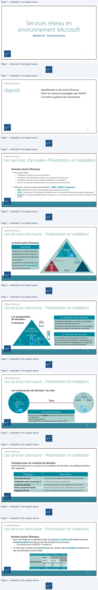
Page 5
Active Directory
Les services d’annuaire - Présentation et installation
Rétrograder / promouvoir un CD
• L’ajout et la suppression d’un contrôleur de domaine sont des actions qui
impactent tous les contrôleurs de domaine de la forêt.
• Avant de rétrograder un contrôleur de domaine, on s’assurera qu’il ne dispose plus
de rôles FSMO.
• Notions abordées dans la slide suivante.
• Sous Windows 2016 et ultérieur, afin de rétrograder un CD, utiliser la commande
suivante :
PS C:\Windows\System32> Uninstall-AddsDomainController
9
9
Active Directory
Les services d’annuaire - Présentation et installation
Les composants de domaine : les 5 rôles FSMO
Rôles
Description
Maître de nom de domaine
Contacté :
•
Lors de l’ajout de la suppression d’un domaine dans un forêt
•
En cas de renommage de domaine (Attention)
Forêt
Maître de schéma
Peut modifier le schéma.
Dans le schéma sont stockées les caractéristiques des objets. Les autres CD ont accès en L au schéma.
Maître RID
Alloue les « bloc d’IDentificateurs Relatifs » aux autres CD.
Ces derniers puisent dans le bloc pour attribuer les SID aux objets.
Maître d’infrastructure
Responsable des objets des autres domaines de la forêt qui sont membres d’objets de son domaine.
Domaine
Maître émulateur PDC
Il gère :
MAJ des mots de passe.
MAJ des GPO.
Synchronisation des horloges.
Explorateur principal de domaine.
10
10
| Rôles | Description | |
| Forêt | Maîtredenomdedomaine | Contacté: • L Eo nr s d se l’ ea j ro eu nt od me mla as gu ep p dr ee s ds oio mn ad i’ nu en (d Ao tm tea ni tn ie nd )ans un forêt • c a d o |
| Maîtredeschéma | P De au nt m leo sd ci hfi ée mr l ae ss och né m sta o. s t c kées les caractéristiques des objets. Les autres CD ont accès en L au schéma. | |
| Domaine | MaîtreRID | A Cello u de rl nes « b plo uc d en’I tD de an nti sf ic lea t be lu or cs pR oe ula t aif ts r» a uu ex a leu st r Se Is C aD u. s e ie rs is r t ib r D x objets. |
| Maîtred’infrastructure | Responsable des objets des autres domaines de la forêt qui sont membres d’objets de son domaine. | |
| MaîtreémulateurPDC | Ilgère: M yA lcJ hd e ts m ao pt ios nd ce pep asa ls ds oe er. M A J d e s G rP tO r. S pn rr o n i us n d h l do og mes a. Ex o a e i i ine. |
Page 6
Démonstration
11
11
TP
12
12
Page 7
Active Directory
Les bases de gestion d’un domaine
Objets de l’annuaire et outils de gestion
• Dans un contexte de domaine AD, les tâches courantes de gestion sont liées à
l’administration des principaux objets de l’annuaire.
Entités de sécurité
Conteneurs
Utilisateur
Unité d’organisation
Ordinateur
Conteneur système
Groupe
• La gestion de ces objets peut se faire :
• Depuis la console Utilisateurs et ordinateurs Active Directory
• Depuis le Centre d’administration Active Directory
• En PowerShell
13
13
Active Directory
Les bases de gestion d’un domaine
Les caractéristiques de l’objet utilisateur
• Ces dernières sont regroupées graphiquement avec un ensemble de catégories.
• Elles sont relatives :
• aux paramètres de l’utilisateur pour l’utilisation des services de bureau distant
Contrôle à distance
Environnement
Profil des services de bureau à distance
Sessions
• aux informations générales concernant l’utilisateur
Adresse
Général
Organisation
Téléphones
• aux informations nécessaires à sa connexion
Compte
Profil
• à l’appartenance aux groupes et aux paramètres utilisateur des connexions entrantes
Membres de
Appel entrant
14
14
Texte relevé dans les illustrations
Environnement
Sessions | Contrôle
à distance | Profil des services Bureau à distance COM+
Général
Adresse
Compte
Profil
Téléphones
Organisation
Membrede Appel entrant
Page 8
Active Directory
Les bases de gestion d’un domaine
Les modèles utilisateur
Il est conseillé d’utiliser des modèles de comptes pour simplifier la création de
nouveaux comptes utilisateurs.
Un nom clair
Le plus grand
Dupliquer le compte modèle
Compte
nombre de
caractéristiques
Nouvel
utilisateur
modèle
Le compte est
inactif
15
15
Active Directory
Les bases de gestion d’un domaine
Les profils utilisateurs
Par défaut, les utilisateurs du domaine peuvent ouvrir une session sur les ordinateurs
du domaine.
Ses propres fichiers / répertoires
Des fichiers de configuration logiciels personnalisés
Utilisateur
Possède
Un environnement de travail personnalisé
AD
Des dossiers personnels
Profil
%systemdrive%\Utilisateurs\%username%
Stockés dans
16
16
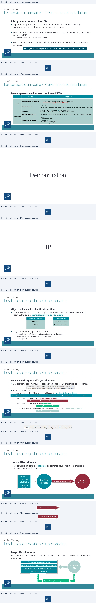
Page 9
Active Directory
Les bases de gestion d’un domaine
Les profils itinérants
Utilisé pour les utilisateurs ayant besoin d’un accès à leur profil depuis n’importe quel
ordinateur. C’est ici qu’interviennent les profils itinérants.
• Le profil est copié du partage vers l’ordinateur
• Synchronisation du profil à chaque fermeture de session
1
Le profil est chargé sur l’ordinateur.
2
L’utilisateur travaille.
3
À la fermeture de session, le profil est synchronisé.
17
17
Active Directory
Les bases de gestion d’un domaine
Les ordinateurs
• Dans un contexte de domaine, les membres s’authentifient afin de disposer d’un
jeton d’accès permettant l’accès aux ressources du domaine.
• Ce processus est commun aux utilisateurs et aux ordinateurs.
• Ceux-ci doivent donc disposer d’un compte dans le domaine.
18
18
Page 10
Active Directory
Les bases de gestion d’un domaine
Les caractéristiques de l’objet ordinateur
• Au même titre que l’objet utilisateur, l’objet ordinateur dispose de caractéristiques
qui lui sont propres.
• Les principales caractéristiques d’un objet ordinateur sont :
• Son nom et sa description
• La version du SE
• Ses groupes d’appartenance
• …
19
19
Active Directory
Les bases de gestion d’un domaine
Les groupes
• Les groupes sont des objets de l’annuaire.
• Tout groupe est caractérisé par un type et une étendue.
• Il en existe deux types :
De sécurité
De distribution
Dispose d’un identifiant de sécurité (SID).
Ne dispose pas d’identifiant de sécurité.
Peut être utilisé pour répondre à un ensemble de besoins.
N’est utilisable qu’à des fins de messagerie.
• L’étendue du groupe détermine le périmètre d’appartenance des membres ainsi que celui d’utilisation.
Global
Universel
De Domaine Local
Local
20
20
Texte relevé dans les illustrations
Propriétés de : W10-Client
2?
xX
Emplacement
Géré par
Appel entrant
Général
Système d'exploitation
Membre de
Délégation
a
MA
WioGien
Page 11
Active Directory
Les bases de gestion d’un domaine
Les groupes globaux
Caractéristiques des GG
Regrouper des objets qui possèdent
GG_Commerciaux_Nantes
Utilité
des caractéristiques communes.
Ils ne peuvent contenir que des
Contraintes
objets utilisateur, ordinateur ou
d’appartenance
groupe global du même domaine.
Ils peuvent être utilisés sur toute
Contrainte
ressource du domaine ou approuvée
d’utilisation
(forêt).
Exemple de nom
GG_Commerciaux_Nantes
Membres
21
21
Active Directory
Les bases de gestion d’un domaine
Les groupes de domaines locaux
Caractéristiques des DL
Ressource partagée
Privilèges
Groupe de Domaine Local
Regrouper des objets qui requièrent un
même privilège d’accès pour une ressource
Utilité
DL_Marketing_Sur_SRVFIC_CT
CT
donnée.
Ils peuvent contenir des objets utilisateur,
DL_Marketing_Sur_SRVFIC_M
Contraintes
M
ordinateur ou groupe de tout domaine de
Marketing
d’appartenance
la forêt.
L
DL_Marketing_Sur_SRVFIC_L
Contrainte
Ils peuvent être utilisés uniquement sur les
DL_Marketing_Sur_SRVFIC_R
R
ressources de leur domaine de création.
d’utilisation
Exemple de nom
DL_Comptabilite_Sur_SRVFIC_L
22
22
Texte relevé dans les illustrations
CR
æ
Page 12
Active Directory
Les bases de gestion d’un domaine
Les groupes locaux
• Ils peuvent être utilisés.
• Les membres du domaine conservent leur base SAM.
• L’utilisation de ce type de groupe est limitée et limitante.
• Ils ne peuvent être utilisés que sur leur poste d’appartenance.
• Cette limite peut être un atout pour certains besoins en termes de sécurité.
• C’est le seul type de groupe qui peut être utilisé hors domaine.
23
23
Active Directory
Les bases de gestion d’un domaine
Les conteneurs système
• Les objets de l’annuaire AD sont stockés dans des conteneurs.
• Ces conteneurs système sont définis par défaut dans tout domaine AD.
Nom de l’objet
Fonction
Builtin
Élements (utilisateurs et groupes locaux) présents dans la base SAM des CD avant leur promotion. Une fois la promotion
faite, ces derniers sont déplacés dans ce conteneur.
Computers
Emplacement de stockage par défaut des comptes ordinateurs.
System
Emplacement de stockage des éléments nécessaires aux fonctionnement de l’AD et aux composants associés.
Users
Emplacement de stockage des groupes et utilisateurs existant par défaut dans un AD.
• Attention :
• Il n’est pas conseillé de conserver les comptes ordinateurs du domaine dans le conteneur
Computer, il en va de même pour les comptes utilisateurs dans le conteneur Users.
24
24
| Nom del’objet | Fonction |
| Builtin | É fale itm e,e cn et ss d(u et ri nli is ea rt se su ors te t ég pro lau cp ée ss l ao nca u cx e) cp oré ns te en nt es d r.ans la base SAM des CD avant leur promotion. Une fois la promotion n d d s u |
| Computers | Emplacement de stockage par défaut des comptes ordinateurs. |
| System | Emplacement de stockage des éléments nécessaires aux fonctionnement de l’AD et aux composants associés. |
| Users | Emplacement de stockage des groupes et utilisateurs existant par défaut dans un AD . |
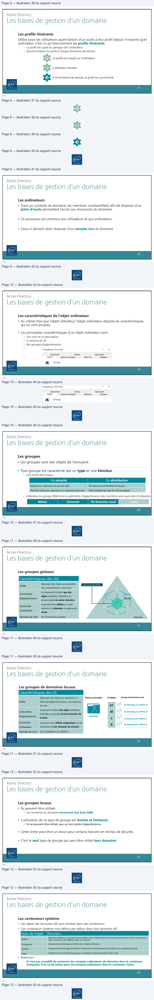
Page 13
Active Directory
Les bases de gestion d’un domaine
Les unités d’organisation
• Des conteneurs supplémentaires peuvent être créés :
• OU Organizational Unit / UO Unité d’Organisation
• L’élaboration d’une structure organisationnelle doit prendre en considération les besoins
suivants :
• Les stratégies de groupe (GPO Group Policy Object)
• Les délégations administratives
• L’organisation des objets dans l’arborescence
• Tout objet de l’annuaire ne peut être positionné directement que dans un seul conteneur.
• Attention :
• Sur les CD, les UO sont protégées contre toute suppression accidentelle (il est possible de
modifier cela).
25
25
Active Directory
Les bases de gestion d’un domaine
Active_Directory
Builtin
Les unités d’organisation
Computers
Domain_Controllers
ForeignSecurityPrincipals
Manage_Security_Accounts
Users
Mon_Entreprise
Groupes
NANTES
Stagiaires
Ordinateurs
Administration
Direction
Formateurs
Ordinateur_Administration
26
26
Texte relevé dans les illustrations
|
si=
a
a 2
i
End
ds
Lecture continue du texte source
Active Directory
Les bases de gestion d’un domaine
Les unités d’organisation
• Des conteneurs supplémentaires peuvent être créés :
• OU Organizational Unit / UO Unité d’Organisation
• L’élaboration d’une structure organisationnelle doit prendre en considération les besoins
suivants :
• Les stratégies de groupe (GPO Group Policy Object)
• Les délégations administratives
• L’organisation des objets dans l’arborescence
• Tout objet de l’annuaire ne peut être positionné directement que dans un seul conteneur.
• Attention :
• Sur les CD, les UO sont protégées contre toute suppression accidentelle (il est possible de
modifier cela).
25
25
Active Directory
Les bases de gestion d’un domaine
Active_Directory
Les unités d’organisation Builtin
Computers
Domain_Controllers
ForeignSecurityPrincipals
Manage_Security_Accounts
Users
Mon_Entreprise
Groupes
NANTES
Stagiaires
Ordinateurs
Administration
Direction
Formateurs
Ordinateur_Administration
26
26Page 14
Active Directory
Les bases de gestion d’un domaine
Importation et exportation de comptes
• Quand un nombre important de comptes utilisateurs doit être créé, l’utilisation
d’outils permet de fiabiliser et réduire la durée de la tâche.
• Des outils dédiés existent (PowerShell ou Csvde par exemple).
27
27
Démonstration
28
28
Page 15
TP
29
29
Active Directory
L’accès aux ressources
Les ressources
• Le partage de ressource est un service nécessaire aux utilisateurs.
• Sa mise en œuvre et sa gestion incombent à l’administrateur système qui doit
respecter les exigences de disponibilités et de sécurité.
• Nous parlerons d’espace disque partagé.
30
30
Page 16
Active Directory
L’accès aux ressources
Utilité des autorisations NTFS
Sur un espace disque formaté en NTFS ou ReFS :
• Les autorisations NTFS permettent de définir quels sont les privilèges d’accès
• Tous les dossiers et fichiers d’un volume formaté y sont soumis
Sécurité NTFS
• Elles sont visualisables et/ou modifiables depuis l’onglet Sécurité des éléments
31
31
Active Directory
L’accès aux ressources
Les caractéristiques des autorisations NTFS
• Deux niveaux de gestions sont disponibles :
• Les autorisations de base
• Les autorisations avancées
• La gestion des permissions est basée sur des règles explicites.
• Plusieurs règles d’accès peuvent s’appliquer à un même utilisateur.
• Chaque règle peut accorder des privilèges ou les ôter.
• Le mécanisme d’héritage s’applique aux autorisations positionnées sur des
dossiers et s’appliquent aux objets enfants.
• Une règle de refus peut être explicite ou implicite.
32
32
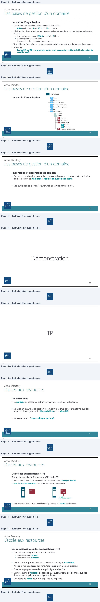
Page 17
Active Directory
L’accès aux ressources
Les autorisations NTFS de base et avancées
• Pour répondre aux besoins courants, les autorisations de base permettent
d’accorder les privilèges suivants :
Lecture
Liste de contenu
Lecture + exécution
Écriture
Modification
Contrôle Total
• Les privilèges complémentaires suivants peuvent être attribués, par les
autorisations avancées.
Appropriation
Création de fichiers
Création de dossiers
Écriture des attributs étendus
Lecture des attributs étends
Modifier les autorisations
Suppression
Suppression de sous-dossiers et fichiers
33
33
Active Directory
L’accès aux ressources
Cumul d’autorisations
• Chaque autorisation s’applique à un objet utilisateur ou groupe de sécurité. Il est
cependant préférable de n’appliquer des autorisations qu’aux groupes.
• Pour chaque entrée de contrôle d’accès, l’autorisation peut être appliquée :
• Autoriser afin d’accorder le privilège correspondant
• Refuser afin d’ôter le privilège correspondant
• À défaut de règle d’autorisation (explicite) le concernant, l’utilisateur est soumis à un refus
implicite.
• Les autorisations sont cumulatives, la résultante des autorisations affectant un utilisateur
correspond au cumul des autorisations le concernant.
• En cas de conflit, le refus l’emporte.
34
34
| Lecture | Listedecontenu Lecture+exécution Écriture | Modification | ContrôleTotal | |
| • | Lesprivilèges autorisations | complémentairessuivants peuventêtreattribués parles , avancées . |
| Appropriation | Créationdefichiers | Créationdedossiers | Écriture des attributs étendus |
| Lecture des attributs étends | Modifier les autorisations | Suppression | Suppression de sous-dossiers et fichiers |
Page 18
Active Directory
L’accès aux ressources
L’héritage des autorisations NTFS
• L’héritage s’applique par défaut aux autorisations NTFS positionnées sur des dossiers.
• Il est conseillé d’affecter ces autorisations en partant de la racine d’une arborescence afin de bénéficier
de l’héritage.
• L’héritage peut être rompu sur un point d’arborescence ou repropagé à partir d’un élément.
• Il y a néanmoins des contraintes :
Au sein d’une même
Entre deux partitions
partition
ou disques
Déplacement
Conservation
Héritage
Copie
Héritage
Héritage
35
35
Active Directory
L’accès aux ressources
Le partage de fichiers
• Le partage vient en complément des autorisations NTFS.
• Un poste disposant de partages joue le rôle de serveur de fichiers.
Partage
Réseau
Sécurité NTFS
36
36
Texte relevé dans les illustrations
#
|
—
| • | Ilyanéanmoinsdescontraintes: | Auseind’unemême partition | Entredeuxpartitions oudisques | |
| Déplacement | Conservation | Héritage | ||
| Copie | Héritage | Héritage |
Page 19
Active Directory
L’accès aux ressources
Les autorisations de partage
• Les autorisations permettent de définir :
• Quels seront les privilèges
• S’ils autoriseront ou interdiront
• Pour qui
• Les trois types de privilèges de partage sont les suivants :
Lecture
Modification
Contrôle Total
• Pour chaque niveau, les privilèges correspondants pourront être :
Autorisé
Refusé
• Chaque règle cible une ou plusieurs entités.
• Les règles de contrôles d’accès sont cumulatives et les refus prioritaires.
37
37
Active Directory
L’accès aux ressources
Autorisations résultantes
Quand l’utilisateur accède depuis son poste de travail à une ressource partagée :
• Il est d’abord soumis aux autorisations du partage
• Puis aux autorisations NTFS
Partage
Sécurité NTFS
• Les privilèges les plus restrictifs prévalent.
38
38
Texte relevé dans les illustrations
Es
s—
Page 20
Active Directory
L’accès aux ressources
Les publications de partage
• Une fois créé, il est possible de le
publier dans l’AD.
• L’objet Partage est soit lié à :
• L’objet ordinateur auquel il est associé.
• Indépendant et peut être déplacé dans
un UO dédié.
• La publication de partage facilite la
recherche pour les utilisateurs depuis
leur poste client avec la fonction
Rechercher dans Active Directory.
39
39
Active Directory
L’accès aux ressources
Stratégie d’imbrication des groupes
Afin de gérer efficacement l’accès aux ressources, Microsoft préconise l’imbrication
des Groupes Globaux et de Domaines Locaux.
• Cf. Slide sur les groupes de Domaines Locaux
A
Le compte utilisateur est créé.
G
Il est affecté aux Groupes Globaux.
Gestion des utilisateurs
Gestion de la ressource
DL
Un groupe de Domaine Local est créé par type de privilège pour chaque ressource.
P
Des autorisations NTFS sont attribuées pour ce groupe de domaine local sur la ressource.
40
40
Texte relevé dans les illustrations
mi
+ | Réseau
HE ee
ete
M
a
=
&
we
ee
~
=
=
—
3———=
Qoee ee
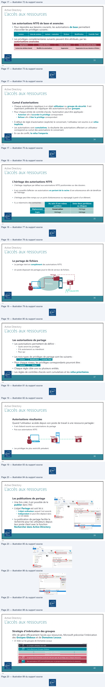
Page 21
Démonstration
41
41
TP
42
42
Page 22
Active Directory
La gestion des impressions
Le service d’impression
• L’ajout du service de rôle Serveur d’impression permet de partager des imprimantes
et centraliser la gestion de l’impression.
• Les imprimantes sont des ressources généralement raccordées au réseau de
l’entreprise.
Réseau
Réseau
• Cependant la mise en place d’un serveur d’impression permet de centraliser et d’en
simplifier la gestion.
43
43
Active Directory
La gestion des impressions
Point de vocabulaire
Vocabulaire
Définition
Port d’impression
Lien qui permet la communication entre le périphérique d’impression et le serveur (ou à un poste client).
File d’attente
Liste des documents en attente de traitement par l’imprimante.
Imprimante locale
Imprimante directement (physiquement) connectée à un serveur ou à un poste client.
Imprimante partagée
Imprimante accessible sur le réseau
• Elle peut être du type imprimante réseau
• Elle peut être du type imprimante locale mais il faut que le poste ou le serveur qui la partage soit
allumé pour qu’elle soit accessible
Imprimante réseau
Imprimante indépendante qui possède sa propre carte réseau, parfois un écran de configuration ou/et
un petit serveur web embarqué pour l’administration à distance.
44
44
Texte relevé dans les illustrations
-_=
—=3
EI 1
| Vocabulaire | Définition |
| Portd’impression | Lien qui permet la communication entre le périphérique d’impression et le serveur (ou à un poste client) . |
| Filed’attente | Liste des documents en attente de traitement par l’imprimante. |
| Imprimantelocale | Imprimante directement (physiquement) connectée à un serveur ou à un poste client . |
| Imprimantepartagée | Imprimanteaccessiblesurleréseau • Ellepeutêtredutypeimprimanteréseau • Ellepeutêtredutypeimprimantelocalemaisilfautqueleposteouleserveurquilapartagesoit allumépourqu’ellesoitaccessible |
| Imprimanteréseau | Imprimante indépendante qui possède sa propre carte réseau, parfois un écran de configuration ou/et un petit serveur web embarqué pour l’administration à distance. |
Page 23
Active Directory
La gestion des impressions
Les tâches de gestion et outils
Vue de l’état des
imprimantes
• L’ajout du service de rôle Serveur
d’impression fournit la console de
gestion Gestionnaire d’impression.
• Cette console rassemble les
composants de gestion nécessaire :
Configuration des
services
d’impression
Gestion du
déploiement par
stratégies
45
45
Active Directory
La gestion des impressions
La gestion des périphériques
• Comme pour les ressources disque, une imprimante doit être partagée pour être accessible via le réseau.
• L’attribution des privilèges se configure depuis les paramètres de sécurité :
Autorisation de base
Autorisation étendue
Imprimer
Gérer l’imprimante
Gérer les documents
Autorisation de lecture
Modifier les autorisations
46
46
Texte relevé dans les illustrations
| Gestion de l'impression
4 GP Filtres personnalisés
[] Toutes les imprimantes (6)
D] Imprimantes
avec travaux
F1 Imprimantes non prêtes
ŒF1 Tous les pilotes (12)
4 à Serveurs d'impression
|=
f= Imprimantes déployées
Page 24
Active Directory
La gestion des impressions
La gestion du déploiement
Plusieurs méthodes peuvent être utilisées pour déployer les imprimantes :
• Le déploiement manuel
• L’utilisation de scripts
• Le déploiement par stratégies de groupe
47
47
Démonstration
48
48
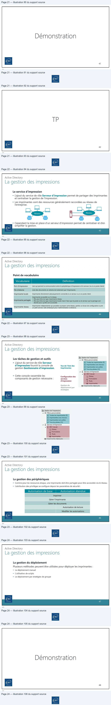
Page 25
TP
49
49
Active Directory
Conclusion
• Vous connaissez le rôle Active Directory
• Vous savez gérer les ressources partagées avec
AGDLP
• Vous connaissez la gestion des imprimantes
50
50
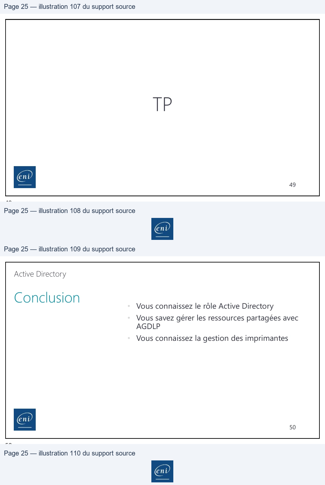
Référence du document : 1vdms-QniMNlL6tu_g8XbsS6Bnf4IGR_S · SHA-256 6477d99065feae3c…
Démonstration · Fiche démo 1 - Mise en place d'un contexte AD · 6 pages transcrites
Page 1
Services réseau en environnement Microsoft
Mise en place d’un contexte
Active Directory
Démonstration 01 du module 02
Cette démonstration décrit les différentes étapes relatives à la mise en place d’un contexte
Active Directory
Déroulement
•
Prérequis
o Avoir installé et configuré une VM Windows Server.
o Avoir renommé correctement la VM.
o Avoir attribué une IP fixe à la VM.
•
Ajout du rôle
Lors de l’accès à la session du serveur, le Gestionnaire de Serveur ou Serveur Manager se lance
automatiquement.
Pour lancer la console permettant la gestion des disques, cliquer sur Manage (1), puis sur Add Roles
and Features (2).
•
Ajout du rôle Active Directory
Cliquer sur le bouton Next (1). Sur la fenêtre Select installation type, cliquer sur le bouton Next (2).
Cliquer sur le bouton Next (3) sur la fenêtre Select destination server. Cocher Active Directory
Domain Services (4), puis cliquer sur le bouton Add Features (5) de la fenêtre contextuelle qui vient
de s’ouvrir. Puis, cliquer sur le bouton Next (6). Sur la fenêtre Select features, cliquer sur le bouton
Next (7). Cliquer sur le bouton Next (8) sur la fenêtre Active Directory Domain Services. Enfin, cocher
la case Restart the destination server automatically if required (9), puis cliquer sur le bouton Yes (10)
de la fenêtre contextuelle qui apparaît. Enfin, cliquer sur le bouton Install (11) pour lancer le
processus d’installation du rôle. Cliquer sur le bouton Close (12) pour terminer le processus
d’installation.
Page 1/6
© ENI – Tous droits réservés
Texte relevé dans les illustrations
Fa Server Manager
-
x
=
1
Server Manager
* Dashboard
~@1
FT
De
tools
ver
He
2 2 oes and Featues_|
Foto
WELCOMETO SERVER MANAGER
Remove Roles and Features
TEE
Add Servers
U ESS
Create Server Group
Hi All Servers
© Cont
i
configure this
local server
Server Manager Properties
Bt File and Storage Services >
songs
local serve
i
fo 15
QUICK START
Bs wos
2
Add rolesandfeatures
3.
Add other servers to manage
Page 2
Services réseau en environnement Microsoft
Page 2/6
© ENI – Tous droits réservés
Texte relevé dans les illustrations
i Add Roles and Features
Wizard
-
o
x
.Fa Add Roles and Features Wizard
-
ao
x
Before you begin
ORONO
Desraarion senven
ware
5
F
esTINATy
Select installation type
wo
This wizard helps you instal roles role services, or features. You determine which roles, role services, or
EEE
features
to install based onthe computing needsof your organization,
such as sharing documents, or
ROCKS
Select
the installation type. You can install roles and features on a running physical computer
or virtual
instalation
Type
hosting a website
machine, or onan fine virtual hard disk (VHD).
Server Selection
5
©
Role-based
or feature-based
ion
To remove roles, role services, or features:
Server Selection
Noa
co
Start the Remove Roles and Features Wizard
Configure single server by adding roles, role services, and features.
Before you continue, verify thatthe following tasks have been completed:
© Remote Desktop Services installation
Install required role services for Vitual Desktop Infrastructure (VDI to create a virtual machine-based
+
The Administrator account has
8 strong password
Sn leee
+ Network settings, such as static IP addresses, are configured
* The most current security updates from Windows Update ae installed
Ifyou must verify that any ofthe preceding prerequisites have been completed, close the wizard,
complete the steps and then run the wizard again,
To continue, cick Next
[1
Skip this page by default
=
en a]
a
<=
Lu
Nate
iat]
(eo
a Add Roles and Features Wizard
-
D
x
ia Add Roles
and Features Wizard
-
D
xX
.
DESTINATION SERVER
NATION
SERVE
Select destination server
Was
Select server roles
PET
anis
PRE
Selecta semer ora virtual hard disk on which to instal roles and features
efor You sage
Select one or mare rolest instal on the selected server.
Installation Type
© Select
a server from the server pool
Installation Type
Roles
Description
D
Select
avirtual hard dk
Server Selection
à STE
Ceneate
Sen
©]
Active Directory Domain Services
pet
peer Pool
-
ToT
Retive Directory Federation
Services
‘objects on the network and makes
[1 Active Directory Rights Management Services
and network administrators,
Device Health Attestation
uses domain controllers to give
avis
TSI LT ea Mictozf Windows Sever 2018 Standard
D ser
resourcesaeonthe ne
1
[ll] File and Storage Services (1 of 12 installed)
1 Host Guardian Senvice
À Hyper-V
I] Network Policy and Access Services
I] Print and Document Services
LI Remote Access
This page shows servers that are running Windows Server 2012 ora newer release of Windows Server,
» Il) Web Server (IS) (11 of 43 installed)
and that have been added by using the Add Servers command in Server Manager. Ofne servers and
»
IZ Windows Deployment Sendces (Installed)
newly-added servers from which data collection is still incomplete are not shown.
L] Windows Server Update Services
.
3
Ï Add Roles and Features Wizard
x
Ï Add Roles and Features Wizard
-
o
x
.
DESTINATION SERVER
Add features that are required for Active Directory
Select server roles
woo
Domain Services?
PIT
Select one or more roles to instal onthe selected server.
You cannot install Active Directory Domain Services unless the
Installation Type
Roles
Description
following role services or features are also installed.
Server Selection
7]
Active Directory Domain Services
[Tools] Group Policy Management
3
Rite Directe
Federation Series
objects on the network and makes
4 Remote Server Administration Tools
ES
LE Active Directory Lightweight Directory Services
es information available to=
4 Role Administration Tools
AD DS
im Atv Dect Rights Management Senses
pores
4 AD DS and AD LDS Tools
Confirmation
2 Saves Heath Aneraton
network user acces to permitted
Active Directory module for Windows PowerShell
E] DNS sence
resources anyuhere on the network
à AD DS Toole
El radars
through
a single logon process.
Tools] Active Directory Administrative Center
' = fle ad Storage Services (1 of 12 insoles)
[Tools] AD DS Snap-Ins and Command-Line Tools
Cl HyperV
[EI Network Policy and Access Services
LC] Print and Document Senices
CI Remote Access
5] Remote Desktop Services
Volume Activation Services
>
[i] Web Server (IIS) (11 of 43 installed)
Include management tools (if applicable)
b> 1 Windows Deployment Services (Installed)
5
Co Windows Server Update Services
v
ara]
6
[<Prev _Net>]
inst | [Cancel]
>ent
Page 3
Services réseau en environnement Microsoft
Page 3/6
© ENI – Tous droits réservés
Texte relevé dans les illustrations
ia Add Roles and Features Wizard
-
ax
_iia Add Roles and Features Wizard
-
ox
DESTINATION SERVER
Select features
ware
DESTINATION SERVER
Active Directory Domain Services
w2018
on
Select one or more features to install on the selected server.
Cooney
Before You Begin
Active Directory Domain Services (AD DS) stores information about users, computers, and other devices
Installation Type
Features
Description
on the network. AD DS helps administrators securely manage ths information
and facilitates resource
Installation Type
sharing and collaboration between users.
Server Selection
VO
| ES
Server Selection
.
Server Roles
b> [Ml] NET Framework47 Features (4 of 7 installed)
eeeoe NET Framework 20
i . |
Thingsto note:
>
Background Intelligent Transfer Service (BITS)
Is with new technologies for
Server Roles
.
Cy Becground
mangent
(rs)
Seen
re eeee
5
To help ensure
that users can stil log on to the network in the case ofa server outage, installa
itLocker
Drive Encryption
Features
minimum of two domain controllers for a domain.
AD DS
BitLocker Network Unlock
appealing user interfaces, protect
Ey annee
your customers’ personal entity
+ AD DS requirea DNSsever
tobeinstalled onthe network you donot havea DNS server
Confirmation
Gi Client for NES
information, enable seamless and
=
installed, you wil be prompted to install the DNS Server role
on this machine.
[] Containers
secure communication, and provide
EE
D] Data Center Bridging
the abilityto model a rangeof
Direct
Play
poses proces
‘Azure Active Directory, a separate online service, can provide simplified identity and
[]
Enhanced Storage
access management, security reporting, single sign-on to cloud and on-premises web
[1 Failover Clustering
apps
Group Policy Management
Lea more about Azure Active Director
[] Host Guardian Hyper-V Support
DUT
:
Ey ve duty orsence
Configure Office 365 with Azure Active Directory Connect
Bis Hostable Web Core
[] Internet Printing Client
[ IP Address Management (IPAM) Server
TI SNS Serer service
v
<
>
ee a=
‘oe
—
Install
iis Add Roles and Features Wizard
-
a
x
~
F
5
DESTINATION SERVER
Confirm installation selections
wane
RE
Dee flowing roles ole services or features on selected server, instal.
Installation Type
[LI
Restart the destination server automatically if required
server Selection
Optional features (such as administration tools) might be displayed on ths page because they have
conver oles
been selected automatically. I you do not want to install these optional features, click Previous to clear
.
~
7
CR
Add Roles and Features Wizard
Features
CS
Active Directory Domain Services
Remote Server Administration Tools
If a restart is required, this server restarts automatically,
Role Administration Tools
without additional notifications. Do you want to allow
40 oona Los Tees
se tor Windows
Powershell
automatic restarts?
tive
Directory
module
for
Windows
Powe
AD DS
Tools
Active Directory Adminitrative Center
10
AD DS Snap-ins and Command-Line Tools
°
=
Export configuration settings
Specify an alternate source path
iia Add Roles and Features Wizard
-
a
x
FE Add Roles and Features
Wizard
-
a
x
DESTINATION SERVER
i
DESTNATON SERVER
Confirm installation selections
wate
Installation progress
w2019
CAE
To install the following roles, role services, o featureson selected server, click Install.
View instalation progress
Installation Type
A1 Restart the destination server automatically if required
©
Festur instalation
Server Selection
Optional features (such as administration tools) might be displayed on this page because they have
ed
en selected automatically.
If you do not want to install
theseoptional features, click Previous to clear
=
Pre
TS
*
Configuration required. Installation succeeded on W2019
Features
Active Directory Domain Services
A
AD DS
‘tive Directory Domain Services
Additional steps are required
to make this machine a domain controller.
Group Policy Management
Promote this server to a domain controller
Remote Server Administration Tools
Group Policy Management
Role Administration Tools
—
Remote Server Administration Tools
[AD
DS and AD LDS Tools
Role Administration
Tools
Active Directory module for Windows PowerShell
[AD DS and AD LDS Tools
AD DS Tools
‘Active Directory module for Windows PowerShell
Active Directory Administrative Center
AD DS Toots
;
AD DS Snap-Ins and Command-Line Tools
Active Directory Administrative Center
AD DS Snap-Ins and Command-Line Tools
v
You can close this wizard without interrupting running tasks. View task progress or open this
je
again by clicking
Notifications in the command bar, and
then Task
Details.
Export configuration settings
oe
cues
Dy cena Nee tae
a
REC
Specify an alternate source path
Export configuration settings
11
12
>ent
Page 4
Services réseau en environnement Microsoft
•
Configuration de l’Active Directory
Une fois l’installation terminée, un « flag » jaune (1) apparaît sur le dashboard. Cliquer sur le drapeau
(2), puis sur la ligne Promote this server to a domain controller (3). Dans la partie Select the
deployment operation (4), cocher le bouton radio Add a new forest (5). Par la suite, spécifier le nom
de votre domaine dans l’input box Root domaine name (6), puis cliquer sur le bouton Next (7).
Renseigner un mot de passe de récupération et le confirmer (8), puis cliquer sur le bouton Next (9).
Dans la fenêtre DNS Options, cliquer sur le bouton Next (10). Cliquer sur le bouton Next (11) dans la
fenêtre Additional Options. Cliquer sur le bouton Next (12) dans la fenêtre Paths. Dans cette fenêtre
l’ensemble des éléments de configurations sont repris, cliquer sur le bouton Next (13). Une fois les
prérequis validés (14), cliquer sur le bouton Install (15). À l’issue de l’installation, la VM va redémarrer
pour appliquer les modifications.
Page 4/6
© ENI – Tous droits réservés
Texte relevé dans les illustrations
Fa Server Manager
_
x
Server Manager
* Dashboard
"@I [A
Manage
Tools
View
Help
I Dashboard
WELCOME TO SERVER MANAGER
Bi
Local Server
Hig All Servers
-
.
-
A
© Configure this local server
fi AD DS
Ÿ
WE File and Storage Services
>|
(USE
fo iis
2
Add
roles and features
Lats
3
Add other servers to manage
MEATS NE
A
€
ata
a carver Aran
ia Server Manager
-
x
2
Server Manager » Dashboard
-@1
D,
Manage
Tools
View
Help
À Post-deployment Configura.
|
TE Dashboard
WELCOMETO SERVER MANAGER
IS
Configuration require fo Active Directory Domain
F
3
satW
BE AlSeners
Qi mms |
me
| e Configure this local server
Promote
this server
to a de
troll
2 Active Directory Domain Services Configuration Wizard
-
D
x
iia Active Directory Domain Services Configuration Wizard
-
ox
©
Confiauratin
TARGET SERVER
main
Cantril.
Le
TARGET SERVER
Deployment Configuration
weo19
Domain Controller Options
‘Wools
4
Deployment Configuration
Tes
Select the deployment operation
s
Select functional level of the new forest and root domain
Read
Domain Controller Options
pourra être
À Add a domain controller
to an existing domain
Nene
Forest functional level:
Windows Server 2016
.
ajusté en
D Add
a new domain to an existing forest
DNS Options
fonction de votre
5
Mere
Domain functional level
Windows Server 2016
ist
Specify the domain information for this operation
s
Specify domain controller capabilities
-
Prerequisites Check
SA Global Catalog (GC)
Read only domain controler (RODC)
8
“Type the Directory Services Restore Mode (DSRM) password
Confirm password
[sooscvccoeeved]
]
7
9
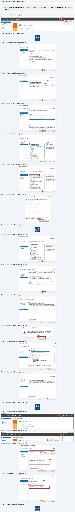
Page 5
Services réseau en environnement Microsoft
Page 5/6
© ENI – Tous droits réservés
Texte relevé dans les illustrations
is Active Directory Domain Services Configuration Wizard
-
o
x
a Active Directory Domain Services Configuration Wizard
-
o
x
.
TARGET SERVER
.
.
TARGET SERVER
DNS Options
weo19
Additional Options
weoa
Th. Acelegaton
forthis DNS servercannot
be created because
the authoritative parent sone cannot be found. Show maw
_X
ere)
7
a
\Verify the NetBIOS name assigned to the domain and change itif necessary
BST
Specify DNS delegation options
Domsin Controleaptions
eee
whens
The NetB10S domain name:
[MONCOMAINE
|
Create DNS delegation
Additional Options
Paths
automatiquement
etecale sur l'entrée
Paths
Review Options
“Benioyment Confgursions”
Review Options
Prerequistes Check
Prerequisites Check
More about DNS delegation
More about acitional options
10
11
[<PreviousJ]Next>]
Install
esta
2 Active Directory Domain Services Configuration
Wizard
-
o
x
i Active Directory Domain Services Configuration Wizard
- ox
TARGET SERVER
TARGET SERVER
Paths
W2019
Review Options
a
Deployment Configuration
Deployment Configuration | Review your selections:
7
Specify the location ofthe AD DS databsce log fils, and SYSVOL
=
Chees
a
Domain Contrler Options
[Configure ths sever asthe fist Active Director domain controll ina new forest.
Database folder
CAWindows\NTDS
DNS
Options
=
DNS Options
The new domain name is “mrondomsine loca”. This ialso the name of the new forest
:
Logfile folder:
CCAWindows\NTDS
Additional Options
Additional Options
The
NetBIOS
name
ofthe
domain:
MONDOMAI
ES:
CAWindowa\SYSVOL
EF
eh
208
es
(ONDOMAINE
FES
Forest Functional Levet Windows Server 2016
Prerequisites Check
Prerequisites Check
Domain Functional Level: Windows Server 2016
Additional Option:
Global catalog: Yes
DNS Semen Yes
Create DNS Delegation: No
5
‘These settings can be exported to 8 Windows PowerShell script to automate
additional installations
More about Active Directory paths
More about installation options
12
13
[_vee>
]
Insal_]
[Nets]
Insta
Ka Active Directory Domain Services Configuration Wizard
-
o
x
TARGET SERVER
Prerequisites Check
W2019
1eee
(© Al prerequisite checks passed successfully, Click Install to begin instalation
Desloyment Configuration
Prerequisites need tobe validated before Active Directory Domain Services i installed on this
Domain Controller Options
computer
Additional Options
Paths
@
View resus
Review Options
À. Windows Server 2019 domain controllers have adefault
for the security setting named
©
£
“Allow enptogrephy algorithme compatible with Windows NT 40° that prevents weaker
cryptography algorthms when establishing securty channel sessions.
For more information about this setting, see Knowledge Base article 942564 (nttp//
‘gomicrazoftcom/folink/inkld= 104751),
Ay This computer hae at least one physical network adapter that does not have static IP
address(es) assigned to its IP Properties. If both IPv4 and IPV6 are enabled fora network
‘adapter, both IPvé and IPV6 static IP addresses should be assigned to both IPvd and
IP\6 Properties ofthe physical network adapter Such static IP addresses) assignment
should be done to all the physical network adapters for reliable Domain Name System
à
À Ifyou click Install, the server automatically reboots atthe end of the promotion operation.
More about prerequisites
Page 6
Services réseau en environnement Microsoft
•
Validation de la configuration AD
À la suite du redémarrage de la VM, la mire de connexion doit proposer la connexion sur le
domaine précédemment configuré (1).
Page 6/6
© ENI – Tous droits réservés
Texte relevé dans les illustrations
le.
MONDOMAINE\Ad ministrator
PE
Le
ae
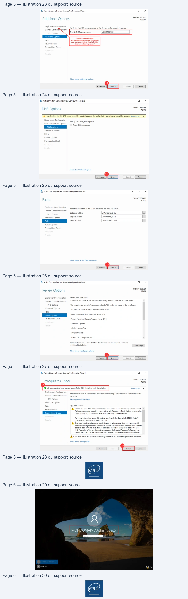
Référence du document : 1DCMI9odaQzxmbabT6GxDxTlDQYm9OzVO · SHA-256 1f0e02a1e98ac8fc…
Démonstration · Fiche démo 2 - Les bases de gestion d'un domaine · 9 pages transcrites
Page 1
Services réseau en environnement Microsoft
Les bases de gestion d’un
domaine
Démonstration 02 du module 02
Cette démonstration décrit les différentes étapes relatives aux opérations courantes dans la
gestion d’un domaine Active Directory.
Déroulement
•
Ouverture de la console MMC
Après l’ouverture de session sur la session du domaine, cliquer sur le menu démarrer (1), puis sur la
tuile Windows Administrative Tools (2).
Page 1/9
© ENI – Tous droits réservés
Texte relevé dans les illustrations
D
sates.
SeverManogr
Pontet
PowelSE
a
M Wicd
Administrative Too
(rs) [et Maree [CometParl
nu.
3
8
os
D
a
oorens
bh
Page 2
Services réseau en environnement Microsoft
•
Ajout du raccourci dans la barre des tâches
Dans l’explorateur qui vient de s’ouvrir, faire un clic droit sur la ligne Active Directory Users and
Computers (1), puis sur la ligne Pin to taskbar (2). L’icône (3) apparaît.
•
Accès à la console Active Directory
Cliquer sur le raccourci précédemment créé afin de voir l’arborescence de l’Active Directory
précédemment configuré.
•
Création Unité d’Organisation
Faire un clic droit à la racine du domaine (1), puis sur la ligne New (2) et enfin sur la ligne
Organizational Unit (3). Indiquer dans l’input box Mon Entreprise (4), puis cliquer sur le bouton OK
(5). L’UO apparaît dans l’arborescence du domaine (6).
Page 2/9
© ENI – Tous droits réservés
Texte relevé dans les illustrations
SD
Manage | Administrative
Tools
9
LÉ > Control Panel
> System
and Security
> Administrative
Tools >
#+ Quick acess
Terminal Services
File
folder
Desk
more
FA Active Directory Administrative
Center
15/02/2
ï
28
Ÿ Douionss
3 Active Directory Domains
and Trusts
5/09/2018
09:14
à
28
| Documents
#4 Active Directory Module
for Windows Po.
5/09/2018
09:
vorteut
2KB
1 Active Directory Users and Computers
15/09/7020.00.
nt
28
a twisPc
Dm nico]
FETES
co)
Open
oo
Network
P Component Senices
ca/|
Open le location
2x8
# Computer Management
Author
pre
Hi Defragment and Optimize Drives
@ Run as administrator
B
3
Dick Clesnup
Pinto Start
8
ie
à ONS
Open with
1
_
[a]
oo
FR Gen Viewer
‘
"
=
#
Eh
AGroup Policy Management
ee
8
à Intemet Information Services (1) Manager
15/03
8
isc
tniator
Sendto
>
Le
Ah Local Securty Poticy
aa
xs
{2 Microsoft Azure Services
er)
8
F3 ODBC Data Sources (32-bit)
570
2KB
FR ODBC Date Sources (64-bit)
50g]
Create shortcut
2x8
5) Performance Monitor
5/0
=
2x8
|e Print Management
5/0
Rename
2e
1 Recovery Dive
(|
Properties
2x8
Ey Active Directory Users and Computers
Los
x
File
Action
View
Help
ec;
FlaSB\|Em
teaver
2] Active Directory Users and Computers [\]| Name
Type
Description
Eee
ee
SHimondomain…
Domain
pe
isl
mondomsinetoc
Saved
Queries
Folder
to store your favo.
Builtin
~
a
ye
Computers
3 Domain Controllers
ForeignSecurtyPrincipals
Users
Page 3
Services réseau en environnement Microsoft
•
Création Arborescence
Dans l’UO « Mon Entreprise » qui vient d’être créée, créer les UO suivantes :
-
Utilisateurs
-
Ordinateurs
-
Groupes
Page 3/9
© ENI – Tous droits réservés
Texte relevé dans les illustrations
Active Directory Users and Computers
ie as
Ver
NewObject
- Organizational Unit
x
¢9\m GS\Pmtaurae
Active Directory Users and Computers
[V| Name
Type
Description
ZA
7
.
D ce
amondomain.... Domain
=A
fein:
mondomaine local”
bes
Folder tostore
your fave.
> ET Balkin
legate Control.
4
> D Computers
Find...
ca
> Bi Domain Conte
Change Domain
> [Ml Managed Serv
2
Mane
fie domain functional level
——————
Ceres
ainer from
accidental deletion
Al ts
5|
=
a
Group
en
FES
msDS-ShadowPrincipalContainer
Help
msimaging-PSPs
3
MSMQ
Queue Alias
Printer
User
5
Shared Folder
[x | Bu De
Bi Active Directory Users and Computers
—
a
x
Faden
View
Help
oo
es\aml ¢oOl\XSGS\Emtearae
Ey Active Directory Users and Computers
| Name
Type
Desctption
7 À Sad Queer
2 Bisendonane oat
There sreno est show ntheve
> @ Buittin
> [M Computers
> Bi Domain Controllers
> D ForeignSecurityPrincipals
EB Managed ence Account
6
ers
E Active Directory Users and Computers
File
Action
View
Help
e9s\fml¢O\XOGBl\ER|BRe&hVToae
[ Active Directory Users and Computers [| Name
Type
Description
> =see
[ET Utilisateurs
Organizational...
¥
ao deaine.loca
lif Ordinateurs
Organizational...
2
[Hi Groupes
Organizational...
> (5 Computers
> GH Domain Controllers
> [M ForeignSecurityPrincipals
> I Managed Service Accounts
> © Users
vy 51 Mon Entreprise
ΠUtilisateurs
@) Ordinateurs
Æi Groupes
ent
Page 4
Services réseau en environnement Microsoft
•
Création Utilisateur
Se positionner dans l’UO Utilisateurs (1). Faire un clic droit, aller sur la ligne New (2), puis sur la ligne
User (3). Dans les deux input box First name et Last name (4), indiquer un prénom et un nom. Dans
l’input box User logon name (5), indiquer un login de connexion pour l’utilisateur, puis cliquer sur le
bouton Next (6). Sur les lignes Password et Confirm password (7), indiquer un mot de passe avec
Majuscule + Minuscule + Chiffre, puis cliquer sur le bouton Next (8). Enfin, cliquer sur le bouton Finish
(9). L’utilisateur apparaît dans l’UO Utilisateurs (10).
Page 4/9
© ENI – Tous droits réservés
Texte relevé dans les illustrations
13 Active Directoy Users and Computers
New Object - User
x
File
Action
View
Help
eolanml¢O\XOGS\Em|tearae
yee Directory User nd Compute name
Type
Dexigton
SO
ca
Hi Uiisoteurs
Organizational
LA
Create in:
mondomaine Jocal/Mon Entreprise/Utiisateurs
Bi Ordinateurs
Organizational.
Es
À Groupes
Organizational
4
> 5 Domain Contre
> D Users
Delegate Control.
Find.
—
(2
5
core
:
All Tasks
>
Contact
Userlogonnee:
bette
InetOrgPerson
same
msD$-ShadowPrincpalContainer
User logon name (pre-Windows 2000):
hee
msimaging-P5Ps
GES
Organizational Unit
Help
9 =
———
6
< Back
Cancel
New Object - User
x
New Object - User
x
LA
Createin: mondomaine local/Mon Entreprise/Utiisateurs
LA
Createin: _mondomaine local/Mon Entreprise/Utiisateurs
Password:
CEE |
|
When you click Finish, the following object will be created:
ne |
Po
User logon name: jbambois@mondomaine
local
User
must cha
jord at next
Eiter
Rs
LT
emeee
en au
[User cannot change password
[Password never expires
[Accountis disabled
——*
9
<Back |Net>||] Cancel
<Back
““B_rish]] |
Cancel
Æ Active Directory Users and Computers
File
Action
View
Help
eo Am ¢O|\XOSBIEB
RM Savor
[ Active Directory Users and Computers [|
Name
Type
Description
> D Saved Queries
@ Jean BAMB...
User
¥_ mondomaine.local
> © Buïttin
> © Computers
> Ii Domain Controllers
> I ForeignSecurityPrincipals
> I Managed Service Accounts
> B Users
ent
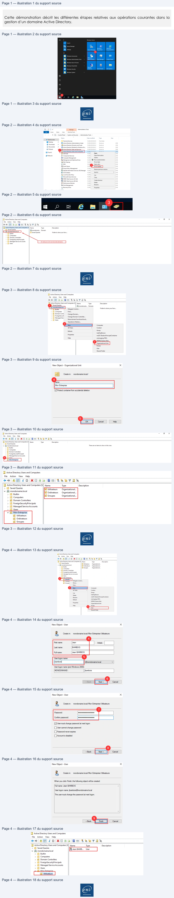
Page 5
Services réseau en environnement Microsoft
•
Création Ordinateur
Se positionner dans l’UO Ordinateurs (1). Faire un clic droit, aller sur la ligne New (2), puis sur la ligne
Computer (3). Dans l’input box Computer name (4), indiquer un nom de machine, puis cliquer sur
le bouton Next (5). Cliquer sur le bouton Next (6). Enfin, cliquer sur le bouton Finish (7). L’ordinateur
apparaît dans l’UO Ordinateurs (8).
Page 5/9
© ENI – Tous droits réservés
Texte relevé dans les illustrations
Fees ones
New Object - Computer
x
CLAIR
IEREENTRETIZE
civDecoyUe and Compute
Name
“yee
caption
-
ae
we
Create in:
mondomaine local/Mon Entreprise /Ordinateurs
>
our
>
Be Computes
> El Domain Controllers
4
> à ForegnsecryPancpal
Computer name:
ES
WAOGien]
2
à Mon tps
pase
Computername (pre-Windows 2000):
CUrer
ED
este control
CET
ove.
Find
-
The following user or group can join this computerto a domain
ns
me
|
as
—
InetOrgPerson
Default: Domain Admins
Change.
ens
‘msDS-ShadowPrincipalContainer
ae
msimaging PSPs
[Assign this computer account as a pre-Windows 2000 computer
Sa Queue les
eS
Organizational Unit
Export it.
oon
Properties
User
———
sip
Shared Folder
=
Hap
|
LE
(cars
Managed
x
New Object - Computer
x
=
“A
Create in: | mondomaine local/Mon Entreprise/Ordinateurs
WAY
Greate in:
mondomainelocal/Mon Entrepise/Ordinateurs
‘
When
you click Finish, the following object willbe created:
if you are creating a computer account for a managed computer, select the
check box below. and then type the computer's complete GUID. The GUID
Fullname: W10-Cient
may
be found in the system BIOS or posted on thecomputer
case.
FT This is a managed computer
Computer's
unique ID (GUID/UUID:
6
< Back
Cancel
Help
< Back
Cancel
Help
ent
Page 6
Services réseau en environnement Microsoft
•
Création Utilisateur
Se positionner dans l’UO Groupes (1). Faire un clic droit, aller sur la ligne New (2), puis sur la ligne
Group (3). Dans l’input box Group Name (4), indiquer le nom du groupe, puis cliquer sur le bouton
OK (5). Le groupe apparaît dans l’UO Groupes (6).
Page 6/9
© ENI – Tous droits réservés
Texte relevé dans les illustrations
[ Active Directory Users and Computers
File
Action
View
Help
esl\aml¢O\XSSB\Em|Seavrae
Æ Active Directory Users and Computers [V|
Name
Type
Description
> Gil Saved Queries
MEWi0-Client
Computer
VS mondomaine.local
> © Builtin
> © Computers
> &) Domain Controllers
> © ForeignSecurityPrincipals
> [fi Managed Service Accounts
> © Users
v & Mon Entreprise
Bi Groupes
Active DirectoryUsers
and Computes
.
we ton Ven Hp
New Object - Group
x
e9o\an
4
O|XOeS\Em turer
1 Active Directory Users and Computes] Name
Tye
Description
rea
&
Create in:
_mondomaine.local/Mon Entreprise/Groupes
> DBuin
> bomen Contoten
4
> DForegnSecuinPancipls
> (Managed Sence Accounts
VE
Mon Entreprise
& Uiateus
QE
Gfoup name (pre-Windows 2000):
More.
Find.
Qu
BP
CRE
Al Tasks
9 Contact
© Domain local
© Security
=
Tee
© Global
Onistribution
botLit
Organizational Unit
parle. GG = Groupe Global // DL=
—
que
5
=
Shared Folder
| ox |
Cancel
1 Active Directory Users and Computers
File
Action
View
Help
=
n
=
_
4
ed ar ¢OIXOSBIEBRI S&T ae
Æ Active Directory Users and Computers [V|
Name
Type
Description
> Gi Saved Queries
8%, GG_Groupe.... Security Group...
v #4 mondomaine.local
> © Builtin
> 1 Computers
> &) Domain Controllers
> 1 ForeignSecurityPrincipals
> 1) Managed Service Accounts
> OF Users
v Æi Mon Entreprise
(@) Utilisateurs
à
Ordinateurs
ent
Page 7
Services réseau en environnement Microsoft
•
Intégration Ordinateurs dans AD
Prérequis : avoir une VM Windows 10 configurée (correctement nommée, sur le même sous-réseau
que la VM sur laquelle l’Active Directory est installé).
Aller dans les propriétés système de la VM Windows 10. Pour ce faire, appuyer simultanément sur la
touche Windows du clavier ainsi que la touche R du clavier. Indiquer control dans l’input-box (1),
puis cliquer sur le bouton OK (2). Cliquer sur le lien Système et sécurité (3). Cliquer sur le lien Système
(4). Cliquer sur le lien Modifier les paramètres (5). Cliquer sur le bouton Modifier (6). Cocher le bouton
radio Domaine et indiquer le nom du domaine à rejoindre (7), puis cliquer sur le bouton OK (8). Saisir
les informations de sécurité (9), puis cliquer sur le bouton OK (10). Après redémarrage de la VM, la
mire de connexion propose la connexion sur le domaine.
Page 7/9
© ENI – Tous droits réservés
Texte relevé dans les illustrations
| Exécuter
x
[=]
Entrez le nom d'un programme, dossier, document ou
"4
ressource Internet, etWindows l'ouvrira pour vous,
x
[23 Panneau de configuration
-
o
x
EH
> Panneau
de configuration >
v1)
[Rechercher
2
Ajuster les paramètres de l'ordinateur
Afficher par:
Catégorie +
3
Comptes d'utilisateurs
Enregistrer des copies
de
sauvegarde
de vos fichiers à
?
l'aide de l'Historique
des fichiers
ME
Sauvegarder et restaurer (Windows 7)
wy Apparence et personnalisation
h
Réseau et Internet
7
A
Connexion à Internet
éd)
Horloge et région
Afficher l'état et la gestion du réseau
¢
Modifier les formats de date, d'heure ou de nombre
1 Matériel et audio
Options d’ergonomie
Ajouterun périphérique
Optimiserl'affichage
Programmes
TGP]
vésinstaer
un programme
Page d'accueil du panneau de
z
+2
.
configuration
Sécurité et maintenar
Vérifier l'état de votre ordini
© Système et sécurité
9 Modifier les paramètres «
:
Résoudre des
problémes inf
Réseau et Internet
P
Matériel et audio
Pare-feu Windows De
érifier l'état du pare-feu
Programmes
4
Comptes d'utilisateurs
Ra Système
ae
=
Afficherla quantité de mérr
Apparence et personnalisation
a
:
:
Lancer l'assistance à distanc
Horloge et région
ent
Page 8
Services réseau en environnement Microsoft
Page 8/9
© ENI – Tous droits réservés
Texte relevé dans les illustrations
GA Système
-
o
x
€
+ 4 E >
Panneau de configuration
> Système
et sécurité
» Système
vD | Rechercher
P
€
Page d'accueil du panneau de
Inf
:
x
énéral
configuration
informations système générales
@ Gestionnaire de périphériques
Edition Windows
© Paramètres d'utilisation à
Windows 10 Professionnel
nm
.n O
S
distance
© 2019 Microsoft Corporation.Tous droits réservés.
W | d
WV. 10
@ Protection du système
a
@ Paramètres système avancés
Système
Processeur :
Intel(R) Core(TM) i5-8250U CPU @ 1.60GHz 1.80 GHz
Mémoire installée (RAM):
2,00 Go
Type du système:
Système d'exploitation 64 bits, processeur x64
Stylet et fonction tactile:
La fonctionnalité d'entrée tactile ou avec un stylet n'est pas disponible sur cet écran.
Paramètres de nom d'ordinateur, de domaine et de groupe de travail
5
Nom de l'ordinateur:
W10-Client2
@ Modifier les
Nom complet:
W10-Client2
paramètres
Description de l'ordinateur:
Groupe de travail:
WORKGROUP
Propriétés système
x
Modification du nom ou du domaine de l'ordinateur
X
Paramètres système avancés
Protection du système
Utiisation à distance
eme
Nom de l'ordinateur
Matériel
ordinateur. Ces modfications peuvent influer
sur l'accès aux
ressources réseau.
RQ
Windows utile les informations suivantes pouridentifier votre
=
ordinateursurle réseau
Nom de l'ordinateur
Desorptionde rdateur[7
W10Cient2
Par exemple : "L'ordinateur
du salon” ou
"ordinateur d'Antoine"
Nom completde l'ordinateur
Nom complet de
l'ordinateur
W10-Clent2
W10-Client2
Groupe detravail
WORKGROUP
Pour utiliser un Assistant et vous joindre à un
2
5
.
domaine ou un groupe detraval. ciquez sur dentté ent surle réseau...
7
sur le réseau.
5
© Domaine *
ne
Oa]
domaine ou de groupe de travail, cliquez sur Modfier.
© Groupe de travail :
WORKGROUP
3;
[OK]
Annuier
Sécurité Windows
x
Modification du nom ou du domaine de
7
2
l'ordinateur
Entrez le nom et le mot de passe d'un compte autorisé à joindre
le domaine.
mondomaine\administrator
000000000000]
@
ent
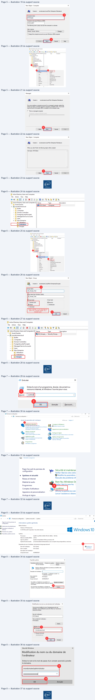
Page 9
Services réseau en environnement Microsoft
•
Vérification de l’ajout du nouvel ordinateur dans l’AD
Se connecter sur la VM sur laquelle est installé l’Active Directory. Ouvrir la console Active Directory
Users and Computers. Aller sur l’UO Computers (1). Faire un clic droit sur le nouvel ordinateur, puis
sur le menu Move (2). Sélectionner l’UO Ordinateurs précédemment créée (3), puis cliquer sur le
bouton OK (4). L’ordinateur se trouve désormais dans l’UO Ordinateurs précédemment créé.
Page 9/9
© ENI – Tous droits réservés
Texte relevé dans les illustrations
J Active Directory Users and Computers
File
Action
View
Help
+2 d'ÉlXEOGBIBElSRS VER
=| Active Directory Users and Computers [V||
Name
Type
Description
> ©
Saved Queries
MlW10-CLIENT2 Computer
3
mondomaine.local
1
Builtin
GF Active Directory Users and Computers
Move
x
File
Action
View
Help
e+2r| ¢Ol\XOSBIEM|teaerae
CHR
Gy Active Directory Users and Computers [V|
Name
Type
Description
> I Saved Queries
ÉSwi-c piece
|
ij mondomaine
¥ Ha mondomaine.local
Add to a group...
1 Buitin
> ©
Builtin
Disable A
a
{5 Computers
[1] Computers
ha x set
#1 Domain Controllers
> El Domain Controllers
pap
Reset Account
2-{15) ForeignSecurtyPrincipals
> ©) ForeignSecurityPrincipals
| Managed Service Accounts
> Di Managed Service Accounts
Manage
SIPS Won
Enrreprse
> © Users
{Bj Groupes
v i Mon Entreprise
PRES
>
ol
Æ Utilisateurs
Cut
HET
Utilisateurs
1 Ordinateurs
Delete
{5 Users
@) Groupes
Properties
4
Help
Fok
|
Cances
eni
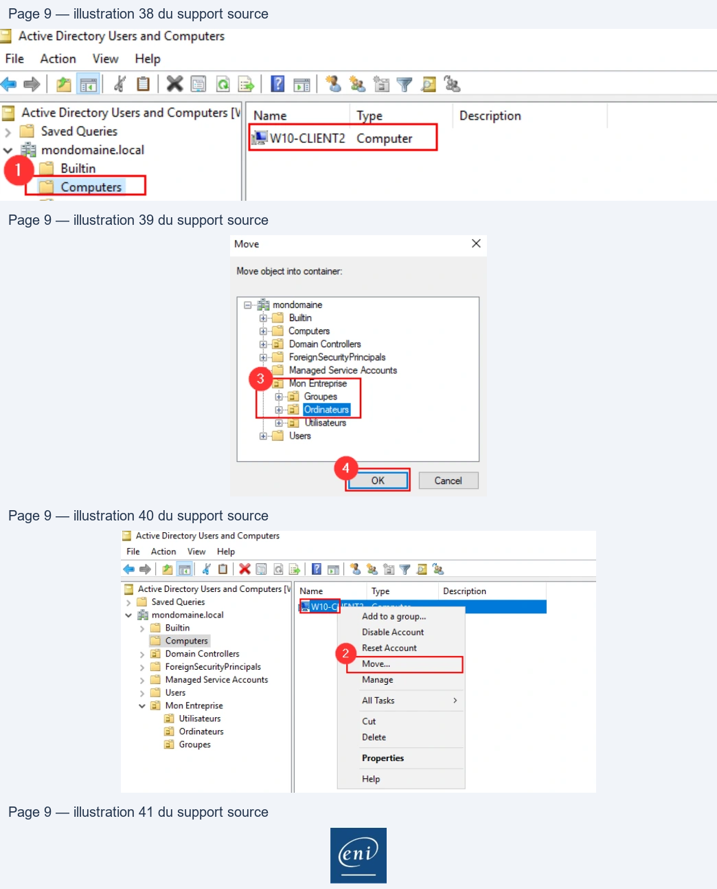
Référence du document : 1hbc5tZ6pphePd8otUMwo5__RpcpQqYZv · SHA-256 98736da7e470ebdd…
Démonstration · Fiche démo 3 - L'accès aux ressources · 6 pages transcrites
Page 1
Services réseau en environnement Microsoft
L’accès aux ressources
Démonstration 03 du module 02
Cette démonstration décrit comment gérer les accès à des ressources partagées dans un
contexte de domaine Active Directory.
Déroulement
•
Création de groupes de Domaine Local
Ouvrir la console Active Directory Users and Computers sur la VM où est installé l’Active Directory.
Se positionner sur l’Unité d’Organisation Groupes (1). Créer quatre nouveaux groupes.
L’ensemble de ces groupes sera de type « Domaine Local » :
DL_Public_CT = Groupe de Domaine Local pour la ressource Public en accès Contrôle Total
DL_Public_M = Groupe de Domaine Local pour la ressource Public en accès Modification
DL_Public_L = Groupe de Domaine Local pour la ressource Public en accès Lecture
DL_Public_R = Groupe de Domaine Local pour la ressource Public en accès Refus
Page 1/6
© ENI – Tous droits réservés
Texte relevé dans les illustrations
E Active Directory Users and Computers
—
x
File
Action
View
Help
es\amlolOas\Emtearae
I Active Directory Users and Computers [V/| Name
Type
Description
> GG Saved Queries
66_Groupe.Test
Security
Group.
vB mondomaine
local
Bcc
Groupe.
"y
Group.
>
Buitin
Computers
> El Domain Controller
> D Managed Service Accounts
D Users
+ Æi Mon Entreprise
Hi Utilisateurs
[D
Odinateurs
New Object - Group
x
New Object - Group
x
New Object - Group
x
New Object - Group
x
GB, our mormaneameneneitnee
GB, our morémanemameneneene
GR,
con nonémane naMnemenennnes
GR, our mrémremamneeens
wy
—
en
——
—
Pb
BLP
croup rane(remon 200):
Grp name renéons 2000
Gr noneGre Mio 200):
croup nan re réons 200):
Bear
pes
OLAR
anne
cate
—
En
—
—
ee
cr
© Domain local
©Searity
© Domain local
©searity
© Domain local
security
© Domain local
©Secunity
© Global
Onistrbution
OGobal
Odistribution
Ochobal
Odistribution
O Global
Odistribution
Ouniversal
Ounwersal
Ouniversal
Ouniversal
(ee)
met
(ee)
cet
[oe]
[cover
Ex]
=)
Page 2
Services réseau en environnement Microsoft
•
Affectations Groupe Global Utilisateur
Se positionner sur l’Unité d’Organisation Utilisateurs (1). Double cliquer sur l’utilisateur présent dans
l’Unité d’Organisation. Cliquer sur l’onglet Member Of (2). Cliquer sur le bouton Add (3). Dans l’input-
box Enter the object name to select, indiquer le nom du Groupe Global créé dans la démonstration
précédente (4), puis appuyer sur la touche [Entrée] du clavier. Enfin, cliquer sur le bouton Apply (5)
pour valider l’ajout du groupe à l’utilisateur.
Page 2/6
© ENI – Tous droits réservés
Texte relevé dans les illustrations
Æ Active Directory Users and Computers
—
a
x
File
Action
View
Help
CET O|\GG3\Em| teres
1 Active Directory Users and Computers[| Name
Type
Description
[Bl Saved Queries
Jean BaMBOIS
User
¥ Fi mondomainelocal
© Buikin
Di Computers
>
i] Domain Controllers
>
ForeignSecurtyPrincipals
>
[Bl Managed Service Accounts
>
Users
PL
Mon Entreprise
EI Orsinateurs
fl Groupes
Jean
BAMBOIS Properties
?
x
Jean BAMBOIS Properties
2
x
Select Groups
x
2
Dain
Environment
Sessions
Remote control
Remote Desktop Services Prle
COM+
Remote
control
Remote Desktop Services Profile
COM+
General
Address
Account
Profile
Telephones
Organization
Select this object type:
General
Address | Account
Profle
‘Telephones
Organization
Member Of
Dain
Environment
Sessions
Groups
or Buin security principals
Object
Ty
.
LA
Jean BAMBOIS
Member of:
From this location:
Domain Users
mondomaine local/Users
~
Frat name
ital
4
—
Gite
fed raves eb(mel
Last
name
BAMBOIS
GG Groupe Test
| Check Names |
Display name:
\Jean BAMBOIS
Descrption:
[
]
Of
|
Aévanced
Conca
3ef|| Remore
Ema
12277]
Panay ou:
Domain Users
Web page a
Ther temo needto change Pinar ou unless
SAME
you have Macintosh clients or POSIX-complant
2pplcatons
CE
Cros |
DIN
NE
Jean BAMBOIS Properties
?
x
Remote contol
Remote Desktop Services Prfie | COM+
General
Adcress
Account
Profle
Telephones | Organization
Member Of
Dialin
Environment
Sessions
Memberof
Name
‘ative Drectry Domain Services Folder
Domain Users
mondomaineJocal/Usere
GG_Groupe_Test | mondomaine ocal/Mon Entreprise Groupes
Primary oup:
Domain Users
There i no need to change Primary group unless
‘Sst Frimeny PUP
you have Macintosh clients or POSIX-compliant
applications
5
Helo
Page 3
Services réseau en environnement Microsoft
•
Affectations groupe de Domaine Local
Se positionner sur l’Unité d’Organisation Groupes (1). Double cliquer sur le groupe DL_Public_M.
Cliquer sur l’onglet Members (2). Cliquer sur le bouton Add… (3). Dans l’input-box Enter the object
name to select, indiquer le nom du Groupe Global créé dans la démonstration précédente (4), puis
appuyer sur la touche [Entrée] du clavier. Enfin, cliquer sur le bouton Apply (5) pour valider l’ajout
du groupe.
Page 3/6
© ENI – Tous droits réservés
Texte relevé dans les illustrations
[Dd Active Directory Users and Computers
-
x
File
Action
View
Help
CET
IEEE RETIRE
Ty Active Directory
Users and Computers || Name
Type
Description
> (Bl Saved Queries
AA GG. Groupe Test
Security Group.
via morgane local
AOL Public_CT
Security Group...
> À Domain Controller
ROL Public L
Security Group.
À À pcanscatypccipas | AROLPublecR
Security Group.
> (Bl Managed Service Accounts
> Gh User
+ i Mon Entreprise
1 Usiisateurs
17
DL_Publie
M Properties
2
x
DL_Public_M Properties
2
x
Select Groups
x
General
MemberOF | ManagedBy
General
Members MemberOf ManagedBy
Select
this object type:
SR
LA
DL Pubie_M
Members
or
Buin
pi
=
.
Name
Active Directory Domain Services Folder
From this location:
Group name (pre-Windows 2000):
4
Enter the object namesto select (examples)
Dec [7
(6G Goue Tel
ES
Group scope
Group type
© Dementcal
O secaty
Advanced
Canoe
Global
© Distribution
O Universal
Notes:
3
a
=a]
Cros | D
DL_Public_M Properties
2
x
General
Members
MemberOf ManagedBy
Members:
Name
Active Drectory Domain Services Folder
$,GG_Groupe_…
mondomaine local/Mon Entreprise/Groupes
Fave
5
0|ces
ent
Page 4
Services réseau en environnement Microsoft
•
Création de la ressource partagée
Se positionner sur un volume (ici le RAID1 créé lors des démonstrations précédentes). Création d’un
nouveau dossier nommé Public (1). Faire un clic droit sur le dossier Public puis sur le menu Properties
(2). Cliquer sur l’onglet Sharing (3), puis sur le bouton Advanced Sharing… (4). Cliquer sur la case à
cocher Share this folder (5), puis cliquer sur le bouton Permissions (6). Ajouter l’ensemble des droits
pour le groupe Everyone (7), puis cliquer sur le bouton Apply (8). Cliquer sur le bouton Apply (9),
puis sur le bouton OK (10). Cliquer sur l’onglet Security (11). Sélectionner le groupe Users (12), puis
cliquer sur le bouton Edit… (13). Sélectionner le groupe Users, puis cliquer sur le bouton Remove
(14). Cliquer sur le bouton Apply (15). Cliquer sur le bouton Add… (16). Ajouter dans l’input-box les
4 DL précédemment créés (17), puis cliquer sur le bouton OK (18). Positionner les droits adéquats
pour chaque DL. Enfin, cliquer sur le bouton Apply (19), puis le bouton OK (20).
Page 4/6
© ENI – Tous droits réservés
Texte relevé dans les illustrations
SE
Manage
RAID1 (H:)
-
a
x
Home
Share
View | Drive Tools
€
€
+ À we
> ThisPC
> RAIDI(H:)
v ® | Search RAID1
(H:)
P
Name
Date modified
Type
Size
# Quick access
I Desktop
*
This folder is empty
J Downloads
*
(2 Documents
#
©
Pictures
LA
EH ThisPC
Network
=! ©
=| RADI (HD
VU
-
Oo
x
Home
share
View
e
€
+ À > ThisPC
> RAIDI(H:)
>
v &) | Search RAID1 (H:)
P
Name
Date modified
Type
Size
M Desktop
.
ublic
ile folder
Ÿ Downloads
*
Fi Documents
x
© Pictures
*
ThisPC
mé Network
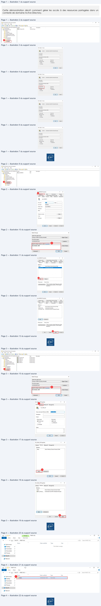
Page 5
Services réseau en environnement Microsoft
Page 5/6
© ENI – Tous droits réservés
Texte relevé dans les illustrations
= 112 Bh =| RADI)
Publis
Properties
x
Advanced Sharing
x
Home
Share
View
5
ISecurty Previous Versions |Customize
5
°
*
à
Network File and Folder Sharing
A Share this folder
Name
Date modit
Publi
# Quick access
No Shared
Settings
Li Public
10/09/2020
Share name:
ER Desktop
*
Network Path
-
pen in new window
Bi Documents
#
Pinto Quick access
Cr. ]
Add
| Remove
©
Pictures
LA ES
Give accessto
>
Adv
‘Shaing
[This PC
MEE
Set custom
cr, cmate die shares, ard st other
Limit the number of simultaneous users to:
167772}
Include in library
>
advanced sharing options.
1
Network
Pin to Start
4
Comments:
@ Advanced Sharing...
Sendto
>
Cut
Copy
6
Delete
Rename
:
Do]
Ex]
ox ||Goes|
DES
Coms
JC se
]
Permissions for Public
x
Advanced Sharing
x
Public Properties
x
11
‘Share Pemissions
General
Previous Versions | Customize
Group or user names:
Mshare this folder
Object name:
H\Pubic
[[Beevenene
Settings
Cru orusernames:
Share name:
S2 SYSTEM
BE Aéro (ONDOMANE tra)
82 Users (MONDOMAINE\Users)
Add
Remove
ba
me
o
change pemissions,
ke.
=
Add
Remove
=LE |
Limit the number ofsimultaneous users to:
777 |
Pemissions forCREATOR
7
16
OWNER
Ak
Deny
Permissions for Everyone’
Flow |
Deny
low
at
Full
control
.
Full Control
[Si
Comments:
"
me
8
Read & execute
Feed
a
List folder contents
Read
Wie
v
[Permissions]
=
For special permissions or advanced settings,
[Agvancad|
1
|
lick Advanced.
Sa
5
10
9
coed
x _]
Ca| cnet Tr|
Ge || he
Public Properties
x
| Permissions for Public
x
General
Sharing
Securty
Previous Versions | Customize
s
Object name:
H:\Public
Object
H\Pie
Group or user names
Group or user names:
CREATOR
OWNER
itSYSTEM
SEDL_Pubic_M (MONDOMAINE\DL_Publc_M)
a
BR
Administrators
(MONDOMAINES
Prisirator)
‘82 DL_Pubic_L (MONDOMAINE\DL_Public_L)
EE TUsers (MONDOMAINE\Users)
]
62 DLPubic_R (MONDOMAINE\DL_Pubic_R)
er|vo
82 Administrators (MONDOMAINE\Adminitrators)
To change permissions, click Edt.
fo. |
Users (MONDOMAINE\Users)
v
<
>
emissions for Users
Alow
Deny
14
Facet
:
CR, =
A
execute
Pemissions for Users
Alow
Deny
List folder contents
v
Full control
Qa
os
Read
V
Modty
Qa
el
Wie
v
Read & execute
el
o
[Avance
List folder contents
i)
oO
For special permissions or advanced settings,
ranced
click Advanced
fey
Read
a
D
15
CIRE
Ces [|
ent
Page 6
Services réseau en environnement Microsoft
Page 6/6
© ENI – Tous droits réservés
Texte relevé dans les illustrations
(1 Permissions for Public
x
Select Users, Combuters, Service Accounts, or Groups
x
Secuty
Select this object type
Object name:
H:\Public
Users, Groups, or Buitin securty principals
Object Types...
Group or usernames:
From this location:
Bs rat (MUNLUMAINE Wnt)
Erterthe object names to select(amies):
Ug
82 Users (MONDOMAINE\Users)
DL Public CT; DL Public L; DL Public M: DL Public R|
Check Names
=
|
| Aa |
À
[cms |
Remove
Advanced...
Cancel
OWNER
Alow
Deny
Full control
oO
o*
Modfy
Oo
Oo
Read & execute
oO
Oo
List folder contents
oO
o
Read
oO
Ov
Cancel_| | Ab
À Permissions
for Public
x
LI Permissions for Public
x
D Permissions
for Public
x
Security
Security
Security
Object name:
= H:\Public
Object name:
H:\Public
Object name:
H:\Public
Group or user names:
Group or user names:
Group
or user names:
BR Administrators (MONDOMAINE\Administrators)
a
82 Administrators (MONDOMAINE\Administrators)
a
82 Administrators (MONDOMAINE\Administrators)
a
$2, DL_Public_CT(MONDOMAINE\DL_Public_CT)
82 DL_Public_CT (MONDOMAINE\DL_Public_CT)
SR DL_Publc_L (MONDOMAINE\DL_Pubic_L)
88 DL_Publc_L (MONDOMAINE\DL_Pubic_L)
$82, DL_Pubic_M (MONDOMAINE\DL_Public_M)
BE DL_Pubic_M (MONDOMAINE\DL_Public_M)
sa DL_Public_R (MONDOMAINE\DL_Public_R)
v
8 DL_Public_R (MONDOMAINE\DL_Public_R)
v
82 DL_Public_R (MONDOMAINE\DL_Public_R)
v
<
>
<]
>
a
>
Add
Remove
|
Add.
||
Remove
|
Add...
Remove
Dery
PemissensforDL_ Pe
How]
Deny
Fm DL
Fr]
_ey
Full control
Lo
D
Full control
o
os,
Full control
oO
D
Mody
Hi
Oo
Modify
o
o
Modify
yw
ia]
Read & execute
4
Oo
Read & execute
Oo
Oo
Read & execute
iw]
o
List folder contents
i)
Oo
List folder contents
[nl
Oo
List folder contents
Oo
Read
i)
oy
Read
wl
Ov
Read
A
Oy
=
=
=
=
=
=
Cancel |
| Ab
[oR]| came
|| Am
|
Caneel | | Fooly
LL Permissions for Public
x
LL Permissions for Public
x
Securty
Securty
Object name:
H:\Public
Object name:
H:\Public
Group or user names:
Group or user names:
82 Administrators (MONDOMAINE\Administrators)
a
82 Administrators (MONDOMAINE\Administrators)
a
8% DL_Public_CT (MONDOMAINE\DL_Public_CT)
$8 DL_Publc_CT (MONDOMAINE\DL_ Public_CT)
82 DL_Public_L (MONDOMAINE\DL_Public_L)
82 DL_Public_L (MONDOMAINE\DL_Public_L)
82 DL_Public_M (MONDOMAINE\DL,_Public_M)
82 DL_Public_M (MONDOMAINE\DL_Public_M)
DL_Public_R (MONDOMAINE\DL, Public_R)
v
88 DL_Public_R (MONDOMAINE\DL Pubic_R)
v
<
>
<
>
|
Ad.
||
Remove
|
Add...
Remove
Pemmissions for DL_Public_R
Allow
Deny
Permissions for DL_Public_R
Allow
Deny
Full control
Oo
a
Ful control
oO
ws
Mody
ia
4
Modify
go
Fi
Read & execute
Oo
i)
Read & execute
QO
FH
List folder contents
im
HA
List folder contents
Oo
a
Read
a
4
Read
Qo
By
20
LE) ———
OK]
Ca Tam|
ent
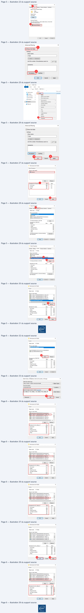
Référence du document : 1R7vZ8RE1ofisB6Sa9Op42a3XCaGjgUht · SHA-256 6d2b7928549af8f2…
Démonstration · Fiche démo 4 - La gestion des impressions · 10 pages transcrites
Page 1
Services réseau en environnement Microsoft
La gestion des impressions
Démonstration 04 du module 02
Cette démonstration décrit comment gérer les impressions dans un contexte Active Directory
Déroulement
•
Installation du rôle Services d’impression et de numérisation de documents
Sur la VM W2019, lancer l’utilitaire d’installation de rôle (via le dashboard), puis cocher la case Print
and Document Services (1). Cliquer sur le bouton Add Features (2) sur la fenêtre contextuelle.
Cliquer sur le bouton Next (3). Cliquer sur le bouton Next (4). Cliquer sur le bouton Next (5). Cocher
la case Restart the destination server automatically if required (6), puis cliquer sur le bouton Install
(7). Enfin, cliquer sur le bouton Close (8).
Page 1/10
© ENI – Tous droits réservés
Texte relevé dans les illustrations
i Add Roles and Features Wizard
-
oa
x
> Add Roles and Features Wizard
x
DESTINATION SERVER
Select server roles
\W2019.mondomaine local
Add features that are required for Print and Document
Services?
PRE
Select one or more roles t install on the selected server.
Installation Type
Roles
Description
The following tools are required to manage this feature, but do not
en
(jac Dect Const Sewicee
=]
Print and Document Services
have to be installed on the same server.
ve
Directory
Domain Services (instal
enables you to centralize print server
—
À ace Directory FeseratonSewees
aed network printer management
4 Remote Server Administration Tools
(eS
[] Active Directory Lightweight Directory Services
tasks
4 Role Administration Tools
Active Breton fights Management Series
[Tools] Print and Document Services Tools
evice
Health
Attestation
1 DHCP Server
#1
DNS Server (Installed)
Ci Fax Server
L [ll File and Storage Services (2 of 12 installed)
[] Host Guardian Service
À] Hyper-v
LD
Network Policy and à
pices
Moine and Document Service
DT
Remote Access
[1 Remote Desktop Services
Bi Volume Activation Services
0 [Bl] Web Server (IS) (11 oF 43 installed)
p 8WindowsRE
ales)
Include management tools (if
agglicable)
[] Windows Server Update Services
:
2arr
Page 2
Services réseau en environnement Microsoft
Page 2/10
© ENI – Tous droits réservés
Texte relevé dans les illustrations
is Add Roles and Festures Wizard
-
o
x
iis Add Role and Features
Wizard
-
a
x
DESTINATION SERVER
DESTINATION SERVER
Select features
2019 mendomaineloca
Print and Document Services
Wa0'9mendomaine!oca
Pen
Select one or more featuresto installon the selected server.
Pore
PrintandDocument Sevis enables youtcentpt sever nd neo inter mangent
Installation Type
Features
Description
Installation Type
7
Server Selection
ae
2]
NET Framework35 combines the
Server Selection
Things
to Note
Server Roles
» [Il .NET Framework
4.7 Features (4 of 7 installed)
power
of the NET Framework20
Server Roles
+ Windows Server 2019 supports print queues using either Type 3 orType4 printer drivers.
Sue
à
Background Intaligent Transfer Service (ITS)
APIs with new technologies for
Li
:
Features
Semen
building applications thot offer
Features
Microsoft recommends using Type4 printer drivers where possible WithType4 printer drivers users
cored Derwent san
i Bates ive Eni
ee
who are notmembersfhliniagroup can cone othe peter y deta and
BiostarNe
Jour customer personal entity
users on
32-bit
clients
can connect without 3
32-bit
drive onthe print server.
Role Services
[1 cent for NFS
information, enable seamless and
Role Services
* To enable clients to connect to shared print queues supported using Type 3 printer drivers on the
et
D conne
secure communication, and provide
exer
print server,
you should use signed, package aware drivers. signed orpackage aware divers ace
5 bata Conte Bridging
the ability to model a range of
Unavailsble, cent users must ether be local administrators or you must have already set the
[2 Direct Play
business processes.
“Computer\Administrative Templates\Printers\Point and Print Restrictions” group policy to configure
Enhanced Storage
security prompts.
silover
Clustering
+
Hyou
are using Type
3 printer drivers and have any 32-bit clients, you must instal
the matching 32-
[1
Failover
Ch
»
ing Type3 pr
y
ys
9
roup
Policy Management
(Insta
bit version ofthe printer drive
on the print server.
you no not installthe 32-bit drivers, clients
Group
Policy
Mi
(installed)
pri
p
ya
ay
[1 Host Guardian Hyper-V Support
not be able to successfully connectto the printer.
i VO Quality of Service
5s Hostabie Web Core
[1 internet Printing Client
[] IP Address Management (IPAM) Server
PT iSNS Server service
v
<
>
Learm more about the Printer Server Role
3
4 =
Les |]
Insta
[Neto |
testa]
iia Add Roles and Features
Wizard
-
0
x
iia Add Roles and Festures Wizard
-
ao
x
;
DESTINATION SERVER
:
DESTINATION SERVER
Select role services
‘wa0t2mondomsinetocal
Confirm installation selections
\W20!2mondomsineeel
Cen
Select the role services to install
for Print and Document Services
tnE
Pensa he folowing oes, role ences rester
on selected serve cick ntl
installation Type
Role services
Description
Installation Type
Restart the destination server automatically if required
Server Selection
Print Server includes the Print
Server Selection
Optional eres
Gacha amination
eo) might Depd on thspage because the have
°
D one
for managing mule printers or
.
Features
print servers and migrating printers
Features
RSI
to and from other Windows print
Boni and Document servi.
| Print and Document Senvices
servers
Print Server
=
Remote Server Adminstration Tools
Role Administration Tools
Print and Document Services Tools
Export configuration settings
Specify an alternate source path
D —
Fs Add Roles and Festures Wizard
-
a
x
q
DESTINATION SERVER
Installation progress
Ww20'9imendomsinelee!
View installation progress
@ Festureinstaition
Installation succeeded on W2019.mondomsine local
Print and Document Services
Print Server
Remote Server Administration Tools
RoleAdministration Tools
Print and Document Services Tools
You can close thie wizard without interupting running tacks View tack progress or open this
page again by clicking Notifications in the command bar, and then Task Details:
Export configuration settings
8
Page 3
Services réseau en environnement Microsoft
•
Ajout du raccourci dans la barre des tâches
Ouvrir Administrative Tools, puis création du raccourci Print Management (1) dans la barre des
taches (2).
•
Installation d’un nouveau driver.
NB : un update via Windows Update sera utile s’il n’y a pas de driver sélectionnable dans l’utilitaire
d’ajout.
Ouvrir la console Print Management depuis le raccourci précédemment créé. Se positionner sur la
ligne Driver (1). Faire un clic droit dans la zone blanche centrale, puis sur le menu Add Driver… (2).
Dans l’utilitaire d’installation, cliquer sur le bouton Next (3). Cliquer sur le bouton Next (4) (pour la
démonstration, seuls des drivers x64 seront installés). Sélection d’un driver, ici HP Color LaserJet Pro
MFP M274 PCL 6 (5), puis cliquer sur le bouton Next (6). Enfin, cliquer sur le bouton Finish (7). Le driver
apparaît correctement (8).
Page 3/10
© ENI – Tous droits réservés
Texte relevé dans les illustrations
SD:
Manage
Administrative
Tools
Don
x
Us RE
e
i esitop
pl
bvent Viewer
8/2018 09
Shortcut
Xe
©
Doris
‘By Internet Information
Services (IS) Manager
15/09/2018 09:13
shortcut
KB
= Documents
¢
iSCSI initiator
99/2018
09:
Shortcut
KB
Pictures
* Bh Local Security
Policy
15/09/2018 0
Shortcut
2KB
this Pc
2 Microsoft Azure Services
0920180213
Shorteut
2KB
"FH ODBC Data Sources (32-bit)
/09/2018 09:
Shortcut
kB
LIDS)
Performance Monitor
(09/2018
09:12
horteut
2KB
es
aoe
9
ra Fee De
VOTENT
St
7
OS
2 LS
[BF Registry Editor
/09/2018
09:12
hortcut
2kB
Fas Server Manager
/09/2018
09:13
Shortcut
2KB
F2 System Configuration
/09/2018 09:
Shortcut
KB
@ Task Scheduler
5/09/2018
08:12
Shortcut
2x8
AP Windows Defender Firewall with Advanc.
09/2018
0:12
shortcut
2KB
[Fil Windows Memory Diagnostic
5/09/20180
Shortcut
248
M
Windows Server Backup
/09/2018
09:14
hortcut
2kB
35] Windows Server Update Services
9720180813
Shortcut
ke
|
Bites
item selected 10018
ae
{& Print Management
-
a
x
File
Action
View
Help
@¢9|f4 | Gs|E me
{@ Print Management
Driver Name
Environment
Driver Version
Driver | Actions
z om Filters
[i Microsoft enhanced Point and... Windows x64
10.0.17763.1
None|
|iDrivers
n
YA
Print Servers
| Microsoft enhanced Point and … Windows NT x86
10.0.17763.1
None
M
W2019 (local
1
.
'
ore Actions
>
[is] Microsoft Print To PDF
Windows x64
10.0.17763.1
None
=
F4]Microsoft
XPS Document Write. Windows
x64.
10.0.17763.1
None
ce
Forms
Ÿ
Ports
i= Printers
mm Deployed Printers
Page 4
Services réseau en environnement Microsoft
Page 4/10
© ENI – Tous droits réservés
Texte relevé dans les illustrations
ei Print Management
File
Action
View
Help
:
9/25/65 et
(BP Add Printer Driver Wizard
x
{fm Print Management
Driver Name
Environment
Driver Version
A
ï
Gl Custom Fitters
Microsoft enhanced Point and... Windowsx64
10.0.17763.1
Welcome to the Add Printer Driver Wizard
vi wane.
[is] Microsoft enhanced Point and … Windows NT x86
10.0.17763.1
va
(local)
(8) Microsoft Print To PDF
Windows x64
10.0.17763.1
CS
[5] Microsoft XPS Document Write... Windows x64
10.0.17763.1
‘D Ports
This wizard helps you install printer drivers for various
1 Printers
platforms on a print server.
ta Deployed Printers
The appropriate printer drivers are then automatically installed
on your computer or on other network computers when they
2
connect to the print server.
==
To continue, click Next.
Refresh.
Export List.
View
>
Arrange Icons
>
Line up Icons
Help
3
< Back
Cancel
Add Printer Driver Wizard
x
ih Add Printer Driver Wizard
x
Processor Selection
Printer Driver Selection
Each processor uses is own set of printer divers.
The manufacturer and model detemine which printer diver to use.
Selectthe processor of all computers that will be using this driver:
SB_Selectthe manufacturer and model ofthe printer driver to instal Ifthe diveryou want is not
listed, click Have Disk to select the driver you want.
Processor
If Windows Update is available, click it for more drivers for this processor.
parusCis
M x64
Des
Manufacturer
4|| Printers
a
Gestetner
[HP Color LaserJet Pro M478f-9f PCL-6 (V4)
Honeywell
RH? Color LaserJet Pro M479 PCL-6
(V4)
(EHP Color LaserJet Pro MFP M274 PCL 6 ff
IBM
||
GBH? Color Laserlet Pro MFP M274 PCL-6
J
J
This driveris digitally signed.
Windows Update
Have Disk...
Tell
me why driver signing is important
4
6
<Back
Cancel
<Back
Cancel
@ Add Printer Driver Wizard
x
Completing the Add Printer Driver Wizard
{@ Print Management
You have successfully completed the Add Printer Driver Wizard.
File
Action
View
Help
¢#9%\45\ cs
You are about to add thefollowing drivers:
HP Color LaserJet Pro MFP M274 PCL 6, x64, Type 3 - User
{& Print Management
Driver Name
8
Environment
Driver Version
Mode
ia] Custom Fitters
BHP Color Laserlet Pro MEP M27... Windows x64
_81.1320.2917
v
ij
Print Servers
-
-
à W2019 local
[is Microsoft enhanced Point and... Windowsx64
10.0.17763.1
Ÿ
IE(loc
lis] Microsoft enhanced Point and... Windows NT x86
10.0.17763.1
rivers
1
Forme
[is] Microsoft Print To PDF
Windowsx64
10.0.17763.1
À ports
[is] Microsoft XPS Document Write... Windows
x64
10.0.17763.1
mn Printers
>
tia Deployed Printers
To close
this wizard, click Finish.
7
<Back
"Fish_]| | Cancel
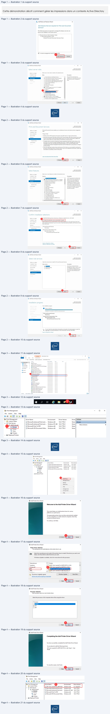
Page 5
Services réseau en environnement Microsoft
•
Installation d’un nouveau port.
Se positionner sur la ligne Ports (1). Faire un clic droit dans la zone blanche centrale, puis sur la ligne
Add Port… (2). Sélection de la ligne Standard TCP/IP Port (2), puis cliquer sur le bouton New Port…
(3). Cliquer sur le bouton Next de l’utilitaire d’ajout de port (4). Indiquer dans l’input-box Printer
Name or IP Adress l’adresse IP de l’imprimante (5). Indiquer dans l’input-box Port Name un nom de
port (6), puis cliquer sur le bouton Next (7). Cliquer sur le bouton Next (8). Enfin, cliquer sur le bouton
Finish (9). Le port apparaît correctement (10).
Page 5/10
© ENI – Tous droits réservés
Texte relevé dans les illustrations
{& Print Management
File
Action
View
Help
1h) Print Management
pa
# =
à
à
File
Action
View
Help
= >| A
i
o i| A oe
eslakl
as be
r
i
_
-
Se Print Management
0
or
Description
Port
Type
inter Nar
i= Print Management
Port N...
Port Description
Port Type
Printer Name
2 Couns
oon reece
me °
en
u oa Filters
@ POR...
Local Port
Write
Microsoft XPSL
Ewen
BUT Laet
Wie
v
rint
Servers
-
ae
g
ocal
Po
rite
5 F| W2019 (local)
4 LPT3:
Local Port
Write
PE
Gas cor
wie
it)
.
:
en Printers
G cou.
Local Port
Wiite
«| Drivers
ww LPT2:
Local Port
Write
es DeployedPres
CO.
Local Port
Write
LC Forms
# LPTI:
Local Port
Write
Geo.
tava
wee
1
M FILE:
— Local Port
Write
= Printers
4 CO…
Local Port
Write
=
mn Deployed Printers
4 CO...
Local Port
Write
Qu
#
CO...
Local Port
Write
a
Refresh
4 CO...
Local Port
Write
Export List
View
>
Aangelcons
>
Lineup Icons
Help
Add Standard TCP/IP Printer Port Wizard
q
Welcome to the Add Standard TCP/IP
Printer Port Wizard
Printer Ports
x
—_
This wizard helps you add a port for a network printer.
Available port types:
Before continuing be sure that:
5
1. The device is turned on.
pooglre
2. The network
is connected and configured.
Standard TCP/IP Port
———#)
New Port Type...
| New Port... M
Cancel
To continue, click Next.
4
Page 6
Services réseau en environnement Microsoft
•
Installation d’une nouvelle imprimante
Se positionner sur la ligne Printers (1). Faire un clic droit dans la zone blanche centrale, puis sur la
ligne Add Printer… (2). Sélectionner le bouton radio Add a new printer using an existing port (3),
sélectionner dans la combo-box le port créé précédemment (4). Cliquer sur le bouton Next (5).
Sélectionner le bouton radio Use an existing printer driver on the computer (6), puis le driver
précédemment installé (7). Cliquer sur le bouton Next (8). Cliquer sur le bouton Next (9). Cliquer sur
le bouton Next (10). Enfin, cliquer sur le bouton Finish (11). L’imprimante apparaît correctement (12).
Page 6/10
© ENI – Tous droits réservés
Texte relevé dans les illustrations
Add Standard TCP/IP Printer Port Wizard
Add Standard TCP/IP Printer Port Wizard
Add port
Additional port information required
For which device do you want to add a port?
Ÿ=
The device could not be identified.
ae
Enter the Printer Name or IP address, and a port name for the desired device.
&
The device is not found on the network. Be sure that:
1.
The device is turned on.
Printer Nameor IP Address:
192.168.1.100
2 Trans danral
6
3. The device is properly configured.
fort Name:
P.fi92.168.1.100
4, The address on the previous page is correct.
If you think the address is not correct, click Backto return to the previous page. Then correct the
address and perform another search on the network. If you are sure the address is correct, select the
device type below.
Device Type
ORS eeBe |Generic Network Card
x
© Custom
LD —
8
<Back
Canoë
< Bock
Canod
Add Standard TCP/IP Printer Port Wizard
q
Completing the Add Standard TCP/IP
Printer Port Wizard
»
{@ Print Management
You have selected a port with the following characteristics.
File
Action
View
Help
eo\afam\
BB
SNMP:
No
{@ Print Management
Port Name
Port Description
Port Type
P
Protocol
RAW, Port 9100
Hi Custom Filters
Ti)
PORTPROMPT:
Local Port
Write
Device:
192.168.1.100
ve 5 wane
)
D P_192.168.1.100
Standard TCP/1. Write
v
local
Port Name:
P_192.168.1.100
à Drivers
W LPTs:
Local Port
Write
Adapter
T
Generic
Network Card
LL]
Forms
Q pra:
Local Port
Write
lapter
Type:
jeneric
Network
Carc
&
a
à
@ Ports
# LPT1:
Local Port
Write
1 Printers
Q FILE
Local Port
Write
ties Deployed Printers
Ë coms
Local Port
Write
@ coms:
Local Port
Write
@ com:
Local Port
Write
To complete this wizard, click Finish.
COMI:
Local Port
Write
LD ———
<Back
Cancel
Page 7
Services réseau en environnement Microsoft
Page 7/10
© ENI – Tous droits réservés
Texte relevé dans les illustrations
{& Print Management
-
oO
x
File
Action
View
Help
@9|\ 4m)
S|
{& Print Management
Printer Name
Queue Status
Jobs In...
Server Name
Actions
ilter
.
.
:
> i nem Filters
8 Microsoft Print to PDF
Ready
0
W2019 (local) | Printers
as
v
rint
Servers
.
=
(= Microsoft XPS Document Writer
Read:
0
'W2019 (local)
a
¥
W2019 (local)
¥
More Actions
>
(+) Drivers
& Forms
1
Port
> m4 Deployed Printers
{@ Print Management
à Network Printer Installation Wizard
x
File
Action
View
Help
=
Printer Installation
¢9\anmlas\am
Pick an installation method
{i Print Management
Printer Name
Queue Status
Jobsin… Sen
>
oan Filters
8 Microsoft PrinttoPDF
Ready
0
wa
A
Printservers
BiMicrosoft
XPSDocument Writer
Ready
o
wa
YH W2019 (loca
;
[B) Drivers
© Search the network for printers
ky Forms
@ Ports
© Add a TCP/IP or Web Services Printerby IP address or hostname
ti Printers
3
4
>
tit Deployed Printers
.
:
mn
(© Add a new printer using an existing port:
P_192.168.1.100 (Standard TCP/IP Port)
v
EE
Show Extended View
reate
a new port and
add
a new printer:
Local Port
v
Refresh
Export Lis.
View
>
Arrange Icons
>
Line up Icons
Hel
5
a
tb Network Printer Installation Wizard
x
1 Network Printer Installation Wizard
x
Printer Driver
Printer Name and Sharing Settings
Pick a driver
for the new printer.
You can give the printer
à friendly name and specty whether other people can use the printer.
Use the printer driver that the wizard selected
Printer Name:
[HP Color LaserJet Pro MEP M274 PCL 6]
Compatible driver cannot be found.
FA Share this printer
6
————
Share Name:
HP Color LaserJet Pro MFP M274 PCL 6
©Use an existing printer driver on the computer
Color LaserJet Pro MFP M274 PCL 6
v
Comment:
Oinstall a new driver
8
9
<Back
Cred
<Back
Cned
ent
Page 8
Services réseau en environnement Microsoft
Page 8/10
© ENI – Tous droits réservés
Texte relevé dans les illustrations
tb Network Printer Installation Wizard
x
Æ Network Printer Installation Wizard
x
Printer Found
‘The printer is ready to be installed. Please review the printer settings below. and then cick Next to
Completing the Network Printer Installation
install the printer.
Wizard
Status:
Name:
HP Color LaserJet Pro MFP M274 PCL 6
Share Name:
HP Color Laserlet Pro MFP M274 PCL 6
Printer installation succeeded.
Model:
HP Color Laserlet Pro MFP M274 PCL 6
Your printer has been installed successfully.
Port Type:
Standard TCP/IP Port
porter
CSESTSSHTD
To test the printer, select Print test page, and then click Finish.
Location:
ee
ip
To install another printer, select Add another printer, and then
click finish,
Comment:
[Print test page
(Add another printer
Dp—
< Back
Cancel
< Back
Cancel
\@ Print Management
File
Action
View
Help
e2n|6B|BE
(& Print Management
Printer Name
Queue Status
Jobsin…
> 3 oem Filters
tt HP Color LaserJet Pro MFP M27... Reach
0
v
rint
Servers
3 w2019 (local)
Be Microsoft Print to PDF
Ready
0
v
local
.
-
:
tH Microsoft XPS Document Writer
Ready
0
4] Drivers
i Forms
D
Ports
fm Printers
> ri Deployed Printers
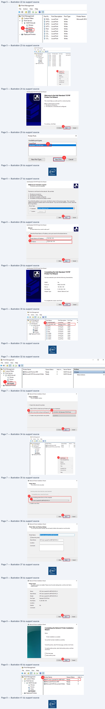
Page 9
Services réseau en environnement Microsoft
•
Installation imprimante sur poste client
L’imprimante étant installée sur le serveur d’impression, elle est désormais disponible pour
l’ensemble des utilisateurs du domaine.
Une fois connecté sur la VM W10 avec un utilisateur du domaine, ouvrir l’explorateur de document.
Indiquer dans la barre, le nom de la VM sur lequel le serveur d’impression est installé (1), puis
appuyer sur la touche [Entrée]. Double cliquer sur l’imprimante nouvellement installée sur le serveur
cible (2). Quand la fenêtre contextuelle apparaît, c’est que le processus d’installation est terminé,
l’imprimante est correctement installée la VM cliente.
Page 9/10
© ENI – Tous droits réservés
Texte relevé dans les illustrations
BZ
= | w2019
-
D
xX
Acg 1
Partage
Affichage
[2]
HP Color Laserlet Pro MFP M274
# Accès rapide
= PCL6
NETLOGON
Public
I Bureau
*
D.
ee.
Ÿ Téléchargement: #
sysvoL
F] Documents
*
eg
=| Images
*
À Musique
FA Vidéos
Gm OneDrive
In cepc
> Réseau
B|
+ | w2019
-
o
x
Accueil
Partage
Affichage
€
2
HP Color Laserlet Pro MFP M274
at Accès rapide
S PcLé
NETLOGON
Public
IN Bureau
*
e
LL <
L Téléchargements #
sysvoL
[2 Documents
*
eg
ent
Page 10
Services réseau en environnement Microsoft
Page 10/10
© ENI – Tous droits réservés
Texte relevé dans les illustrations
[i HP Color LaserJet Pro MFP M274 PCL 6 sur w2019
—
Oo
x
Imprimante
Document
Affichage
Nom du document
État
Propriétaire
Pages
Taille
Soumis
<
>
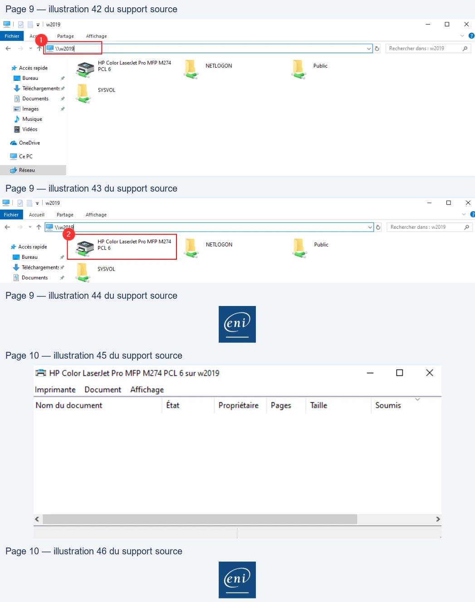
Référence du document : 1JUqdAJleUYwjXnUPpkBX-JoFYSi1YjFo · SHA-256 e87b9387751651bb…
Énoncé · Enoncé du TP 1 - Mise en place d’un domaine Active Directory · 2 pages transcrites
Page 1
Services réseau en environnement Microsoft
Mise en place d’un
domaine Active Directory
TP du Module 02 – Active Directory
Avant de démarrer ce TP, il convient d’avoir suivi les vidéos du module 2 et réalisé les TP
précédents.
Durée estimée
30 minutes à 1 heure
Énoncé
Prérequis
:

Disposer des machines virtuelles installées dans le TP 01 du module 01.
Création d’un contexte de domaine Active Directory
:
Domaine
Monprenom.local
W19-CD1
Contrôleur de domaine
Serveur DNS
W10-CLI1
Client membre
W19-SRV1
Serveur membre
Page 1/2
© ENI – Tous droits réservés
Texte relevé dans les illustrations
|
Page 2
Services réseau en environnement Microsoft
Analyse de différents cas d’ouverture de session
:
Assurez-vous au préalable que les trois hôtes communiquent entre eux.
Pouvez-vous ouvrir une session avec un compte local sur W10-CLI1 ?
Oui
Non
Pouvez-vous ouvrir une session avec un compte du domaine sur W10-CLI1 ?
Oui
Non
Avec quel(s) compte(s) utilisateur(s) ?
Pouvez-vous ouvrir une session sur le contrôleur de domaine W19-CD1 ?
Oui
Non
Avec quel(s) compte(s) utilisateur(s) ?
Dans quelle(s) console(s) et dans quel emplacement pouvez-vous visualiser les
machines hôtes membres du domaine ?
Page 2/2
© ENI – Tous droits réservés
Texte relevé dans les illustrations
OO
OO
O
O
| Services réseau en environnement Microsoft | |
| Analysede différents cas d’ouverture de session : | |
| Assurez-vous au préalable que les trois hôtes communiquent entre eux . | |
| Pouvez-vous ouvrir une session avec un compte local sur W10 -CLI1 ? |
| Oui Non | |
| Pouvez-vous ouvrir une session avec un compte du domaine sur W10 -CLI1 ? |
| Oui Non | |
| Avec quel(s) compte(s) utilisateur(s) ? |
| Pouvez-vous ouvrir une session sur le contrôleur de domaine W19 -CD1 ? |
| Oui Non | |
| Avec quel(s) compte(s) utilisateur(s) ? |

Référence du document : 1B2gL9O4db8aZMg_jx_eaRnpWgikX7Ca6 · SHA-256 5d79597c7a5c0455…
Énoncé · Enoncé du TP 2 - Utilisateurs et groupes en contexte de domaine AD · 4 pages transcrites
Page 1
Services réseau en environnement Microsoft
Utilisateurs et groupes en
contexte de domaine AD
TP du Module 02 – Active Directory
Avant de démarrer ce TP, il convient d’avoir suivi les vidéos du module 2 et réalisé les TP
précédents.
Durée estimée
1 à 2 heures
Énoncé
Prérequis
:
Avoir réalisé le TP précédent du Module 02.
Recherche d’objets dans l’annuaire
:
Utilisez les fonctions de recherche de l’AD pour contrôler si les comptes locaux existants
existent toujours.
Si oui, où se trouvent-ils ?
Où se trouve le compte d’ordinateur W19-CD1 ?
Page 1/4
© ENI – Tous droits réservés
Page 2
Services réseau en environnement Microsoft
Création de la structure de stockage des objets de l’annuaire
:
Créez les unités d’organisation en vous basant sur les informations du tableau ci-dessous.
Type
Nom
Nantes
Agence
Vertou
Rennes
Production
Services
Informatique
Commercial
Intérimaire
Fonction dans les services
Secrétaire
Serveurs Membres
Ordinateurs
Postes Clients
Création des modèles et comptes utilisateurs
Créez des modèles d’utilisateurs pour les services :
Informatique
Production
Commercial
Les caractéristiques des comptes utilisateurs selon leur service d’appartenance sont
indiquées ci-après :
Les utilisateurs du service Production
Leur tranche horaire est soit
o De 6h à 12h o De 13h à 21h
Les utilisateurs du service Informatique
Ils disposent de l’ensemble des privilèges à l’échelle du domaine (à l’exception de
la secrétaire)
Ils travaillent tous à l’agence de Nantes
Les utilisateurs du service Commercial
Ils ne pourront se connecter que sur les postes clients Windows 10
Ils travaillent tous dans l’agence de Rennes
Page 2/4
© ENI – Tous droits réservés
| Type | Nom |
| Agence | Nantes |
| Vertou | |
| Rennes | |
| Services | Production |
| Informatique | |
| Commercial | |
| Fonction dans les services | Intérimaire |
| Secrétaire | |
| Ordinateurs | Serveurs Membres |
| Postes Clients |
Page 3
Services réseau en environnement Microsoft
En partant de vos nouveaux modèles
:
Service Informatique
Service Production
Service Commercial
Stéphane
Philippe
Camille (Secrétaire)
Sophie (Secrétaire)
Pascal
Claude
Samir
Paul
Corentin
mon prénom
Isabelle (Intérimaire)
Ines (Intérimaire)
Vous contrôlerez la bonne prise en compte des caractéristiques des comptes créés.
Dépendance aux services de domaine AD
:
1.
Arrêtez le service DNS du contrôleur de domaine.
2.
Redémarrez le poste client puis effectuez les tests suivants.
Parvenez-vous à ouvrir une session sur le domaine avec l’utilisateur précédemment
utilisé ?
Oui
Non
Parvenez-vous à ouvrir une session sur le domaine avec un utilisateur qui n’a encore
jamais utilisé W10-CLI1 ?
Oui
Non
Après avoir relancé le service DNS, arrêtez le service Netlogon, quelle est la
conséquence de cet arrêt ?
Pour rétablir la situation, relancez les services Services de domaine Active Directory.
Page 3/4
© ENI – Tous droits réservés
Texte relevé dans les illustrations
OO
OO
| Service Informatique | Service Production | Service Commercial |
| Stéphane | Philippe | Camille (Secrétaire) |
| Sophie (Secrétaire) | Pascal | Claude |
| Samir | Paul | Corentin |
| é mon pr nom | Isabelle (Intérimaire) | Ines (Intérimaire) |
| Vous contrôlerez la bonne prise en compte des caractéristiques des comptes créés . | ||
| Dépendance aux services de domaine AD : | ||
| 1 . | Arrêtez le service DNS du contrôleur de domaine . | |
| 2 . | Redémarrez leposte client puis effectuez les | tests suivants . |
| Parvenez-vous à ouvrir une session sur le domaine avec l’utilisateur précédemment utilisé ? | ||
| Oui Non | ||
| Parvenez-vous àouvrir une session sur le domaine avec un utilisateur qui n’aencore | ||
| jamais utilisé W10 -CLI1 ? | ||
| Oui Non | ||
| Après avoir relancé le service DNS arrêtez le service Netlogon quelle est la , , | ||
| conséquence decet arrêt ? |
Page 4
Services réseau en environnement Microsoft
Page 4/4
© ENI – Tous droits réservés
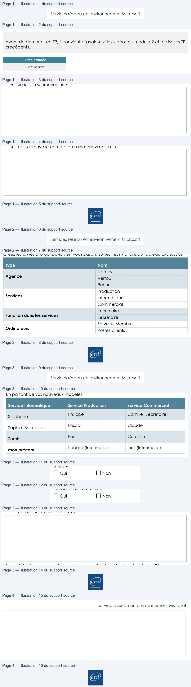
Référence du document : 1j7nol4DzNlXkWLqTBGGz04CO30fUiESh · SHA-256 a1e2b2f811ebf033…
Énoncé · Enoncé du TP 3 - L’accès aux ressources · 2 pages transcrites
Page 1
Services réseau en environnement Microsoft
L’accès aux ressources
TP du Module 02 – Active Directory
Avant de démarrer ce TP, il convient d’avoir suivi les vidéos du module 2 et réalisé les TP
précédents.
Durée estimée
1 à 2 heures
Énoncé
Prérequis
:
Avoir réalisé le TP précédent du Module 02.
Ajout et préparation d’un nouvel espace disque
Ajoutez deux disques de 10 Go chacun au serveur membre W19-SRV1.
Créez un volume en miroir de 5 Go au format NTFS.
Ce volume sera accessible via une lettre de lecteur et depuis C:\datasafe.
L’espace restant (de ces deux disques) sera accessible via le lecteur D:\.
Configuration de profils itinéraires
:
Modifier le compte modèle du service Commercial afin que chaque utilisateur du
service dispose d’un profil itinérant.
Ce profil sera stocké sur le serveur membre depuis C:\datasafe\users et accessible
depuis un partage intitulé « Profils ».
Les comptes existants sont-ils impactés par ces modifications ?
Oui
Non
Sinon, apportez les modifications nécessaires.
Page 1/2
© ENI – Tous droits réservés
Texte relevé dans les illustrations
Se
O
O
| Services réseau | en environnement | Microsoft | ||||
| L’ è acc s aux ressources TP du Module 02 Acti ve Directory – | ||||||
| Avant de démarrer ce TP il convient d’avoir , précédents . | suivi les vidéos du module 2 et réalisé les TP | |||||
| Duréeestimée | ||||||
| 1à2heures | ||||||
| É é nonc | ||||||
| Prérequis : | ||||||
| Avoir réaliséle TP précédent du Module 02 . | ||||||
| Ajoutet préparation d’un nouvel espace disque |
| Ajoutez deux disques de 10 Go chacun au serveur membre W19 -SRV1 . | |
| Créez un volume en miroir de 5 Go au format NTFS . | |
| Ce volume seraaccessible viaune lettre de lecteur et depuis C:\datasafe . | |
| L’espace restant (de ces deux disques) sera accessible via le lecteur D:\ . | |
| Configuration de profils itinéraires : | ||
| Modifier le compte modèle du service Commercial afin que chaque utilisateur du | |
| service dispose d’un profil itiné rant . Ce profil serastocké sur le serveur membre depuis C:\datasafe\users et accessible depuis un partage intitulé « Profils » . | |
| Les comptes existants sont -ils impactés par ces modifications ? | |
| Oui Non | ||
| Sinon apportez les modifications nécessaires , . | ||
| Page1/2 © ENI – Tous droits réservés |
Page 2
Services réseau en environnement Microsoft
Partage de ressources
Configurez le partage de ressources en respectant les contraintes indiquées
Nom du partage
Localisation sur W19-SRV1
C:\datasafe\prod
Production
C:\datasafe\appli
Applications
C:\datasafe\en_cours
Prospects
Le partage Production :
Accessible uniquement aux membres du service Production et aux administrateurs
(ces derniers pourront tout y faire).
Le partage Applications :
Accessible en lecture à tous les membres de la société et en écriture aux membres
du service Informatique.
Les secrétaires n’auront aucun accès.
Le partage Prospects :
Accessible exclusivement aux Commerciaux.
Ajouter un partage Public qui donnera accès aux données se trouvant sur D:\ sur le
serveur membre W19-SRV1.
Ce partage sera accessible à tous en lecture.
Page 2/2
© ENI – Tous droits réservés
| Nom du partage | Localisation sur W19 -SRV1 |
| Production | C:\datasafe\prod |
| Applications | C:\datasafe\appli |
| Prospects | C:\datasafe\en cours _ |
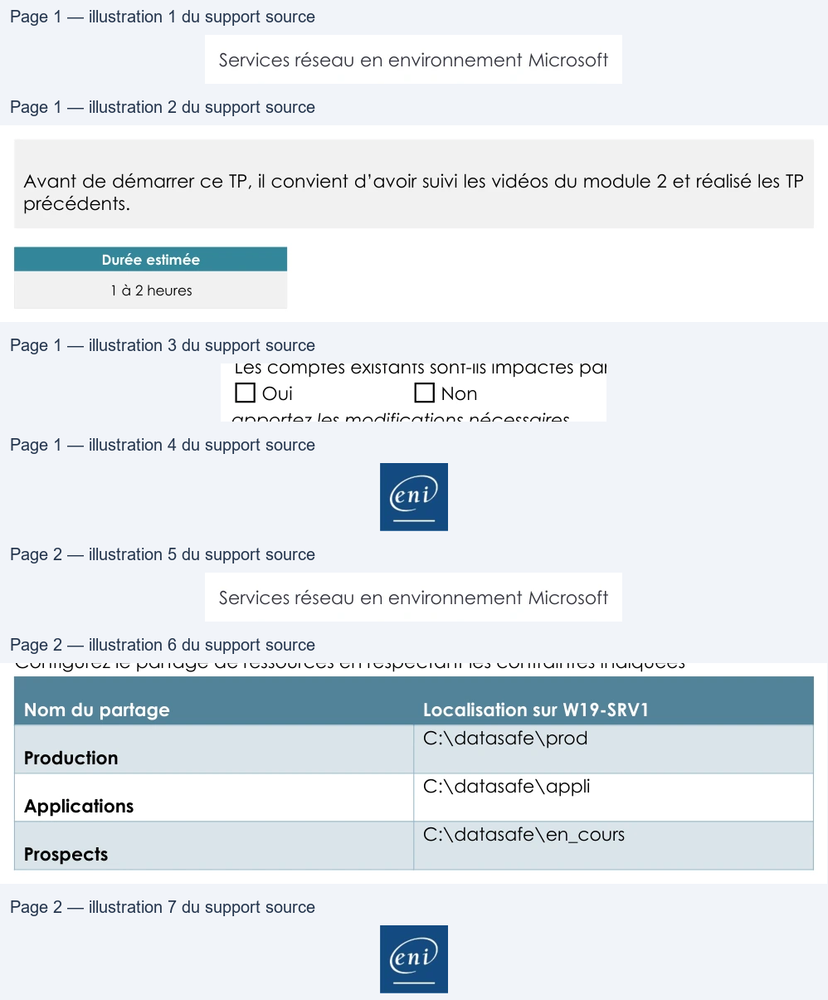
Référence du document : 1Guhv5Wx0z2snNuhB7a_7G9d0Mhsy9oW1 · SHA-256 d0c0de693174ca1c…
Énoncé · Enoncé du TP 4 - La gestion des impressions · 2 pages transcrites
Page 1
Service Réseau en environnement Microsoft
La gestion des impressions
TP du Module 02 – Active Directory
Avant de démarrer ce TP, il convient d’avoir suivi les vidéos du module 2 et avoir réalisé
les TP précédents.
Durée estimée
30 mn à 1 heure
Énoncé
Prérequis :
•
Avoir réalisé le TP précédent du Module 02.
Mise en place du service d’impression
W19-SRV1 sera le serveur en charge de la gestion des imprimantes.
Le fichier de pilote unique et universel est présent sur le partage distrib (lecteur R:) à l’endroit
suivant : ‘Drivers\Drivers_imprimante_TSSR090_services_réseau_Microsoft’, il commence
par upd-pcl6-x64-…
Dans ce fichier compressé, le fichier d’installation “.inf” à utiliser est hpzipa23.inf
Configuration d’imprimantes
L’entreprise vient d'investir dans un périphérique d'impression réseau à destination du
service commercial sur le site de Rennes. Le modèle est HP Color LaserJet M552.
Réalisez les actions nécessaires sur le serveur afin de pouvoir mettre à disposition ce
périphérique sur le réseau.
Adresse IP
Nom imprimante
Param. par défaut
Qui peut imprimer ?
172.28.10.46
Imp-Commercial-35RDC
- Recto/Verso
Service commercial
Page 1/2
© ENI – Tous droits réservés
Texte relevé dans les illustrations
|
| Adresse IP | Nom imprimante | Param par défaut . | Qui peut imprimer ? | |||
| 172 28 10 46 . . . | Imp-Commercial -35RDC | Recto/Verso - | Service commercial |
Page 2
Service Réseau en environnement Microsoft
Paramètres supplémentaires :
•
Les administrateurs du domaine auront le contrôle total sur la gestion de ces
imprimantes
•
Les imprimantes seront publiées dans l’annuaire Active Directory
La société possède un périphérique HP Laserjet 5 destinée à imprimer des bons de
livraison/retrait pour le service production. Les livreurs doivent impérativement récupérer
ceux-ci avant de quitter la plateforme logistique.
L'imprimante actuelle ne suffit plus aujourd’hui pour suivre la cadence de l'usine. La
direction a donc décidé d'investir dans deux nouveaux périphériques d'impression de
modèle HP Color LaserJet Pro MFP M274 réunies au sein d’un « pool » d’imprimantes,
permettant de paralléliser les travaux et donc de gagner du temps.
Réalisez les actions nécessaires sur le serveur afin de mettre à disposition ces périphériques
sur le réseau.
Adresse IP
Nom Imprimante
Qui peut imprimer ?
172.28.10.90
172.28.10.91
Imp-BL44-Usine
Service production
Paramètres supplémentaires :
•
Les administrateurs du domaine auront le contrôle total sur la gestion de cette
imprimante
•
Les périphériques seront configurés dans un « pool » d’imprimantes
•
L’imprimante sera publiée dans l’annuaire Active Directory
Installation d’une imprimante sur un poste client
•
Installer manuellement l’imprimante partagée IMP-Commercial-35RDC sur le poste
client W10
•
Tester l’impression avec un compte utilisateur membre du groupe G-Commercial
Page 2/2
© ENI – Tous droits réservés
| Adresse IP | Nom Imprimante | Qui peut imprimer ? | ||
| 172 28 10 90 . . . | ||||
| 172 28 10 91 . . . | Imp-BL44 -Usine | Service production |
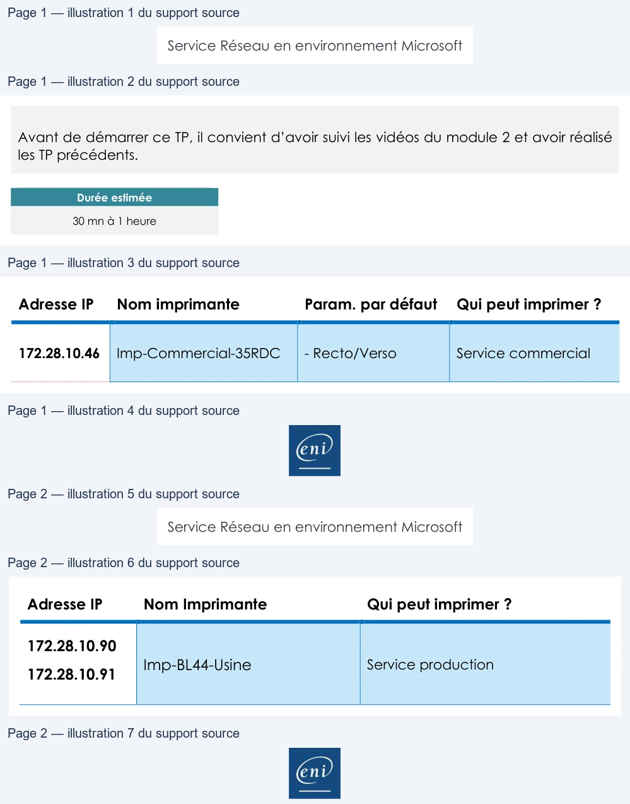
Référence du document : 1KyYVZmcI_tJV4pARpiGdra87-XdxJ0iY · SHA-256 7228cf762389c665…
Correction · Solution du TP 1 - Mise en place d’un domaine Active Directory · 4 pages transcrites
Correction originale : à consulter après avoir tenté l’exercice.
Page 1
Services réseau en environnement Microsoft
Mise en place d’un
domaine Active Directory
TP du Module 02 – Active Directory
Avant de démarrer ce TP, il convient d’avoir suivi les vidéos du module 2 et réalisé les TP
précédents.
Durée estimée
30 minutes à 1 heure
Énoncé
Prérequis :
•
Disposer des machines virtuelles installées dans le TP 01 du module 01.
Création d’un contexte de domaine Active Directory :
Domaine
Monprenom.local
W19-CD1
Contrôleur de domaine
Serveur DNS
W10-CLI1
Client membre
W19-SRV1
Serveur membre
Page 1/4
© ENI – Tous droits réservés
Texte relevé dans les illustrations
|
Page 2
Services réseau en environnement Microsoft
Page 2/4
© ENI – Tous droits réservés
Texte relevé dans les illustrations
tan
Duc
°
erveur de télécopie
te réseau
et rendent
cas informations
Services
AD DS
*
I
Assistant Configuration des
services
de domaine
Active
Directory
æ
a
*
(
‘wis-cot
SERVEUR CIBLE
|
Wi9-CD1
Configuration de déploie.
pu
“
Options du contrôleur de.
Res =
SERVEUR CIBLE
)|
WI9-CD1
L
Wi9-CD1
5
”
nine
Active
Directory
soient
lé
=
AT40 Ce amie np
hasan prince
Con foes
MONPRENOM\Administrateur
À
MONPRENOM univ
leur
Page 3
Services réseau en environnement Microsoft
Sur W19-SRV1 et W10-CLI1 il est important d’avoir comme serveur DNS préféré l’adresse IP
de W19-CD1
Analyse de différents cas d’ouverture de session :
Assurez-vous au préalable que les trois hôtes communiquent entre eux.
•
Pouvez-vous ouvrir une session avec un compte local sur W10-CLI1 ?
Oui □ Non
•
Pouvez-vous ouvrir une session avec un compte du domaine sur W10-CLI1 ?
•
Avec quel(s) compte(s) utilisateur(s) ?
Avec le compte administrateur du domaine ou tout autre compte créé sur l’annuaire
Active Directory et comptes locaux de W10-CLI.
•
Pouvez-vous ouvrir une session sur le contrôleur de domaine W19-CD1 ?
Page 3/4
© ENI – Tous droits réservés
Texte relevé dans les illustrations
Internet Protocol Version4 (TCP/IPv4) Properties
x
Modification du nom ou du domaine de l'ordinateur
x
General
Vous pouvez modifier le nom et 'appartenance de cetordinateur.
Sécurité Windows
x
«
Ces modifications peuventinfluer
sur l'accès aux ressources
fou
can get IP settings assigned automatically if your network supports
ñ
this capability. Otherwise, you need to ask your network administrator
ee
Modification du nom ou du domaine de
for the appropriate IP settings.
l'ordinateur
Obtain an IP address automatically
Nontepormsen
© Use
the
following
IP
address:
W19-SRV1
.
.
@Use
the
folowing P address
Entrez le nom et le mot de passe d'un compte autorisé a joindre
IP address:
172.2%.
0. 2
Nom complet de l'ordinateur
Bart
Subnet mask:
255.255.
0
. 0
W19-SRVI
Default gateway:
:
Autres.
monprenom\administrateur
tain
server address automatical
Membre d'un
=
à
LLLLLLLLLLLLLE]
o
© Use the following DNS server addresses:
@Domaine
Preferred DNS server:
172.28.10.
41
monprenom local
WORKGROUP
[vaidate settings upon exit
Advanced...
[oT]
Le
Annuler
Modification du nom ou du domaine de l'ordinateur
x
à
K
Ta
>
Autre utilisateur
Bienvenue dans le domaine monprenom.local.
——
Page 4
Services réseau en environnement Microsoft
•
Avec quel(s) compte(s) utilisateur(s) ?
Avec le compte administrateur du domaine ou tout autre compte créé sur l’annuaire
Active Directory.
•
Dans quelle(s) console(s) et dans quel emplacement pouvez-vous visualiser les
machines hôtes membres du domaine ?
Dans la console : Utilisateurs et ordinateurs Active Directory/Centre d’administration Active
Directory.
Se déplacer dans le conteneur : Computers et Domain Controllers
Page 4/4
© ENI – Tous droits réservés
Texte relevé dans les illustrations
El Utilisateurs et ordinateurs Active Directory
I Utilisateurs et ordinateurs Active Directory
Fichier
Action
Affichage
?
Fichier
Action
Affichage
?
e+2n du XGeB
Em terae
+ 2m ¢O XELB
Em taavrarx
Gy Utilisateurs et ordinateurs Active Directory (W1)
Nom
Type
Description
I Utilisateurs
et ordinateurs Active Directory [W1!|FNom
Type
Type de contra...
Site
Description
=] Requêtes enregistrées
wio-cut
Ordinateur
mB Requêtes enregistrées
Hwi9-cD1
Ordinateur
cc
Default-First-Si.
+ #3 monprenomlocal
IW19-SRVT
Ordinateur
+ #4 monprenomlocal
© Builtin
_—
© Builtin
CEE computers]
A
Computers
El Domain Controllers
1 Domain Controllers
I ForeignSecurityPrincipals
DT ForeignSecurityPrincipals
Managed Service Accounts
Ii Managed Service Accounts
Users
Bi Users
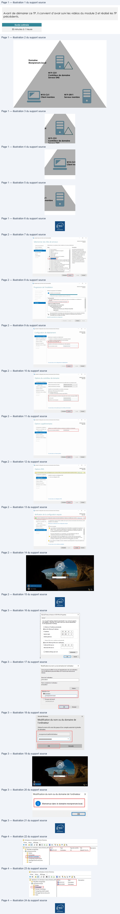
Référence du document : 1n1rLGYHA1QDhSCuOR662ZOr5EyVmhPX4 · SHA-256 a8cb833f1835ce3a…
Correction · Solution du TP 2 - Utilisateurs et groupes en contexte de domaine AD · 7 pages transcrites
Correction originale : à consulter après avoir tenté l’exercice.
Page 1
Services réseau en environnement Microsoft
Utilisateurs et groupes en
contexte de domaine AD
TP du Module 02 – Active Directory
Avant de démarrer ce TP, il convient d’avoir suivi les vidéos du module 2 et réalisé les TP
précédents.
Durée estimée
1 à 2 heures
Prérequis :
•
Avoir réalisé le TP précédent du Module 02.
Recherche d’objets dans l’annuaire :
Utilisez les fonctions de recherche de l’AD pour contrôler si les comptes locaux existants
existent toujours.
•
Si oui, où se trouvent-ils ?
•
Où se trouve le compte d’ordinateur W19-CD1 ?
Dans le conteneur Domain Controllers
Page 1/7
© ENI – Tous droits réservés
Texte relevé dans les illustrations
BD Rechercher Utilisateurs, contacts et groupes
-
o
x
Æ Utilisateurs et ordinateurs Active Directory
Fichier
Action
Affichage?
Fichier
Edition
Affichage
+ 2m 0 8683 Em Zero
(Rechercher: Utiisateurs, contacts et groupes
~
|Dans:
jj monprenomk+ |
Parcourir.
a Utilisateurs et ordinateurs Active Directory [W1) Nom
Type
Description
Unitsatours, contacts etgroupes |Avancé
2 Requétes enregistrées
I Buitin
buiinDomain
Cr
-#smonprenomloc
Ii Computers
Conteneur
Default container for up...
Nom :
Ld
= at tin ;
Hi Domain Con...
Unité d'organis..
Default container for do..
Anéter
mputer:
:
a
puters
Di ForeignSecur... Conteneur
Default container for sec.
Description:
Æi Domain Controllers
oo
Eten tout
DE] Managed Se...
Conteneur
Default container for ma...
D
ForeignSecurityPrincipals
=
co
Defaul
k
D Managed Service Accounts
Users
nteneur
fault container for up..
:
I Users
24
[DB Rechercher Utilisateurs, contactset groupes
-
a
x
Résultats de la recherche
Fichier
Edition
Affichage
Rechercher:
Utilisateurs, contacts
et groupes
-
|Dans:
%j monprenomk
-
Parcourir...
Utilisateurs, contacts et groupes
Avancé
te:
aa
Arrêter
Description
:
Effacer tout
Résultats de la recherche
ent
Page 2
Services réseau en environnement Microsoft
Page 2/7
© ENI – Tous droits réservés
Texte relevé dans les illustrations
Æ Utilisateurs et ordinateurs Active Directory
Fichier
Action
Affichage
?
ed 2m 0888 Em
LH VER
Æ Utilisateurs
et ordinateurs Active Directory [W1!{FRor
Type
Type decontrol..
Site
Description
21 Requêtes enregistrées
lwi9-cd1
Ordinateur
6c
Default-First-Si..
+ #3 monprenomlocal
|
Builtin
3] Domain Controllers
7
ForeignSecurityPrincipals
3 Managed Service Accounts
3 Users
Page 3
Services réseau en environnement Microsoft
Création de la structure de stockage des objets de l’annuaire :
Créez les unités d’organisation en vous basant sur les informations du tableau ci-dessous.
Type
Nom
Nantes
Agence
Vertou
Rennes
Production
Services
Informatique
Commercial
Intérimaire
Fonction dans les services
Secrétaire
Serveurs Membres
Ordinateurs
Postes Clients
Attention, ceci est une solution, il en existe d’autres.
Page 3/7
© ENI – Tous droits réservés
Texte relevé dans les illustrations
|
|
po
||
||
|
|
|
|
|
|
* El Mon Entreprise
+ il Agences
Bi Rennes
El Nantes
@) Vertou
* 5 Groupes
El Services
1 Fonctions
+ Bi Ordinateurs
(1 Serveurs Membres
1 Postes Clients
| Type Nom | |
| Agence | Nantes |
| Vertou | |
| Rennes | |
| Services | Production |
| Informatique | |
| Commercial | |
| Fonctiondans les services | Intérimaire |
| Secrétaire | |
| Ordinateurs | Serveurs Membres |
| Postes Clients |
Page 4
Services réseau en environnement Microsoft
Création des modèles et comptes utilisateurs
Créez des modèles d’utilisateurs pour les services :
•
Informatique
•
Production
•
Commercial
Les caractéristiques des comptes utilisateurs selon leur service d’appartenance sont
indiquées ci-après :
Les utilisateurs du service Production
•
Leur tranche horaire est soit
o De 6h à 12h o De 13h à 21h • Chaque collaborateur n’est affecté qu’à une tranche horaire • Ils travaillent tous dans l’agence de Vertou • Ils font partie du groupe Production
Page 4/7
© ENI – Tous droits réservés
Texte relevé dans les illustrations
Propriétés de : Modele Production ApresMidi
2
x
i Utilisateurs et ordinateurs Active Directory
Environnement
Sessions
Contréle à distance
Profl des services Bureau à distance | COM+
Fichier
Action
Affichage?
Général
Adresse
Compte
Profi
Téléphones
Organisation
Membre de
Appel entrant
eso 2m
{OU XELB Em taetrae
D Uiiisotoug
et ordinateur
Active
Directory
Wt
Nom
Dossier Services de domaine Active Directory
ilisateurs
et ordinateurs
Active
Director
=
‘equ& ss enregistrées
A Modele Production ApresMidi
Utilisateur
Utiisateursdu do...
monprenom.loca/Users
+
IF monprenomiocal
8, Modele Production Matin
Utilisateur
©
Builtin
M Computers
@) Domain Controllers
D ForeignSecurityPrincipals
D] Managed Service Accounts
D Users
* Æ3 Mon Entreprise
Ajouter.
Supprimer
+
Bi Agences
Æ Rennes
Sl Nantes
Groupe prnopal:…
Uisateup domaine
—
Ios peste de roc
groupe pcp auf vous
Denis SuPePmees
déposez de cients Macintosh ou dappicatons compatibles
POSIX.
[ok|| Annuler
Appiquer
Aide
Propriétés
de : Modele Production
Apresh
x
conne ae
coon
Mise
;
7
Environnement
Sessions
_Contréle
à distance Profildes services Bureau à distance COM+
nt
oS TS = G5
= Asse| Come |GE MES CD De ARE
Général Adresse [ Compte ]Profi
Téléphones Organisation Membrede Appel entrant
Nom ouverture de session de lutisatd
[Horaire d'accès pour Modele Production ApresMidi
*
Nomdame session deutter
Modole_Production_ApresMidi
9
pa
s En
Modele_Production Matin
@monprenom local
-
Nom d'ouverture de session de Tution
0+ 2+4+6 +8 +10-12-14+16- 18-20-22: 0
Nom d'ouverture de session de l'utilisateur (antérieur à Windows 2000)
MONPRENOMI
Tous
Annuler
MONPRENOM\
Modele_ProductionMa
mardi
_
_
i
[TITI
Ouverture de session
Tous
costs
Options de compte
be
© rusé
Optionsde compte
© L'utisateur devra changerle mot|
__vended
L'utiseteur devre changer
di
|
© L'utlsateur ne peut pas changerd
| samedi
RE
mardi
© Enregistrer
le mot de passe en
[] Enregistrer
le mot de passe|
:
.
Le lundi de 00:00 à 01:00
LS
©aims demm
Date
d'expiration du compte
Date d'expration du compte
vendre
© Jamis
© James
of:
(dimanche 13
décembre
2020
eons)
in de
imanche 13 décembre
Fnde
‘dimanche
dimanche
Le lundi, de 00:00 à 01:00
x
Annuler
Appliquer
Aide
o
nue
GPU
Ra
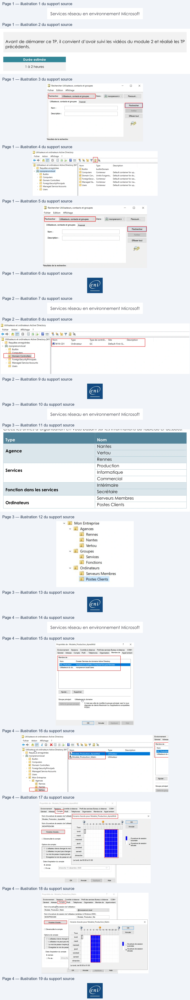
Page 5
Services réseau en environnement Microsoft
Les utilisateurs du service Informatique
•
Ils disposent de l’ensemble des privilèges à l’échelle du domaine (à l’exception de
la secrétaire)
•
Ils travaillent tous à l’agence de Nantes
Page 5/7
© ENI – Tous droits réservés
Texte relevé dans les illustrations
Æ Utilisateurs et ordinateurs Active Directory (W1||[Nom
Type
Description
© Requêtes enregistrées
Modele_Informatique
Utilisateur
+ #3 monprenomlocal
2, Modele_Informatique_Secretaire
Utilisateur
I Buittin
I Computers
11 Domain Controllers
I ForeignSecurityPrincipals
I Managed Service Accounts
I Users
+ Bi Mon Entreprise
+ EN Agences
151 Rennes
Bi Vertou
+ i Groupes
Bi Services
Bi Fonctions
+ Hi Ordinateurs
Il Serveurs Membres
Hi Postes Clients
Propriétés de
?
x
Propriétés de : Modele_Informatique_Secretaire
?
x
Environnement
Sessions
Contrôle à distance
Profil des services Bureau à distance
COM+
Environnement
Sessions
Contréle à distance
Profil des services Bureau à distance
COM+
Général
Adresse
Compte
Profil
Téléphones
Organisation
Membre de
Appel entrant
Général
Adresse
Compte
Profil
Téléphones
Organisation
Membre de
Appel entrant
Membre de
Nom
Dossier Services de domaine Active Directory
Nom
Dossier Services de domaine Active Directory
GG_Informatique
monprenom.loca/Mon Entreprise/Groupes/Services
|GG_Informatique
monprenomlocal Mon Entreprise/Groupes/Services
GG_Informatique_Admin |monprenom
local Mon Entreprise/Groupes/Services
GG _Secretaires
monprenom.local/Mon Entreprise/Groupes/Fonctions
Utilisateurs du domaine
monprenomlocal Users
Utilisateurs du domaine | monprenom.local/Users
<
>
Ajouter...
Supprimer
Ajouter...
Supprimer
Groupe principal :
Utilisateurs du domaine
Groupe principal:
Utiisateurs du domaine
A
;
Il n'est pas utile de modifier le groupe principal, sauf si vous
&
Il n'est pas utile de modifier le groupe principal, sauf si vous
7
.
principal
Défi le groupe principal
disposez de clients Macintosh ou d'applications compatibles
CCE
J
disposez de clients Macintosh ou d'applications compatibles
POSIX.
POSIX.
[oe] ere)
DNA
ce
ent
Page 6
Services réseau en environnement Microsoft
Les utilisateurs du service Commercial
•
Ils ne pourront se connecter que sur les postes clients Windows 10
•
Ils travaillent tous dans l’agence de Rennes
Page 6/7
© ENI – Tous droits réservés
Texte relevé dans les illustrations
Æ Utilisateurs et ordinateurs Active Directory [W1!|[Nom
Type
Description
= Requétes enregistrées
Modele_Informatique
Utilisateur
*_ 5 monprenomiocal
2, Modele Informatique Secretaire
Utilisateur
© Buittin
I Computers
@ Domain Controllers
I ForeignSecurityPrincipals
D Managed Service Accounts
@ Users
+ Æi Mon Entreprise
Bi Agences
f] Rennes
fi Vertou
+ i Groupes
@ Services
@ Fonctions
+ Bi Ordinateurs
1 Serveurs Membres
fi Postes Clients
Propriétés de : Modele_Commercial
?
x
.
Environnement
Sessions
Contréle à distance Profil des services Bureau à distance
COM+
=
=
-
=
rae
a
Téliptes
Satan]
Marbrede [Appelerkent
Environnement
Sessions Contrôle
à distance Profildes services Bureau à distance COM+
resse
Profil
nes
ni
mn
ee
see
Organise
en
Général Adresse
Profl
Téléphones Organisation Membrede Appel entrant
Membedes
Nom dower de session de futisateur:
Nom
Dossier Services de domaine Active Directory
Modele_Commercial
@monprenom local
.
GG_Commercial
monprenom.local/Mon Entreprise/Groupes/Services
Nom d'ouverture de session de l'utilisateur (antérieur à Windows 2000)
Utifsateurs du domaine _monprenom local Users
MONPRENOM
Modelo _Conmmercal
|
Stations de travail accessibles
?
x
Dans le champ Nom de l'ordinateur, mettez le nom du NetBIOS de
l'ordinateurou de son DNS.
a
Ajouter...
Supprimer
Cet utifsateur
peut ouvrir une session sur:
OO
1111
O Tous les ordinateurs
Groupe principal:
Utilisateurs du domaine
a
éfini
ï
Il n'est pas utile de modifier
le groupe principal, sauf
si vous
Nom
de l'ordinateur
Définir
le
principal
nr
le groupe
disposez de clients Macintosh ou d'applications compatibles
:
POSIX.
Ajouter
Wi0-CLit
Modifier
Supprimer
ler
Aide
[a]
en)
ent
Page 7
Services réseau en environnement Microsoft
En partant de vos nouveaux modèles :
Service Informatique
Service Production
Service Commercial
Stéphane
Philippe
Camille (Secrétaire)
Sophie (Secrétaire)
Pascal
Claude
Samir
Paul
Corentin
mon prénom
Isabelle (Intérimaire)
Ines (Intérimaire)
Vous contrôlerez la bonne prise en compte des caractéristiques des comptes créés. Dépendance aux services de domaine AD : 1. Arrêtez le service DNS du contrôleur de domaine. 2. Redémarrez le poste client puis effectuez les tests suivants. • Parvenez-vous à ouvrir une session sur le domaine avec l’utilisateur précédemment utilisé ?
• Parvenez-vous à ouvrir une session sur le domaine avec un utilisateur qui n’a encore jamais utilisé W10-CLI1 ? □ Oui
•
Après avoir relancé le service DNS, arrêtez le service Netlogon, quelle est la
conséquence de cet arrêt ?
Le service netlogon vérifie la bonne authentification des éléments actifs tentant de se
connecter à l’AD.
Pour rétablir la situation, relancez les services Services de domaine Active Directory.
Page 7/7
© ENI – Tous droits réservés
Texte relevé dans les illustrations
RS
|
|
| Service Informatique Service Production Service Commercial | ||
| Stéphane | Philippe | Camille (Secrétaire) |
| Sophie (Secrétaire) | Pascal | Claude |
| Samir | Paul | Corentin |
| é monpr nom | Isabelle (Intérimaire) | Ines (Intérimaire) |
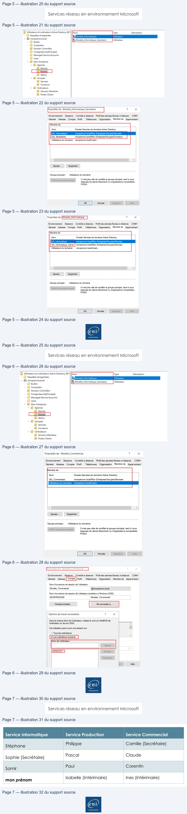
Référence du document : 1nqj-gZDzZzzOwwhIz6Hj6YPc3TSV8hA5 · SHA-256 475f6b7792e58a39…
Correction · Solution du TP 3 - L'accès aux ressources · 10 pages transcrites
Correction originale : à consulter après avoir tenté l’exercice.
Page 1
Service Réseau en environnement Microsoft
L’accès aux ressources
TP du Module 02 – Active Directory
Avant de démarrer ce TP, il convient d’avoir suivi les vidéos du module 2 et réalisé les TP
précédents.
Durée estimée
1 à 2 heures
Énoncé
Prérequis :
•
Avoir réalisé le TP précédent du Module 02.
Ajout et préparation d’un nouvel espace disque
•
Ajoutez deux disques de 10 Go chacun au serveur membre W19-SRV1.
•
Créez un volume en miroir de 5 Go au format NTFS.
•
Ce volume sera accessible via une lettre de lecteur et depuis C:\datasafe.
•
L’espace restant (de ces deux disques) sera accessible via le lecteur D:\.
Page 1/10
© ENI – Tous droits réservés
Texte relevé dans les illustrations
fF Gestion des disques
-
po
x
Fichier
Action
Afichage
7
¢9\m Em
90
= ©
Simple
Debase
NTFS
Sain (Démarrer hier d'échange Vidage sur incident Patton principale) 3140Go
213560
63%
= Recuperaton
Simple
De base
NTFS
Sain Patton OEM)
499 Mo
T2Mo
U%
BSS XGAREFRFROVO(L) Simple
Debate
UDF
Soin Parton principale)
495 Go
OMe
0%
= sce SE
Dynamique
Datasafe.
Data (D:)
998 Go
428 Go NTFS
510
60 NTES
Eniigne
Sein
sain
icq A
Ss
Dynamique
Datasafe
Data (D)
998 Go
428 Go NTFS
510
Go NTFS
En igne
un
san
&
> CePC > Disque local (C)
vo
\ Périphériques et lecteurs (3)
Nom
Modifié te
Type
Taille
le
Disque local (C)
Data (D)
.
13/11/2020 1409
Dossierde fichiers
5119996
=
Nouveau dossier
10/11/2020 10:33
Dossier de fichiers
=
emente
home
ST
ae
es” 213 Go libres
sur 31,3 Go
es”
10,1 Golibres
sur 10,1 Go
CRE
®
none
.
.
Program Files 686)
22/09/2020 1442
Dossier de fichiers
#
Programmes
22/09/2020 14:44
Dossier
defichiers
Page 2
Service Réseau en environnement Microsoft
Configuration de profils itinéraires :
•
Modifier le compte modèle du service Commercial afin que chaque utilisateur du
service dispose d’un profil itinérant.
•
Ce profil sera stocké sur le serveur membre depuis C:\datasafe\users et accessible
depuis un partage intitulé « Profils ».
Page 2/10
© ENI – Tous droits réservés
Texte relevé dans les illustrations
Partage avancé
x
elv
+ | Datasafe
Accueil
Partage
Affichage
FPartager
ce dossier
Paramètres
+
+
1
[ye
> CePC
> Disque local (C)
> Datasafe
>
===
°
Nom
# Accès rapide
Ajouter | Supprimer
a
EM Bureau
a
Limiter le nombre d'utiisateurs
simultanés à :
[6777/2
Commentaires :
Le $ à le fin du partage est présent afin que le patage Profi ne
soit pas visible sur le réseau par les uslisateus, Si le $ et en
enlevé. le partage sera visible
Autorisations | |Mise
en cache
CE. ve | is
Autorisations pour Profils$
x
Æ Utilisateurs
et ordinateurs
Active Directory
Fichier
Action
Affichage?
Atorisations du partage
7
=
3
eo am do XOeS Em teres
Noms de groupes ou d'utiisat:
*
oe
ET
I Utilisateurs et ordinateurs Active Directory (W1| Nom
Propriétés de : Modele Commercial
2
x
a
Le
1D Requêtes enregistrées
& camille
53 monprenomlocal
Los
Envronnement Sessions |Conte
à disance Prof
des sons Bureau
à distance | COM
© Buittin
Leo
Général
Adresse Compte
Téléphones
Organisation Membrede Appelentrant
I
Computers
2
=
Ines
Profil
utilisateur
1 Domain Controllers
:
1 ForeignSecurityPrincipals
Æs Modele commercial
|
|chemin duprof
\W19-SRVI\Profis$\%usemame%
Aouter…
| | Suppamer
Hi Managed Service Accounts
Es d'ouverturede
D) Users
session
[Autonsations pour Tout le monde
Atonser
Refuser
+ fi Mon Entreprise
ù
Dossierde base
5
+ Bl Agences
Contrôle
total
A
oO
Hi Rennes
@ Chemin d'accès local
Modtier
4
Qa
Bi Nantes
Le
Lecture
4
oO
Benn
©
Connecter
+ fi Groupes
i Services
@ Fonctions
+ BB Ordinateurs
Informations sur le contrôle d'accès et les autorisations
HB Serveurs Membres
-
-
i] Postes Clients
[_Aeraier_| [States
— [=] +
ent
Page 3
Service Réseau en environnement Microsoft
• Les comptes existants sont-ils impactés par ces modifications ? □ Oui
Page 3/10
© ENI – Tous droits réservés
Texte relevé dans les illustrations
Fichier
Action
Affichage
?
e+ 2m {0
XO LB Em tearae
I Utilisateurs
et ordinateurs Active Directory (W1]| [Nom
Propriétés de: Claude
2
x
Sa monprenomloca
& claude
:
te
2] Builtin
& Corentin
Général Adresse Compte
Profil
Téléphones
Organisation Membrede Appel entrant
eee
ines
Profi utisateur
main
Controllers
1 ForeignSecurityPrincipals
bios. Comments
Chemin du profil
QE|
À Managed Service Accounts
‘Script d'ouverture de
D]
Users
session
*
Bi Mon Entreprise
~ El Agences
Dossier
de base
à) Rennes
‘# Chemin d'accès local
a) Nantes
Bi Vertou
Connecter:
+
El Groupes
Al Services
il
Fonctions
+
BB Ordinateurs
@) Serveurs Membres
Bi Postes Clients
[Co]
Annuler | DIRES
Aide
Page 4
Service Réseau en environnement Microsoft
Partage de ressources
Configurez le partage de ressources en respectant les contraintes indiquées
Nom du partage
Localisation sur W19-SRV1
C:\datasafe\prod
Production
C:\datasafe\appli
Applications
C:\datasafe\en_cours
Prospects
1°) Gestion des accès en respectant les préconisations AGDLP de Microsoft
Sur le contrôleur de domaine, dans la console Utilisateurs et ordinateurs Active Directory :
•
Création des Unités d’organisation pour classifier les groupes de ressources
correctement :
•
Création des groupes de domaine local
4 groupes de domaine local par ressource partagée : pour gérer les accès en lecture, en
modification, en contrôle total et un groupe pour les refus d’accès.
Il y aura donc 12 groupes de domaine local au total.
Page 4/10
© ENI – Tous droits réservés
Texte relevé dans les illustrations
1 Utilisateurset ordinateurs Active Directory
Fichier
Action
Affichage
_?
eo 2
0 5L6B Oe SLA TER
1 Utilisateurset ordinateurs Active Directory [W1}| Nom
Type
OA Paqultes enregistrées
Applications
Unité d'organisation
adnu
Tél Production
Unité d'organisation
3Compas
[il Prospects
Unité d'organisation
Hl Domain Controllers
1D ForeignSecurityPrincipals
Tl Managed Service Accounts
BD Users
+
il Mon Entreprise
+ Bl Agences
i Rennes
il Nantes
dl
Verto
ae
ST Applications
Production
il Prospects
+ @ Ordinateurs
IB Serveurs Membres
il Postes Clients
>ent
| Nom dupartage Localisationsur W19 -SRV1 | |
| Production | C:\datasafe\prod |
| Applications | C:\datasafe\appli |
| Prospects | C:\datasafe\en cours _ |
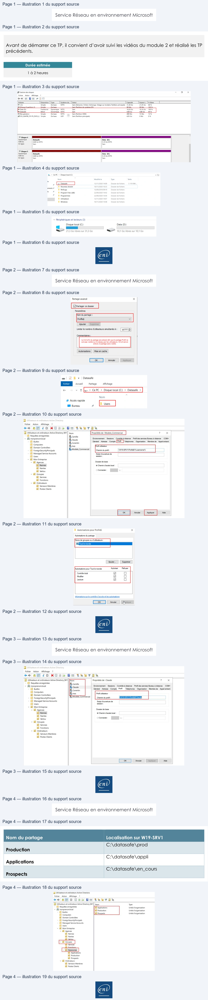
Page 5
Service Réseau en environnement Microsoft
Voici ce que cela donne pour la ressource Applications :
•
Ensuite, selon les accès à octroyer, il s’agit de gérer les appartenances aux groupes
de domaine local.
Le partage Applications :
•
Membre du groupe de domaine local DL_Applications_M : groupe
GG_Informatique_Admin.
Les administrateurs du service informatique auront ainsi les droits de modifier le
contenu de la ressource Applications
•
Membre du groupe de domaine local DL_Applications_L : groupe Utilisateurs du
domaine
•
Membre du groupe de domaine local DL_Applications_R : groupe GG_Secrétaires.
Page 5/10
© ENI – Tous droits réservés
Texte relevé dans les illustrations
Bd] Uiiisateurset ordinateurs Active Directory
Fichier
Action
Affichage?
eo
26h 0568 Em teerae
Li Utilisateurs et ordinateurs Active Directory W1\[ Nom
Type
Description
3 Requêtes enregistrées
8 DL Applications CT
Groupe de sécurité-Domaine local
~ #3 monprenomlocal
BR DL Applications M
Groupe de sécurité
-Domaine local
— La
BDL Applications_L
Groupe de sécurité
- Domaine local
a ee aes
BDL Applications R
Groupe de sécurité-Domaine local
1D ForeignSecurityPrincipals
[ Managed Service Accounts
GD Users
+ @ MonEntreprise
“FS
Hi Rennes
même schema
@ Nantes
il Vertou
+ fi Groupes
Bi Services
Æ Fonctions
TT
Ressources
TT Production
@ Prospects
Ed Uttisoteurs et ordinateurs Active Directory (W1]]_
nom
2 Requêtes enregistrées
d
D1
Avplicatio
ea
Ro meme
rx
@ Computers
i) Domain Controllers
Rov Applications R
:
mn
=
Général
Membres Membrede Géré par
2 ForeignSecurityPrincipals
1 Managed Service Accounts
-
Hi Users
Er
«$B ous
GG infomatque Admin
_monprenom local Mon Entropnse/Groupe=/Sernces
Bi Rennes
Hl Nantes
A2 Vertou
+
(fi Groupes
Ep
@ Fonctions
+ Bl Ressources
à) Applications
& Production
A Prospects
+ 2 Ordinateurs
2 Serveurs Membres
Bl Postes Clients
Æ
D
CS]. vue | DRE
ent
Page 6
Service Réseau en environnement Microsoft
Les deux autres partages suivent la même logique
Le partage Production :
•
Accessible uniquement aux membres du service Production et aux administrateurs
(ces derniers pourront tout y faire).
•
Membre du groupe de domaine local DL_Production_M : groupe GG_Production
•
Membre du groupe de domaine local DL_Applications_CT : groupe
GG_Informatique_Admin.
Le partage Prospects :
•
Accessible exclusivement aux Commerciaux.
•
Membre du groupe de domaine local DL_Prospects_M : groupe GG_Commercial
Page 6/10
© ENI – Tous droits réservés
Texte relevé dans les illustrations
Fichier
Action
Affichage
7
++ am 0 XOGS\ Em
1x uVYER
“Td utilisateurs
etordinateurs
Active Directory IW1]| Nom | Propriétés de :DLApplicationsR
rt
ix
1D) Requêtes enregistrées
ROWApplications.CT
+
Général Membres Membrede Géré
mesp
BOL Applications M
is
5 ads
#2 DL Applications_L
Membres
|
|
M Domain Controllers
(FR
oc Applications]
| || Nom
Dossier Services de domaine Active Directory
I ForeignSecurityPrincipals
GG Secretaires _monprenom localMon Entreprise/Groupes/Fonctions
1 Managed Service Accounts
BD Users
+ Bl Mon Entreprise
+
Bl Agences
fl Rennes
@ Nantes
@ Vertou
+ B Groupes
fi Services
fl Fonctions
Fichier
Action
Affichage?
eo 2m 40 X5LB Em
1% MVER
Æ Utilisateurs et ordinateurs Active Directory [W1]| Nom
Propriétés de : DL. Prospects M
?
x
I Requêtes enregistrées
Pro:
a
+ #4 monprenomlocal
a
| Général Membres Membrede Géré par
—
Bors | [ur
M Domain Controllers
AOL Prospects R
Nom
Dossier Services de domaine Active Directory
BD ForeignSecurityPrincipals
IGG_Commercial
_monprenom loca/Mon Entreprise/Groupes/Services
Bi Managed Service Accounts
BD Users
+ Bi Mon Entreprise
+ BD Agences
@) Rennes
@ Nantes
i) Vertou
+ fi Groupes
@ Services
@ Fonctions
+ Fi Ressources
@ Applications
%
53
1 Production
3] Prospects
‘Ajouter...
Suppimer
+ @ Ordinateurs
@) Serveurs Membres
1 Postes Clients
(ox)
ent
Page 7
Service Réseau en environnement Microsoft
2°) Gestion des accès NTFS et partages réseau des dossiers
a- Création des partages avec autorisation en CT pour le groupe Utilisateurs
authentifiés
Pour cela :
•
Clic droit sur chacun des dossiers concernés, puis Propriétés
•
Dans l’onglet Partage, choisir Partage avancé
•
Définir les paramètres comme suit :
Page 7/10
© ENI – Tous droits réservés
Texte relevé dans les illustrations
|
F
+ | Datasafe
Acœuël
Partage
Affichage
+
+
=
> CePC
>
Disque local (C)
>
Datasafe
Nom
°
Modifié le
Type
Taille
FA pce
Users
CS
issier de fichiers
Bureau
La
Ouvrir dans une nouvelle fenêtre
Prod
issier
de fichiers
# Téléchargement: #
Epingler à Accès rapide
Appli
a
> | ssier de fichiers
Documents
#
=
on
En cours
-
ssier de fichiers
= Images
*
Accorder l'accès à
>
Restaurer les versions précédentes
Andre dans la bibliotheque
>
Épingler à l'écran de démarrage
Envoyer vers
>
Couper
Copier
Supprimer
Renommer
Propriétés
Partage avancé
Définir des autorisations personnalisées. créer
options de partage
Partage avancé...
Partage avancé
x
FPartager ce dossier
Paramètres
Nom du partage
:
Production
v
Autorisations pour Production
x
Ajouter
Supprimer
Autorisations du partage
Limiter le nombre d'utisateurs
simultanés à : | 1677712
None de groupes ou diuliiesieurs
lUtiisateurs authentfiés
|
Commentaires :
|
—
.
Ex]!
ame | MR
Aotsaonspour Touiemonde
doter | Refuer
Contrôle total
4
Modfier
4
Lecture
A
Informations sur le contrôle d'accès et
les autorisations
node
| Dis
Page 8
Service Réseau en environnement Microsoft
Faire exactement les mêmes manipulations dans l’onglet Partage sur chacun des dossiers.
Ajouter un partage Public qui donnera accès aux données se trouvant sur D:\ sur le serveur
membre W19-SRV1.
Ce partage sera accessible à tous en lecture.
Il faudra respecter le même schéma que celui vu précédemment : Création de 4 groupes
de domaine local et placement des bons groupes globaux.
Page 8/10
© ENI – Tous droits réservés
Texte relevé dans les illustrations
Versions précédentes
Quota
Personnaliser
Partage avancé
x
MPartager ce dossier
Paramétres
Nom du partage :
Ajouter
Supprimer
Limiter le nombre d'utilisateurs simultanés
à :
[ 1677712]
et définir
Commentaires
:
Mie en cache
OK
Annuler
Appliquer
OK
Annuler
Appliquer
eni
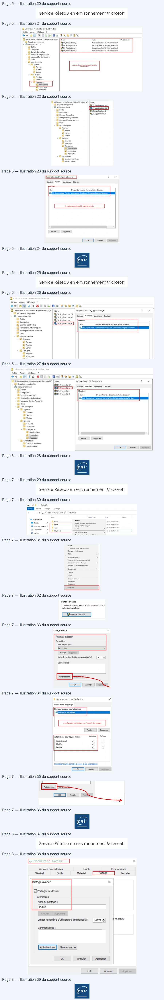
Page 9
Service Réseau en environnement Microsoft
b- Application des règles d’accès NTFS
La procédure qui suit vaut pour la ressource Production
•
Dans l’onglet Sécurité du dossier Prod cliquer sur Avancé
•
Puis cliquer sur Désactiver l’héritage
Et convertir les autorisations héritées en autorisations explicites
•
Supprimer toutes les entrées mentionnant des groupes d’utilisateurs
Page 9/10
© ENI – Tous droits réservés
Texte relevé dans les illustrations
Propriétés de : Prod
x
Général
Partage
Sécurité
Versions précédentes
Personnaliser
Nom de l'objet:
D:\Prod
Noms de groupes ou d'utilisateurs :
EM Utilisateurs authentifiés
8B Système
§2 Administrateurs (Administrateurs)
£B Utilisateurs (Utilisateurs),
Pour modifier
les autorisations. cliquez sur Modifier.
Modifier.
|
Autorisations pour Utilisateurs authentifiés
Autoriser
Refuser
Contrôle total
D
Modification
V4
Lecture et exécution
v
Affichage du contenu du dossier
v
Lecture
V4
Écriture
VA
Ÿ
Pour les autorisations spéciales et les paramètres avancés. cliquez sur
Avancé.
Informations sur le contrôle d'accès etles autorisations
Pour obtenir des informations supplémentaires, double-cliquez sur une entrée d'at
sélectionnez l'entrée et cliquez sur Modifier (si disponible).
Entrées d'autorisations:
Type
Principal
Accès
Hérité :
8%
Autori.
Administrateurs
Contrôle total
DA
8%
Autori..
Système
Contrôle total
DA
SR Autori…
Utilisateurs authentifiés
Modification
DA
£R
Autori…
Utilisateurs
Lecture et exécution
DA
Ajouter
Supprimer
Afficher
ent
Page 10
Service Réseau en environnement Microsoft
•
Puis ajouter les groupes de domaine local concernés (DL_Production_*), créés
précédemment comme suit
Pour chaque DL, il conviendra d’appliquer les bons
droits les uns après les autres.
DL_Production_CT => cocher la case Contrôle Total dans la colonne Autoriser
DL_Production_M => cocher la case Modification dans la colonne Autoriser
DL_Production_L => cocher la case Lecture et exécution dans la colonne Autoriser
DL_Production_R => cocher la case Contrôle Total dans la colonne Refus
Faire exactement les mêmes manipulations dans l’onglet Sécurité sur chacun des dossiers.
Il ne reste plus qu’à tester les accès aux partages depuis un système client via les liens
UNC.
Page 10/10
© ENI – Tous droits réservés
Texte relevé dans les illustrations
Pour obtenir des informations supplémentaires, double-cliquez sur une entrée d'autoi
sélectionnez l'entrée et cliquez sur Modifier (si disponible).
Entrées d'autorisations :
Type
Principal
Accès
Hérité de
8% Autor.
Administrateurs
Contrôle total
Aucun
82 Autori…
Système
Contrôle total
Aucun
BP autor. Uttssteurs autenties … Moditeaton
Aucin |
82% Autor.
Utilisateurs
Lecture et exécution
Aucun
Nowe
Modes
Activer l'héritage
[C]Remplacer toutes les entrées d'autorisation des objets enfants par des entrées d'at
L
Propriétés de: Prod
x
Général Patage
Versions précédentes _ Personnaliser
Nom de l'objet :
C:\Datasafe\Prod
DL.Productions_CT (MONPRENOM\DL_Productions_CT)
88 DL_Productions_M (MONPRENOM\DL_Productions_M)
‘88, DL.Productions_L (MONPRENOM\DL.Productions_L)
SL DL,Productions_R (MONPRENOM\DL_Productions_R)
Pour modifier les autorsatons, ciquez sur Modtier
Tee
Autorisations pour DL_Productions_CT
Atorser | Refuser
Contrôle total
v
Modfication
v
Lecture et exécution
v
‘Affichage du contenu du dossier
v
Lecture
v
Eorture
Pourles autorisations spéciales et les paramètres avancés, ciquez sur
Pas
Avancé.
Informations sur le contrôle d'accès et les autorisations
Lane| Ds
ent
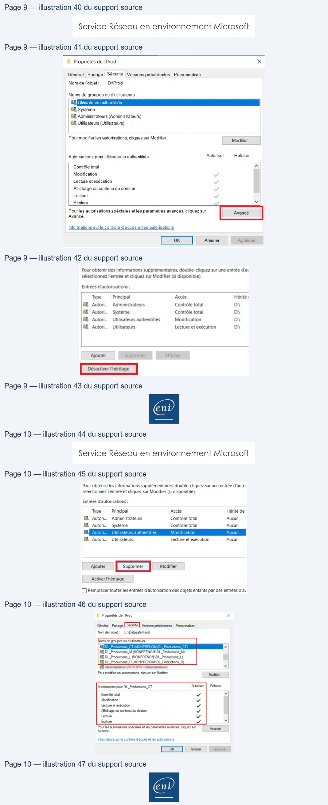
Référence du document : 1ugnwkZO8QSxrU6er7gzre7jESsSr8ie7 · SHA-256 49d0d4bed7d42977…
Correction · Solution du TP 4 - La gestion des impressions · 22 pages transcrites
Correction originale : à consulter après avoir tenté l’exercice.
Page 1
Service Réseau en environnement Microsoft
La gestion des impressions
TP du Module 02 – Active Directory
Avant de démarrer ce TP, il convient d’avoir suivi les vidéos du module 2 et réalisé les TP
précédents.
Durée estimée
30 à 1 heure
Énoncé
Prérequis :
•
Avoir réalisé le TP précédent du Module 02.
Mise en place du service d’impression
W19-SRV1 sera le serveur en charge de la gestion des imprimantes.
Installation du rôle du serveur d’impression
Depuis la console Gestionnaire de serveur de W19-SRV1, cliquer sur Gérer puis Ajouter des
rôles et fonctionnalités et réaliser l’installation du rôle Services d’impression. Attendre la fin
de l’installation du service (le redémarrage du serveur n’est pas nécessaire).
Page 1/22
© ENI – Tous droits réservés
Page 2
Service Réseau en environnement Microsoft
Une fois l’installation du rôle et des fonctionnalités associées effectuée, lancer la console
Gestion de l’impression à partir du menu Outils dans la console Gestionnaire de serveur.
Configuration d’imprimantes
L’entreprise vient d'investir dans un périphérique d'impression réseau à destination du
service commercial sur le site de Rennes. Le modèle est HP Color LaserJet M552.
Réalisez les actions nécessaires sur le serveur afin de pouvoir mettre à disposition ce
périphérique.
Adresse IP
Nom imprimante
Param. par défaut
Qui peut imprimer ?
172.28.10.46
Imp-Commercial-35RDC
- Recto/Verso
Service commercial
Paramètres supplémentaires :
Page 2/22
© ENI – Tous droits réservés
Texte relevé dans les illustrations
TE Assistant Ajout de rôles et de fonctionnalités
_
o
x
2
c
2
SERVEUR DE DESTINATION
Sélectionner des rôles de serveurs
Avant de commencer
Sélectionnez un ou plusieurs rôles à installer sur le serveur sélectionné.
Type d'installation
Rôles
Description
Sélection du serveur
[] Accès à distance
“A|
Print and Document Services enables you
RTE
Cl contrôleurde réseau
printer management tasks.
ere ie
LS
C1 Hyper-V
Services de documents et
[] Serveur de télécopie
Services de rôle
[1 Serveur DHCP
5] Serveur DNS (Installé)
Confirmation
[1 Serveur Web (IIS)
[] Service Guardian hôte
Si
Services AD DS (Installé)
[] Services AD LDS (Active Directory Lightweight Directory Sen
[] Services AD RMS (Active Directory Rights Management Serv
[1 Services Bureau à distance
CO Services d'activation en volume
ervices d'impression et de numérisation de document}
[] Services de certificats Active Directory
[1 Services de déploiement Windows
[] Services de fédération Active Directory (AD FS)
>
[ll] Services de fichiers et de stockage (2 sur 12 installé(s))
FE Gestionnaire de serveur
-
8
x
Gestionnaire de serveur
> Tableau de bord
+
(©)
1
P
cer
(Oil
After
Ace
Analyseurde performances
BIENVENUE DANS GESTIONNAIRE DE SERVEUR
Contiguraton du sème
Defragmenter et optimiser es lecteurs
HF
Serveur local
Diagnostic de mémoire Windows
Hi Tous les serveurs
-
Éditeur du Registre
HE Services de fichiers et d... D
‘
Pe
D
Gestion de l'ordinateur
RAPIDEee
.
iouter des
rôles
Informations système
2
Ajouter
des
roles
| Adresse IP | Nom imprimante | Param par défaut . | Qui peut imprimer ? | |||
| 172 28 10 46 . . . | Imp-Commercial -35RDC | Recto/Verso - | Service commercial |
Page 3
Service Réseau en environnement Microsoft
•
Les administrateurs du domaine auront le contrôle total sur la gestion de ces
imprimantes
•
Les imprimantes seront publiées dans l’annuaire Active Directory
La société possède un périphérique HP Laserjet 5 destinée à imprimer des bons de
livraison/retrait pour le service production. Les livreurs doivent impérativement récupérer
ceux-ci avant de quitter la plateforme logistique.
L'imprimante actuelle ne suffit plus aujourd’hui pour suivre la cadence de l'usine. La
direction a donc décidé d'investir dans deux nouveaux périphériques d'impression de
modèle HP Color LaserJet Pro MFP M274
Réalisez les actions nécessaires sur le serveur afin de mettre à disposition ces périphériques.
Adresse IP
Nom Imprimante
Qui peut imprimer ?
172.28.10.90
172.28.10.91
Imp-BL44-Usine
Service production
Paramètres supplémentaires :
•
Les administrateurs du domaine auront le contrôle total sur la gestion de cette
imprimante
•
L’imprimante sera publiée dans l’annuaire Active Directory
1°) Copie des fichiers
A partir de votre machine ENI, se rendre sur le partage distrib (lecteur R:) à l’endroit
suivant : ‘Drivers\Drivers_imprimantes_TSSR090_Services_réseau_Microsoft’
Page 3/22
© ENI – Tous droits réservés
Texte relevé dans les illustrations
|
+
| Drivers_Imprimantes_TSSRO90_Service_Réseau_Microsoft
#
Ü % Couper
x
ii
5 Nouvel élément+ M
E ouvrir
WA
Copier le chemin d'accès
e
À] Accès rapide ~
Modifier
Épinglerà
Copier
Coller
Déplacer Copier
Supprimer Renommer
Nouveau
Propriétés
IAccas'rapide
[2] Coller le raccourci
HS
as
~
dossier
.
Historiqu
Presse-papiers
Organiser
Nouveau
Ouvrir
€
vt
> Réseau
>
10.35.0.6
>
Distrib
>
Drivers
>
Drivers_Imprimantes_TSSRO90_Service_Réseau_Microsoft
Nom
Modifié le
Type
Taille
x# Accès rapide
@ HP_Color_LaserJet_Pro_MFP_M274-full-so....
24/02/2022 17:07
Application
148 377 Ko
@ OneDrive - Personal
HP_Color_LJ_Ent M552-full-solution-192.…
24/02/2022 17:06
Application
93 117 Ko
& CePC
À. Printer.Driver.Canon.lr.6870czip
01/03/202413:54
Dossier compressé
13890 Ko
IA Bureau
9) Printer.Driver.Dell.C3765 zip
01/03/2024 13:54
Dossier compressé
5 686 Ko
=
À upd-pclé-x64-7.8.0.26261zip
03/09/2025 16:05
Dossier compressé
21 693 Ko
=] Documents
| Adresse IP | Nom Imprimante | Qui peut imprimer ? | ||
| 172 28 10 90 . . . | ||||
| 172 28 10 91 . . . | Imp-BL44 -Usine | Service production |
Page 4
Service Réseau en environnement Microsoft
Copier/coller sur W19-SRV1 le fichier contenant le pilote
universel d’imprimante HP nommé upd-pcl6-x64-….
2°) Extraction des pilotes
Faire un clic droit sur le fichier de pilote et sélectionner Extraire tout…, puis choisir le dossier de votre
choix
Un nouveau dossier apparait avec le contenu du fichier décompressé.
Page 4/22
© ENI – Tous droits réservés
Texte relevé dans les illustrations
upd-pcl6-x64-7.
8.026261
x
E
{| Extraire les dossiers compressés
CEE
_
Sélectionner une destination et extraire les fichiers
EE
ouvrir
Les fichiers seront extraits dans ce dossier:
Epingler à l'écran de démarrage
\Users\Administrateur\Desktop\upd-pclé-x64-7.8.0.26261
Parcourir.
l®
Partager
Ouvrir avec.
F1 Afficher les dossiers extraits une fois l'opération terminée
|
Accorder l'accès à
>
<
Restaurer les versions précédentes
|
Copie de 94 éléments de
upd-pcl6-x64-7.8.02..
vers upd-pclé-x64-7.802
Envoyer vers
>
48% terminé
"
x
Couper
RS
Copier
Créerun raccourci
Plus de détails
Supprimer
Renommer
M
+ | upd-pclé-x64-7.8.0.26261
t
>
upd-pcl6-x64-7.8.0.26261
>
Nom
Modifié
le
Type
Taille
x Accès rapide
Drivers
08/09/2025 22:55
Dossier de fichiers
EM Bureau
-
2] hpbcfgre.dil
24/07/2025 04:51
Extension
de
I'app.
4789 Ko
Ÿ Téléchargements
once
_
on
| hpbuio32.dil
24/07/2025 04:51
Extension de
l'app.
1430 Ko
==] Documents
sponte
AE
c
cy,
:
2] hpbuio64.dil
24/07/2025 04:51
Extension
de
l'app.
1725 Ko
=| Images
à hpbuio200!
24/07/2025 04:51
Catalogue de sécu
448 Ko
Drivers
à] hpbuio200!
23/07/2025 20:29
Informations de c.
31 Ko
upd-pcl6-x64-7.8.0..
¥ hpbuio200le
24/07/2025 04:51
Catalogue de sécu:
447 Ko
à] hpbuio200le
23/07/2025 20:29
nformations de c.
48 Ko
® Ce PC
P
| hpbuiocert.dil
24/07/2025 04:51
Extension de
l'app.
414 Ko
wW Réseau
| hpbuiodm64.dll
24/07/2025 04:51
Extension
de
l'app.
950 Ko
| hpcpu340.cfg
23/07/2025 20:29
Fichier CFG
375 Ko
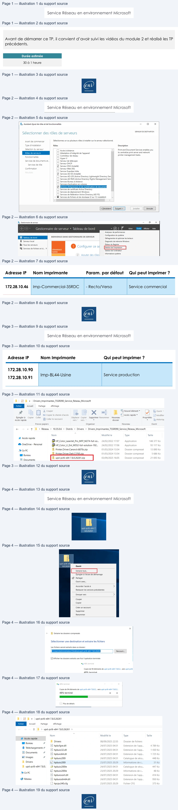
Page 5
Service Réseau en environnement Microsoft
3°) Ajout des pilotes au serveur d’impression
Dans la console Gestion de l’impression, se diriger dans la section Pilotes. Seuls les pilotes
installés par défaut sont affichés pour le moment :
Faire un clic droit sur le noeud Pilotes puis sélectionner Ajouter un pilote. Une fenêtre
d’assistant s’ouvre pour effectuer les paramétrages.
Page 5/22
© ENI – Tous droits réservés
Texte relevé dans les illustrations
1
Gestion de l'impression
Fichier
Action
Affichage
?
e|2n|e8| RE
[=] Gestion de l'impression
Nom du pilote
Environnement | Version du pilote
Isolement du p
> a onedre
[i] Microsoft enhanced Point and … Windowsx64
10.0.17763.348
Aucun
vi mimes
{4 Microsoft enhanced Point and … Windows NT x86 10.0.17763.348
Aucun
va RTE bu
fie)Microsoft Print To PDF
Windows x64
10.0.17763.1
Aucun
Ty
2
A Microsoft XPS Document Write... Windows x64
10.0.17763.1
Aucun
> Gy Formulaires
>
@
Ports
> 1 Imprimantes
>
tise Imprimantes déployées
@9
| Ft
Gs! wt
= Gestion de l'impression
Nom du pilote
Environnement
Version du pilote
Isolement du pilote
> a pointy
[2] Microsoft enhanced Point and... Windows
x64
10.0.17763.348
Aucun
vi wie LU Pen
[ie] Microsoft enhanced Point and... Windows NTx86 10.0.17763.348
Aucun
va — A
à
|) Microsoft Print To PDF
Windowsx64
10.0.17763.1
Aucun
. a Fra
Ajouter un pilote...
licrosoft XPS Document Write... Windows x64
10.0.17763.1
Aucun
>
@
Ports
Gérer les pilotes...
> se Imprir
.
> G8 Imprimantes
Affichage
>
Actualiser
Exporter la liste...
Aide
Wr
d Assistant Ajout de pilote d'imprimante
x
Assistant Ajout de pilote d’imprimante
Cet Assistant vous aide à installer les pilotes d'imprimante pour
diverses plates-formes sur un serveur d'impression.
Les pilotes d'imprimante appropriés sont automatiquement
installés sur votre ordinateur ou sur d'autres ordinateurs du
réseau lorsque ceux-ci se connectent au serveur d'impression.
Cliquez sur Suivant pour continuer.
< Précédent
Annuler
Page 6
Service Réseau en environnement Microsoft
Dans le cas présent, seuls des pilotes x64 (64 bits) seront utilisés, ne pas cocher ARM64 ni
x86.
Pour ajouter des pilotes complémentaires, cliquer sur Disque fourni.
Cliquer ensuite sur Parcourir pour accéder aux fichiers décompressés sur W19-SRV1
précédemment.
Page 6/22
© ENI – Tous droits réservés
Texte relevé dans les illustrations
tb Assistant Ajout de pilote d'imprimante
x
Sélection du processeur
Chaque processeur utilise son propre jeu de pilotes d'imprimantes.
Sélectionner le processeur de tous les ordinateurs qui utiliseront ce pilote :
ProcesseurCE
F1 x64
Os
Assistant Ajout de pilote d'imprimante
x
Sélection du pilote d'imprimante
Le fabricant et le modèle déterminent le pilote d'imprimante à utiliser.
z=
Sélectionnez le fabricant et le modèle du pilote d'imprimanteà installer. Si le pilote n'est pas
dans la liste, cliquez sur Disque fourni pour sélectionner le pilote voulu.
Si Windows Update est disponible, cliquez ici pour accéder à d'autres pilotes.
Fabricant
Imprimantes
a
Generic
(Generic / Text Only
Microsoft
IE Generic IBM Graphics 9pin
[Generic IBM Graphics 9pin wide
(MS Publisher Color Printer
a
¥
[© Ce pilote a été signé numériquement.
Windows Update
| Disquefouni… |
Pourquoi la signature du pilote est-elle importante?
cher Ce] Line
Installer à partir du disque
x
Insérez le disque d'installation du fabricant, puis vérifiez Lo]
wa
que le lecteur approprié est sélectionné ci-dessous.
[ox |
Annuler
Copier les fichiers du fabricant à partir de
:
ent
Page 7
Service Réseau en environnement Microsoft
Dans la capture ci-dessous, les fichiers de pilotes ont été décompressés dans un dossier sur
le bureau de l’utilisateur Administrateur.
Sélectionner le fichier hpzipa23.inf comme indiqué dans la capture :
Confirmer en cliquant sur Ouvrir puis OK
Le modèle de périphérique d’impression apparait, valider avec le bouton Suivant.
Page 7/22
© ENI – Tous droits réservés
Texte relevé dans les illustrations
fæ Rechercher le fichier
x
Regarderdans :
: upd-pcl6-x64-7.8.0.26261
v
le] oe Sa
bd
t
Nom
Modifié le
Type
| L Drivers
08/09/2025 22:55
Dossier de
Accès rapide) hpbuio200!
23/07/2025 20:29
Informatic
4%] hpbuio200le
23/07/2025 20:29
Informatic
|_|
£3) hpcu340u
23/07/2025 20:29
Informatic
Bureau
£5) hpmews02
23/07/2025 20:29
Informatic
=
&) hpmldm02
23/07/2025 20:29
Informatic
ri
&) hppewnd
23/07/2025 20:29
Informatic
Bibliothéques
&) hppfaxnd
23/07/2025 20:29
Informatic
&)hppscnd
23/07/2025 20:29
Informatic
la
&) hpzid4vp
23/07/2025 20:29
Informatic
Ce PC
&] hpzipa23
23/07/2025 20:29
Informatic
&) hpzipr23
23/07/2025 20:29
Informatic
2
4] hpzius23
23/07/2025 20:29
Informatic
Réseau
<
>
Nom du fichier:
hpzipa23
od
Types de fichiers :
Informations de configuration (*.inf)
Annuler
C3 Assistant Ajout de pilote d'imprimante
x
Sélection du pilote d'imprimante
Le fabricant et le modèle déterminent le pilote d'imprimante à utiliser.
=
Sélectionnez le fabricant et le modèle du pilote d'imprimante à installer. Si le pilote n'est pas
dans la liste, cliquez sur Disque fourni pour sélectionner le pilote voulu.
Si Windows Update est disponible, cliquez ici pour accéder à d'autres pilotes.
Imprimantes
[ΠHP Universal Printing PCL 6 (v7.8.0)
[J
Ce pilote a été signé numériquement.
Windows Update
Disque fourni...
Pourquoi la signature du pilote est-elle importante ?
<Précédent
=
eni
Page 8
Service Réseau en environnement Microsoft
Le nouveau pilote est maintenant listé dans la console Gestion de l’impression.
Page 8/22
© ENI – Tous droits réservés
Texte relevé dans les illustrations
Fin de l'Assistant Ajout de pilote
d'imprimante
L'Assistant Ajout de pilote d'imprimante est terminé.
Vous êtes sur le point d'ajouter les pilotes suivants
:
HP Universal Printing PCL 6, x64, Type 3 - Mode utilisateur
Pour fermer cet Assistant, cliquez sur Terminer.
<Précédent
Terminer
Annuler
Fichier
Action
Affichage
?
#9
420 Gs
BE
i= Gestion de l'impression
Nom du pilote
Environnement __ Version du pilote
M Filtres personnalisés
(#] HP Universal Printing PCL 6
Windows x64
61.340.1.26261
- i Eu campression
TE] Microsoft enhanced Pointand P.. Windowsx64
10.0.17763348
~ 4
a :
(local)
ff] Microsoft enhanced Point and P.. Windows NT x86
10.0.17763.348
4
otes
>
=
.
& Microsoft Print To PDF
Windows x64
10.0.17763.1
&x Formulaires
»
.
.
®
ports
{#} Microsoft XPS Document Writer … Windows x64
10.0.17763.1
~
BA Imprimantes
[1 Imprimantes déployées
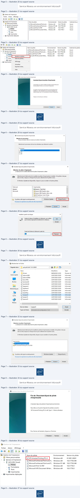
Page 9
Service Réseau en environnement Microsoft
Création des ports d’impression
4 ports d’impression doivent être créés.
Faire un clic droit dans la console sur la section Ports puis sélectionner Ajouter un port.
Choisir le type de port Standard TCP/IP Port et cliquer sur Ajouter un port.
Page 9/22
© ENI – Tous droits réservés
Texte relevé dans les illustrations
{& Gestion de l'impression
Fichier
Action
Affichage
?
e+2r| BI RE
if Gestion de l'impression
| Nomd..
Description du...
Type de port
Nom de l'imprimante
‘a
a Wis te
Ê CO.
Port local
Écrire
va
bis (local)
Qo...
Port local
Ecrire
i)
Pi
;
,
@ CO.
Port local
Ecrire
fy)
Formulaires
es
& @ Pode
| GFILE:
Portlocal
Écrire
æmim
Ajouterunport.. e
D LPTI:
Port local
Écrire
ta Impriman
Galerie porte
@ LPT2:
Port local
Écrire
@ LPT3
Port local
Écrire
Affichage
>
B POR...
Portlocal
Écrire
Microsoft XPS Document Writer, Microsoft Print to PDF
Actualiser
Exporter la liste...
Aide
À Ports d'imprimante
x
Types de ports disponibles:
ocal
Port
[Standard TCP/IP Port
Ajouter un type de port...
Ajouter un port...
Annuler
Assistant Ajout de port imprimante TCP/IP standard
q
Assistant Ajout de port d’imprimante TCP/IP
standard
À
Utilisez cet Assistant pour ajouter un port pour une
imprimante réseau.
Avant de continuer, vérifiez que:
1. Le périphérique est sous tension.
2. Le réseau est configuré et vousy êtes connecté.
Cliquez sur Suivant pour continuer.
Page 10
Service Réseau en environnement Microsoft
Renseigner dans la zone Nom ou adresse IP la première adresse IP (ici 172.28.10.46)
Le Nom du port se complète automatiquement.
L’assistant tente de contacter l’imprimante sur l’adresse indiquée. Il faut attendre que le
test se termine pour pouvoir poursuivre. Choisir ensuite le périphérique générique proposé
et cliquer sur Suivant.
Page 10/22
© ENI – Tous droits réservés
Texte relevé dans les illustrations
Assistant Ajout de port imprimante TCP/IP standard
Ajouter un port
A
Pour quel périphérique voulez-vous ajouter un port ?
Te
Entrez un nom d'imprimante ou une adresse IP, et le nom du port pour le périphérique
désiré.
Nom ou adresse IP de l'imprimante :
172.28.10.46|
Nom du port:
172.28.10.46
<Précédent
Annuler
Assistant Ajout de port imprimante TCP/IP standard
Détection du port TCP/IP
Windows détecte le port TCP/IP et affichera la page suivante une fois l'opération terminée.
S—
Détection du port TCP/IP...
Windows affichera automatiquement la page suivante une fois le processus de détection terminé.
<Précédent || Suivant >
Page 11
Service Réseau en environnement Microsoft
. Cliquer sur Terminer pour valider la fin du paramétrage.
Un port TCP/IP est maintenant créé et listé dans la console de gestion
Page 11/22
© ENI – Tous droits réservés
Texte relevé dans les illustrations
Assistant Ajout de port imprimante TCP/IP standard
Informations supplémentaires requises concemant le port
RS
Le périphérique n'a pas pu être identifié
S
>,
Ce périphérique est introuvable sur le réseau. Vérifiez que:
1. Le périphérique est allumé.
2. Vous êtes connecté au réseau.
3. Le périphérique est configuré correctement.
4. L'adresse de la page précédente est correcte.
Si vous pensez que l'adresse est incorrecte, cliquez sur Précédent pour revenir à la page précédente.
Corrigez l'adresse et effectuez une nouvelle recherche sur le réseau. Si vous êtes sûr que l'adresse est
correcte, sélectionnez le type de périphérique ci-dessous.
Type de périphérique
@ Standard
Generic Network Card
bd
© Personnalisé
< Précédent
Annuler
Assistant Ajout de port imprimante TCP/IP standard
q
Fin de l'Assistant Ajout de port
=
imprimante TCP/IP standard
Vous avez sélectionné un port avec les caractéristiques
suivantes.
SNMP
:
Non
Protocole
:
RAW, Port 9100
Périphérique
:
172.28.10.46
Nom du port:
172.28.10.46
Type de carte:
Generic Network Card
Cliquez sur Terminer pour terminer cet Assistant.
<Précédent
Annuler
Page 12
Service Réseau en environnement Microsoft
Effectuer les mêmes opérations pour les ports restants (172.28.10.90 et 172.28.10.91)
Cela doit donner finalement :
Création des imprimantes
Il faut maintenant configurer les différentes imprimantes nécessaires sur le serveur.
2 imprimantes différentes seront créées pour correspondre aux « profils d’impression »
demandés,
IMP-Commercial-35RDC (HP Color Laserjet M552)
Faire un clic droit sur la section Imprimantes puis sélectionner Ajouter une imprimante
Page 12/22
© ENI – Tous droits réservés
Texte relevé dans les illustrations
fodGestion de l'impression
Fichier
Action
Affichage
?
-+
à
6 i
= Gestion de l'impression
Nom du port
Description du port
Type de port
Nom del'imprimi
i Filtres personnalisés
@ PORTPROMPT:
Port local
Écrire
Microsoft XPS Do
v a Serveurs d'impression
ÿ LPT3:
Port local
Écrire
~ i WISERV (local)
pr] LPT2:
Port local
Écrire
if] Pilotes
.
ÿ LPT1:
Port local
Ecrire
&x Formulaires
pt
.
@ Ports
sd FILE:
Port local
Ecrire
8 Imprimantes
bd COM4:
Port local
Écrire
a Imprimentes déployées
COM:
Port local
Ecrire
# COM2:
Port local
Ecrire
] COM1:
Port local
Écrire
& Gestion de l'impression
Fichier
Action
Affichage
?
-+
a3 BE
= Gestion de l'impression
Nom du port
Description du port
Type de port
Nom de l'imprimi
D Filtres personnalisés
& PORTPROMPT:
Port local
Écrire
Microsoft XPS Do
~ i Serveurs d'impression
9 LPT3:
Port local
Ecrire
- i W19-SRV1 (local)
© upr2:
Port local
Écrire
>
1] Pilotes
.
@ wt:
Port local
Ecrire
& Formulaires
ñ
|
Ÿ Ports
ue FILE:
Port local
Écrire
ei Imprimantes
Lu COM4:
Port local
Écrire
iB Imprimantes déployées
coms:
Port local
Ecrire
4 COM2:
Port local
Ecrire
@ com:
Port local
Ecrire
& 172.28.10.91
Port TCP/IP standard
Écrire
Port TCP/IP standard
Écrire
i] 172.28.10.46
Port TCP/IP standard
Ecrire
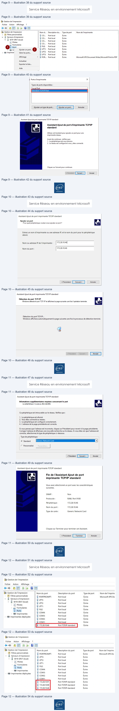
Page 13
Service Réseau en environnement Microsoft
Cocher Ajouter une nouvelle imprimante via un port existant et sélectionner le premier
port TCP/IP créé (ici 172.28.10.46)
Sélectionner le pilote existant
Page 13/22
© ENI – Tous droits réservés
Texte relevé dans les illustrations
i Gestion de l'impression
Fichier
Action
Affichage
?
eo
42m G8 Em
i Gestion de l'impression
Nom de l'imprimante
Stat
“21 Filtres personnalisés
ISH Microsoft Print to PDF
Prêt
~ 4 Serveurs d'impression
Ba Microsoft XPS Document Writer
Prêt
+
jj W19-SRVI (local)
L#] Pilotes
pr Formulaires
ÿ Ports
8 Imprimc
==
Affichage étendu
Affichage
a
Actualiser
Exporter la liste...
Aide
= Assistant Installation d'imprimante réseau
Installation de l'imprimante
Choisissez une méthode d'installation.
©
Rechercher les imprimantes du réseau
© Ajouter une imprimante TCP/IP ou de services Web par adresse IP ou nom d'hôte
Ajouter une nouvelle imprimante via
@
2
1
v
un port extant:
172.28.10.46 (Port TCP/IP standard)
o Créer un autre port et ajouter une nouvelle
Local Port
imprimante :
eni
Page 14
Service Réseau en environnement Microsoft
Nommer l’imprimante et paramétrez-là comme suit :
Cliquez sur suivant dans chaque écran restant puis sur Terminer
IMP-BL44-Usine (HP Color Laserjet Pro MFP M274)
Procédez de la même façon pour le périphérique suivant
Page 14/22
© ENI – Tous droits réservés
Texte relevé dans les illustrations
Pilote d'imprimante
Choisissez un pilote pour la nouvelle imprimante.
Utiliser le pilote d'imprimante sélectionné par l'Assistant
Pilote compatible introuvable.
© Utiliser un pilote d'imprimante existant sur l'ordinateur
HP Universal Printing PCL 6
od
O Installer un nouveau pilote
= Assistant Installation d'imprimante réseau
x
Nom de l'imprimante et paramètres de partage
Vous pouvez donner un nom convivial à l'imprimante et spécifier si elle peut être utilisée par d'autres personnes.
Nom de l'imprimante :
Imp-Commercial-35RDC
Partager cette imprimante
Nom du partage :
Imp-Commercial-35RDC
Emplacement :
RDC
Commentaire
:
Imprimante HP Color Laserjet M552
< Précédent
Annuler
Page 15
Service Réseau en environnement Microsoft
Ajoutez une imprimante, puis sélectionnez le port existant 172.28.10.90 (le 2ème port sera
sélectionné plus tard) et le pilote installé précédemment.
Paramétrez l’imprimante comme suit :
Gestion des droits d’accès
Il faut maintenant configurer les autorisations d’utiliser ou gérer ces imprimantes en
respectant les préconisations AGDLP
Pour la création des groupes de domaine local, veuillez vous reporter à l’atelier
précédent relatif aux partages de fichiers.
Vous devrez avoir créé les groupes de domaine local suivant :
Page 15/22
© ENI – Tous droits réservés
Texte relevé dans les illustrations
a Gestion de l'impression
Fichier
Action
Affichage
_?
-+ 26 6: am
te Gestion de l'impression
Nom de l'imprime
2 Filtres personals
mImp-Commerc
+ A Serveurs d'impression
:
à wo. sev
D
1 Microsoft Print
de Assistant Installation d'imprimante réseau
À lt
1Microsoft XPS
lotes
:
D
Installation de l'imprimante
ds Assistant Installation d'imprimante réseau
ék Formulaires
Choisissez une méthode d'installation
~
® Ports
Pilote d'imprimante
Be Imp
:
nn
Choisissez un plote pour la nouvelle imprimante.
1 Imprimante’
outerune
imprimantes
Aff
étend
ichage étendu
O Rechercher les imprimantes du réseau
Affichage
Utiliser le pilote d'imprimante sélectionné par l'Assistant
© Ajouter une imprimante TCP/IP ou de services Web par adresse IP ou nom d'hôte
Actualiser
Pilote compatible introuvable.
Exporter la liste.
.Heaunenouvelle Imprimante via
172.28.10.90 (PortTCPAP standard)
Aide
‘
© Utiliser un pilote d'imprimante existant sur l'ordinateur
|
(Créer un autre port et ajouter une nouvelle
epee
imprimante
HP Universal Printing PCL6
O Installer un nouveau pilote
dB Assistant
Installation
d'imprimante résea
Nom de l'imprimante et paramètres de partage
Vous pouvez donner un nom convivial à l'imprimante et spécifier si elle peut être utilisée par d'autres personnes.
Nom de l'imprimante :
Imp-BL44-Usine
Partager cette imprimante
Nom du partage:
Imp-BL44-Usine
Emplacement :
Usine
Commentaire :
HP Color Laserjet Pro MFP M274
Page 16
Service Réseau en environnement Microsoft
Pour chacune des imprimantes, signification des groupes :
•
GestDocuments => permet de gérer la file d’attente et les travaux qui y sont
•
GestImprimante => permet de gérer l’imprimante (modifier autorisations d’accès,
gérer les documents et imprimer)
•
Imprimer => pas besoin de préciser…
Le groupe des administrateurs GG_Informatique_Admin sera membre des
DL_*_GestImprimante
Le groupe GG_Commercial sera membre du groupe DL_IMP-Commercial-
35RDC_Imprimer
Le groupe GG_Production sera membre du groupe DL_IMP-BL44-Usine_Imprimer
IMP-Commercial-35RDC (HP Color Laserjet Pro MFP M274)
Faire un clic droit sur l’imprimante IMP-Commercial-35RDC, puis Propriétés
Page 16/22
© ENI – Tous droits réservés
Texte relevé dans les illustrations
Nom
Type
a, DL_IMP-BL44-Usine_GestDocuments
Groupe de sécurité - Domaine local
a, DL_IMP-BL44-Usine_Gestimprimante
Groupe de sécurité - Domaine local
am,DL_IMP-BL44-Usine_Imprimer
Groupe de sécurité - Domaine local
a, DL_IMP-Commercial-35RDC_GestDocuments
Groupe de sécurité - Domaine local
§2/DL_IMP-Commercial-35RDC_Gestimprimante
Groupe de sécurité - Domaine local
a, DL_IMP-Commercial-35RDC_Imprimer
Groupe de sécurité - Domaine local
Nom de l'imprimante
Statut de la file.
Travaux.
Nom du serveur
Ba Microsoft XPS Document Writer
Prêt
0
W19-SRV1 (local)
(5 Microsoft Print to PDF
Prêt
0
W19-SRV1 (local)
Bi Imp-BL44-Usine
Ouvrir la file d'attente de l'imprimante...
al)
Suspendre l'impression
Répertorier dans l'annuaire
Déployer avec la stratégie de groupe...
Définir des valeurs d'impression par défaut...
Gérer le partage...
Imprimer une page de test
Activer l'impression directe pour les filiales
Propriétés.
Supprimer
Renommer
Aide
eni
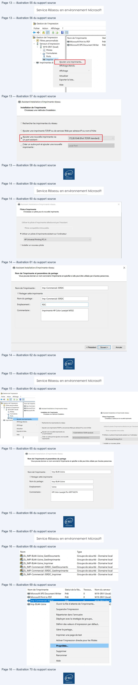
Page 17
Service Réseau en environnement Microsoft
Dans l’onglet Sécurité, ajoutez les bons groupes DL comme suit après avoir supprimé le
groupe tout le monde :
Pour publier l’imprimante dans l’annuaire Active Directory, rendez-vous dans l’onglet
Partage et cocher la case :
Page 17/22
© ENI – Tous droits réservés
Texte relevé dans les illustrations
= Propriétés de Imp-Commercial-35RDC
x
Général
Partage
Ports
Avancé
Gestion des couleurs
Sécurité
Paramètres du périphérique
Apropos de
Noms de groupes ou d'utilisateurs :
82 CREATEUR PROPRIETAIRE
a
aAdministrateur
82 Administrateurs (MONPRENOM\Administrateurs)
&2 DL_IMP-Commercial-35RDC_GestDocuments (MONPRENOM\DL_IMP-Commerc:
82 DL_IMP-Commercial-35RDC_Gestimprimante (MONPRENOM\DL_IMP-Commerc:
DL_IMP-Commercial-35RDC_Imprimer (MONPRENOM\DL_IMP-Commercial-35R'
v
<
>
Autorisations pour
-
DL_IMP-Commercial-35RDC_ Imprimer
Autoriser
Refuser
Imprimer
a,
O1
Gérer cette imprimante
en
O1
Gestion des documents
en
ol
Autorisations spéciales
1
I
tb Propriétés de Imp-Commercial-35RDC
x
‘Sécurité
Paramètres du périphérique
A propos de
Général
Partage
Ports
Avancé
Gestion des couleurs
=
Vous pouvez partager cette imprimante avec les utilisateurs connectés
à votre réseau. L'imprimante ne sera pas disponible si l'ordinateur est
en veille ou éteint.
M Partager cette imprimante
Nom de partage :
Imp-Commercial-35RDC
|
Rendu des travaux d'impression sur les ordinateurs clients
‘1 Lister dans l'annuaire
Pilotes
Si cette imprimante est partagée avec des utilisateurs d'autres versions
de Windows, vous devrez peut-être installer des pilotes
supplémentaires, afin que les utilisateurs n'aient pas à rechercher le
pilote d'imprimante lorsqu'ils s'y connectent.
Pilotes supplémentaires...
ent
Page 18
Service Réseau en environnement Microsoft
IMP-BL44-Usine (HP Color Laserjet Pro MFP M274)
Faire un clic droit sur l’imprimante IMP-BL44-Usine, puis Propriétés
Dans l’onglet Sécurité, ajoutez les bons groupes DL comme suit après avoir supprimé le
groupe tout le monde :
Page 18/22
© ENI – Tous droits réservés
Texte relevé dans les illustrations
Nom de l'imprimante
Statut de la file.
Travaux.
Nom du serveur
Ne
LU Imp-Bl4d-Usine |
Imp-BL44-Usine
afiad
dai
D Hi
HA
7
Ouvrir la
file
d'attente de
l'imprimante...
= Imp-Commercial-35R
st
:
PURE
)
HF
(= Microsoft Print to PD
Suspendre l'impression
)
M
= Microsoft XPS Docun
)
M
Répertorier dans l'annuaire
Déployer avec la stratégie de groupe...
Définir des valeurs d'impression par défaut...
Gérer le partage...
Imprimer une page de test
Activer l'impression directe pour les filiales
Propriétés.
Supprimer
= Propriétés de Imp-BL44-Usine
x
Général
Partage
Ports
Avancé
Gestion des couleurs
Sécurité
Paramètres du périphérique
A propos de
Noms de groupes ou d'utilisateurs
:
BL CREATEUR PROPRIETAIRE
A
2 Administrateur
82 Administrateurs (MONPRENOM\Administrateurs)
82 DL_IMP-BL44-Usine_GestDocuments (MONPRENOM\DL_Imp-BL44-Usine_Gestl
82 DL_IMP-BL44-Usine_Gestimprimante (MONPRENOM\DL_Imp-BL44-Usine_Gestl.
82 DL_IMP-BL44-Usine_Imprimer (MONPRENOM\DL_Imp-BL44-Usine_Imprimer)
v
<
>
Autorisations pour
DL_IMP-BL44-Usine_Gestlmprimante
Autoriser
Refuser
Imprimer
a,
ol
Gérer cette imprimante
a,
ol
Gestion des documents
OI
Autorisations spéciales
à
|
Pour les autorisations spéciales et les paramètres avancés, cliquez sur
Avancé
Avancé.
Informations sur le contrôle d'accès et les autorisations
Co] mue | one
eni
Page 19
Service Réseau en environnement Microsoft
Pour publier l’imprimante dans l’annuaire Active Directory, cochez la case déjà abordée
pour l’imprimante précédente (dans onglet Partage)
Dernier point, pour associer l’imprimante IMP-BL44-Usine à deux adresses IP, il faut activer
ce qui s’appelle un « pool » d’imprimantes.
Pour ce faire, direction onglet Ports afin d’activer la case nécessaire permettant de
cocher le 2ème port :
Installation d’une imprimante sur un poste client
•
Installer manuellement l’imprimante partagée IMP-Commercial-35RDC sur le poste
client W10
•
Tester l’impression avec un compte utilisateur membre du groupe G-Commercial
Ouvrir une session avec un compte administrateur sur le poste client pour installer
l’imprimante.
1ère méthode
Le moyen le plus simple pour installer une imprimante est de taper le chemin UNC dans le
menu Exécuter :
Page 19/22
© ENI – Tous droits réservés
Texte relevé dans les illustrations
d Propriétés de Imp-BL44-Usine
x
Sécurité
Paramétres du périphérique
A propos de
Général
Partage
Ports
Avancé
Gestion des couleurs
SD
mp-8l44-Usine
Impression sur les ports suivants. L'impression se fera sur le premier port
Sélectionné libre.
Port
Description
Imprimante
.
Oo coma:
Port série
(FILE:
Impression dans un fic...
[] 172281046
Port TCP/IP standard
Imp-Commercial-35RD.
© 17228.1090
Port TCP/IP standard
Imp-BL44-Usine
7223100
Port TCP/IP standard
L_] PORTPROMPT:
Port local
Microsoft XPS Docume.
<
>
Ajouter un port...
Supprimer le port
Configurer le port...
& Activer la gestion du mode bidirectionnel
Activer le pool d'imprimante
CRE ame
| Ai
ent
Page 20
Service Réseau en environnement Microsoft
Valider par OK, voici la présentation des partages disponibles où nous retrouvons les 2
imprimantes :
Un clic droit, puis sélectionner Connecter… pour déclencher l’installation de l’imprimante
2ème méthode
Passer par le menu Démarrer -> Paramètres :
Puis cliquer sur ajouter une imprimante
Page 20/22
© ENI – Tous droits réservés
Texte relevé dans les illustrations
= Exécuter
X
==)
Entrez le nom d'un programme, dossier, document ou
ressource Internet, et Windows l'ouvrira pour vous.
Ouvrir :
\\w19-srv1\|
v
9 Cette tache sera créée avec les autorisations
Annuler
| Parcourir...
ay
> |w19-srv1
Accueil
Partage
Affichage
7
M
> Réseau
> w19-srv1
>
# Accès rapide
= Imp-BL44-Usine
= Imp-Commercial-35RDC
NETLOGON
EM Bureau
#
Ouvrir
ee
E Documents
#
<
Créer un raccourci
© Images
*
Propriétés
Drivers
Ei}
Périphériques
:
Bluetooth, imprimantes, souris
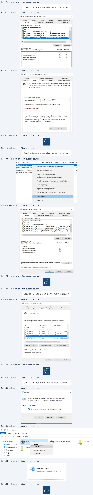
Page 21
Service Réseau en environnement Microsoft
Les imprimantes, si elles sont bien listées dans l’annuaire AD, doivent apparaitre.
Ne reste plus qu’à sélectionner l’imprimante souhaitée et cliquer sur Ajouter l’appareil
Fermer la session et rouvrez-là avec un compte du service commercial. Utilisez une
application type bureautique ou retouche/affichage d’image et lancez une impression
en utilisant l’imprimante installé précédemment.
Le travail d’impression doit normalement apparaitre dans la file d’attente d’impression.
Page 21/22
© ENI – Tous droits réservés
Texte relevé dans les illustrations
Paramètres
@
Accueil
Imprimantes et scanners
Ajouter des imprimantes et des scanners
©§
Bluetooth et autres appareils
;
Imprimantes et scanners
| [=
Imprimantes et scanners
O
Souris
Microsoft Print to PDF
E
Pavé tactile
Microsoft XPS Document Writer
CS]
Imprimantes et scanners
Ajouter des imprimantes et des scanners
Actualiser
O
Recherche d'imprimantes et de scanners
ra) Imp-BL44-Usine sur W19-SRV1
Imprimante
ras) Imp-Commercial-35RDC sur W19-SRV1
Imprimante
vas] Imp-Commercial-35RDC sur W19-SRV1
Imprimante
Ajouter l'appareil
Page 22
Service Réseau en environnement Microsoft
Page 22/22
© ENI – Tous droits réservés
Texte relevé dans les illustrations
= Imp-Commercial-35RDC sur W19-SRV1.monprenom.local
—
oO
Imprimante
Document
Affichage
Nom du document
Etat
Propriét..
Pages
Taille
Soumis
[Sans titre
Impressi…
Administ...
1
17,2 Ko
23:02:05
<
1 document(s) dans la file
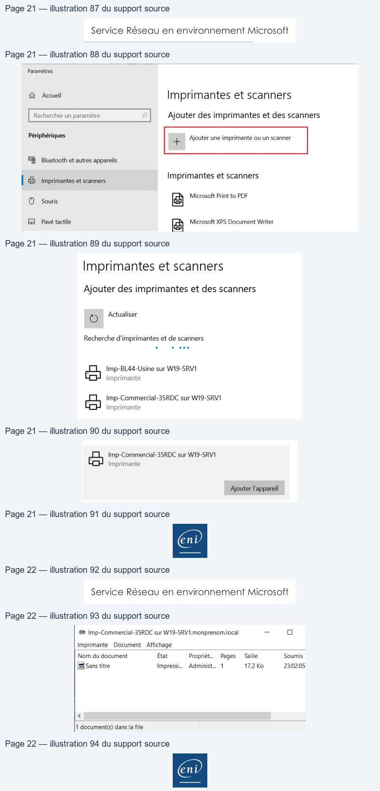
Référence du document : 1XxOE5N_ysgd-upRkGySwik9Zc4Bif4CI · SHA-256 8c998f003a98d4d6…
Complément IA / externe au cours — fiche pédagogique du portail
Cette fiche contient une reformulation et des aides d’apprentissage rédigées par IA. Elle est distincte de la transcription des documents du Drive et ne la remplace pas. Les schémas de synthèse de cette fiche sont des illustrations IA / externes au cours, sauf les captures explicitement attribuées à un document source.
Séquence : Services réseaux en environnement Microsoft Sources originales (A) : support, fiches, énoncés et corrections TSSR du module 02. Contenu du portail (B) : reformulation structurée des sources TSSR.
Objectifs¶
- Expliquer le rôle d’Active Directory dans un domaine.
- Identifier les ressources, utilisateurs et groupes administrés.
- Comprendre le principe AGDLP pour l’accès aux ressources partagées.
Un annuaire de domaine¶
Active Directory centralise l’authentification, les informations sur les utilisateurs et les ressources, ainsi que des paramètres d’ordinateurs et d’utilisateurs. La source cite notamment DNS, LDAP et Kerberos parmi les protocoles utilisés dans cet environnement.
Accès aux ressources : AGDLP¶
Le principe AGDLP organise l’attribution des droits par groupes : les comptes appartiennent à des groupes globaux, placés dans des groupes locaux de domaine, auxquels sont affectées des permissions. Il évite l’attribution directe de droits dispersés sur chaque utilisateur.
Méthode¶
Créer et contrôler les objets dans le contexte du TP ; affecter les droits au groupe prévu puis tester l’accès avec un compte de test. Ne pas conclure à partir de la seule présence d’un objet dans la console.
Vérification des acquis¶
- Quel est l’objectif d’AGDLP ?
- Quel protocole de la source est associé à l’authentification ?
Réponses
- Structurer l’attribution des permissions par groupes.
- Kerberos.
Complément IA / externe au cours — Suivre AGDLP¶
Illustration IA / externe au cours.
Lire le schéma de gauche à droite, puis tester avec un compte de laboratoire. Ce dessin IA synthétise l’organisation présentée dans le support ; il ne remplace pas les noms et permissions du TP.
M02 — Active Directory
10 questions
Teste tes connaissances sur ce module.